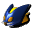
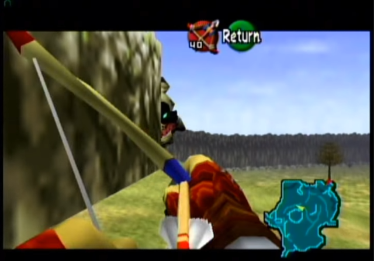
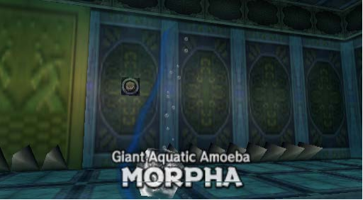

INDICE
- SOBRE O JOGO
- HISTÓRIA
- ITENS
- FRASCOS/GARRAFAS
- APRIMORAMENTOS
- MASCARAS
- GOLDEN SKULL
- HEART PIECES
- AS GRANDES FADAS
- O COMEÇO DA AVENTURA
- 1ª PEDRA ESPIRITURAL
- 2ª PEDRA ESPIRITUAL
- 3ª PEDRA ESPIRITUAL
- TEMPLO DO TEMPO
- MEDALHÃO DA FLORESTA
- MEDALHÃO DO FOGO
- MEDALHÃO DA ÁGUA
- MEDALHÃO DA ESCURIDÃO
- MEDALHÃO DO DESERTO
- GANON
- FINAL
- SOBRE O AUTOR
SOBRE O JOGO.
Ocarina of Time é um jogo de ação e aventura com elementos de RPG e quebra-cabeça disposto num vasto ambiente. O jogador controla Link, o protagonista da série, a partir de uma perspectiva de terceira-pessoa em um mundo tridimensional. Link combate principalmente com espada e escudo, mas também pode usar outras armas, como projéteis, bombas e magia. O esquema de controle introduziu técnicas como ações sensíveis ao contexto e um sistema de mira denominado "mira-Z", a qual permite que o jogador mantenha o foco de Link fixo em inimigos ou objetos. Ao se usar essa técnica, a câmera segue o alvo e Link o defronta continuamente. Ataques com projéteis são automaticamente direcionados ao alvo e não requerem mira manual. Ações sensíveis ao contexto permitem que múltiplas tarefas sejam alocadas em um botão, simplificando o esquema de controle. Na tela de jogo é exibido o que ocorrerá ao se pressionar o botão, mudando de acordo com o que o personagem executa. Por exemplo, o mesmo botão que faz com que Link empurre uma caixa se ele estiver parado defronte a ela, fá-lo-á escalar essa caixa, caso a alavanca do controle seja movida em sua direção. Muito do jogo se passa em batalhas, mas algumas partes requerem furtividade. Exploração é outra característica importante da jogabilidade; algumas áreas inicialmente inacessíveis tornam-se exploráveis quando o jogador retorna após obter um novo item, como a bomba, para explodir paredes; o gancho, para alcançar locais distantes etc. Durante o jogo, Link coleta itens e armas, cujas habilidades permitem-no acessar, percorrer e completar calabouços para avançar a história. Cada calabouço é uma área densa e independente na qual Link resolve quebra-cabeças e derrota inimigos, terminando na batalha com o chefe do calabouço, um inimigo poderoso e único. Cada calabouço e seu respectivo chefe partilham de um item principal e um tema em comum; por exemplo, Link deve usar o Arco da Fada para completar o Templo da Floresta e derrotar seu chefe, o Ganon Fantasma, ambos os quais envolvem artimanhas e descaminhos. Derrotar um chefe do calabouço concede a Link um item especial e avança a demanda principal. Em Ocarina of Time há algumas demandas paralelas, as quais o jogador pode escolher completar ou ignorar. Completar as demandas paralelas geralmente resulta em recompensas, normalmente armas ou habilidades. Em certa demanda paralela, Link troca com personagens não jogáveis itens que ele mesmo não pode usar. Nessa sequência de trocas, há dez itens que devem ser entregues dentro de seus limites de tempo individuais, e, ao final, Link recebe um item utilizável: a Espada Biggoron de duas mãos. Em outra demanda paralela, Link pode adquirir a égua Epona, que o permite viajar mais rápido e saltar sobre cercas, mas o ataque durante a montaria é restrito a flechas. Link pode viajar entre dois pontos no tempo. À certa altura da demanda principal, Link reivindica a Espada Mestra no Templo do Tempo; quando Link toma a espada, é selado por sete anos até que se torne adulto e, assim, forte o bastante para empunhá-la. O jovem Link e o Link adulto têm habilidades diferentes, e são limitados a certos itens e armas. Por exemplo, somente o Link adulto pode usar o Arco de Fada, e somente o jovem Link é capaz de atravessar pequenas passagens. Após completar o Templo da Floresta, Link pode viajar livremente entre dois períodos de tempo ao repor ou retomar a espada. Isso pode conceder a Link acesso a novas áreas; por exemplo, o jogador pode plantar sementes mágicas pelo mundo e retornar sete anos depois, encontrando plantas que transportam Link para locais secretos.
HISTORIA
Ocarina of Time se passa no reino fictício de Hyrule, local da maioria dos jogos da série, e, na cronologia fictícia, ocorre depois de Four Swords e antes de A Link to the Past, Majora's Mask e The Wind Waker, tendo sido considerado o ponto de partida da série até o lançamento de Skyward Sword. O Campo de Hyrule serve como centro de ligação à outras áreas periféricas, que têm topografias variadas e são habitadas por diferentes raças. A fada Navi desperta Link de um pesadelo no qual ele testemunha um homem de armadura negra perseguindo uma menina fugindo a cavalo. Navi leva Link à Grande Árvore Deku, que está amaldiçoada e à beira da morte. A Árvore Deku conta a Link que um "homem perverso do deserto" o amaldiçoou e quer dominar o mundo, e que Link deve impedi-lo. Antes de morrer, a Grande Árvore Deku dá a Link a Pedra Espiritual da Floresta e o envia ao Castelo de Hyrule para falar com a princesa. Nos jardins do Castelo, Link encontra a Princesa Zelda, a qual crê que Ganondorf, o rei Gerudo, está em busca da Triforça, uma relíquia sacra que concede ao seu detentor um poder divino. Zelda pede a Link que obtenha as três Pedras Espirituais para que ele possa entrar no Reino Sacro e reivindicar a Triforça antes que Ganondorf o faça. Link coleta as duas outras pedras: uma de Darunia, chefe dos Gorons; outra de Ruto, princesa dos Zoras. Link retorna ao Castelo de Hyrule, onde vê Ganondorf perseguir Zelda e sua aia, Impa, fugindo a cavalo - tal como em seu pesadelo -, e tenta impedi-lo, mas fracassa. No Templo do Tempo, Link usa a Ocarina do Tempo, que Zelda lhe deixara, e as Pedras Espirituais para abrir o portal do Reino Sacro. Aí ele encontra a Espada Mestra, mas, ao puxá-la de seu pedestal, Ganondorf, que entrara às escondidas no Templo depois de Link, aparece e reivindica a Triforça. Sete anos depois, Link, já crescido, desperta na Câmara dos Sábios, onde está Rauru, um dos Sete Sábios que protege a entrada do Reino Sacro. Rauru explica que o espírito de Link foi selado durante sete anos para que Link ficasse crescido o suficiente para empunhar a Espada Mestra e derrotar Ganondorf, que tomara Hyrule. Os Sete Sábios podem aprisionar Ganondorf no Reino Sacro, mas cinco deles ignoram suas identidades como sábios. Link é reenviado ao Templo do Tempo, onde encontra o misterioso Sheik, que o guia para libertar cinco templos do controle de Ganondorf e, assim, despertar os sábios de cada templo. Link conheceu todos os cinco sábios quando criança: sua amiga de infância, Saria, a Sábia do Templo da Floresta; Darunia, o Sábio do Templo do Fogo; Ruto, a Sábia do Templo da Água; Impa, a Sábia do Templo das Sombras; e Nabooru, chefe dos Gerudos na ausência de Ganondorf, a Sábia do Templo do Espírito. Depois de os cinco sábios despertarem, Sheik revela ser Zelda disfarçada e a sétima sábia. Ela conta a Link que o coração desequilibrado de Ganondorf fez com que a Triforça se dividisse em três partes. Ganondorf adquiriu apenas a Triforça do Poder, enquanto Zelda recebeu a Triforça da Sabedoria e Link, a Triforça da Coragem. Ganondorf aparece e sequestra Zelda, aprisionando-a em seu Castelo. Os outros seis sábios ajudam Link a infiltrar-se na fortaleza; Link liberta Zelda após derrotar Ganondorf, que em seguida destrói o castelo na tentativa de matá-los. Depois de escaparem do colapso do castelo, Ganondorf ressurge dos escombros e, usando a Triforça do Poder, transforma-se num monstro com aparência de javali, denominado Ganon, e arrebata a Espada Mestra das mãos de Link. Com o socorro de Zelda, Link recupera a espada e derrota o monstro. Os Sete Sábios selam Ganondorf no Reino das Trevas; ainda detendo a Triforça do Poder, ele jura vingança aos seus descendentes. Zelda usa a Ocarina do Tempo para enviar Link de volta a sua infância. Navi, então, deixa o jovem Link, que reencontra Zelda nos jardins do castelo.
ITENS
ESPADAS
Kokori Sword é a espada que link utiliza no começo do jogo, para obte-la basta subir uma rampa que aparece no mapa, o local está repleto de cercs, e passando por ela sera possivel,encontrar um buraco pressione o botão A, link ira se arrastar para o outro lado. Tome cuidado esse 1º labirinto apresenta bolas gigantes que ficam passando de um lado a outro desvie delas e abra o bau assim obtendo a kokori sword.
Master sword a espada que link adulto utiliza, para consegui-lá basta completar as 3 primeiras joias, e tira-lá da pedra no templo do tempo.
 Giant's Knife (Somente link adulto) espada quebrada que pode ser obtida atraves da quest em cadeia para a obtenção da biggoron swords.
Giant's Knife (Somente link adulto) espada quebrada que pode ser obtida atraves da quest em cadeia para a obtenção da biggoron swords.
 Biggoron's Sword(Apenas utilizada por link adulto) é finalmente a giant's knife na sua forma completa, para conseguir a melhor espada do jogo devemos fazer uma sequencia de quests, então recomendo estar com a epona e com a musica do templo da floresta para agilizar o procedimento,vale lembrar que essa quest tem que ser executado pelo link adulto.LEMBRETE:Se você está jogando em um emulador, nao termine a quest da biggoron sword antes de conseguir a mask of truth e o upgrade das deku nut devido a um bug. Avisos dados VAMOS LÁ! primeiro vá a kokori village e fale com a moça dos cuccos
Biggoron's Sword(Apenas utilizada por link adulto) é finalmente a giant's knife na sua forma completa, para conseguir a melhor espada do jogo devemos fazer uma sequencia de quests, então recomendo estar com a epona e com a musica do templo da floresta para agilizar o procedimento,vale lembrar que essa quest tem que ser executado pelo link adulto.LEMBRETE:Se você está jogando em um emulador, nao termine a quest da biggoron sword antes de conseguir a mask of truth e o upgrade das deku nut devido a um bug. Avisos dados VAMOS LÁ! primeiro vá a kokori village e fale com a moça dos cuccos
após o dialogo você irá receber um ovo de cucco , para choca-lo mais rapido, toque a canção 'Sun's song' e então um novo cucco vai nascer , dirijá-se a casa de lon lon ranch
ao entrar na casa veremos talon dormindo um sono profundo, fale com a mulher que está ao lado dele e então equipe a galinha nos utilitarios, foque sua mira em talon apertando "z" e então acione o botão, com isso feito talon vai agradecer por ter acordado ele, volte para a moça que lhe deu o ovo de cucco e mostre o mesmo para ela, a musiquinha de conquista ira tocar e então iremos obter uma galinha azul!, prosseguindo para a segunda parte vamos a lost woods (aquele labirinto onde temos que nos guiar pelo musica tocada) lembre-se de deixar a galinha azul equipada em seu inventario, chegando em lost woods vire a esquerda e poderemos observar um homem sentado em um tronco de arvore, tambem poderemos escutar o nosso cucco cacarejando nos dizendo que até agora tudo foi feito corretamente, mire no homem misterioso e utlize a galinha, uma caixa de dialogo ira surgir e poderemos observar que o homem se emociona ao ver o cucco, ele irá então pedir a você se direcionar a casa de poções em kokoro village, e então recebemos o item chamado: cogumelo estranho , mas vamos nos apressar pois temos um tempo de 3 minutos para chegar lá, saia rapidamente do local, vamos ao campo de hyrule e chame epona para agilizar o processo. chegando na vila se dirija a loja de poções
ao entrar e conversar com o npc, ele fala para ir na porta a esquerda, sairemos pelos fundos e subiremos então as escadas e abriremos a porta enfim chegamos a loja de poção magica, mire na vendedora e mostre a ela o cogumelo magico que adquerimos anteriormente, marque a opção 'sim' e um novo item ira surgir, a poção estranha! volte para lost woods e faça novamente o mesmo caminho, se tudo estiver correto, não iremos encontrar com o homem misterioso e sim com uma garota fada desta vez, fale com ela e mostre o remedio que adquerimos a ela marque a caixa de dialogo com 'sim' e iremos obter o prototipo da nossa espada o grande serrote do invasor!  (essa quest demora sim eu sei.) vamos para a 3ª parte da quest, dirij-ase a Gerudo Vallet(recomendo aumentar o som pois a musica deste local é magnifica.) a ponte estará quebrada, chame a epona pegue uma boa distancia e comece a correr em direção a ela, veremos uma animação de link passando por cima da ponte em um salto só! e logo a nossa direita veremos um senhor engraçado, ele ira contar uma historia e assim obteremos a
(essa quest demora sim eu sei.) vamos para a 3ª parte da quest, dirij-ase a Gerudo Vallet(recomendo aumentar o som pois a musica deste local é magnifica.) a ponte estará quebrada, chame a epona pegue uma boa distancia e comece a correr em direção a ela, veremos uma animação de link passando por cima da ponte em um salto só! e logo a nossa direita veremos um senhor engraçado, ele ira contar uma historia e assim obteremos a  broken knife! com ela em maos poderemos dar continuidade, vamos então ao vulcão presente em kokoro village, e subiremos ao ponto mais alto(aquele que ao lado tem uma fonte das fadas escondida) para nos encontramos com um enorme gorgon com problemas de vista, mostre a espada quebrada a ele e uma nova quest ira se iniciar, o gorgon diz que está com problemas devido a erupção e pede que ao REINO DOS ZORAS para que possa ser feito um medicamento e assim cure seus olhos com isso obteremos a prescrição medica! vá ao reino zora e mostre a receita ao rei zora, veja o dialogo e então receberemos mais um item os Olhos de rã! novamente temos um tempo de 3 minutos para que essa quest seja feita, teremos que ir a LAKE HYLIA localizado ao sul do reino de hyrule, utlize a epona para pular as três cercas que tem pela frente e logo a frente poderemos ver uma casa, entre e fale com o velinho presente nele, mostre a rã a ele e voalá! obteremos o nosso
broken knife! com ela em maos poderemos dar continuidade, vamos então ao vulcão presente em kokoro village, e subiremos ao ponto mais alto(aquele que ao lado tem uma fonte das fadas escondida) para nos encontramos com um enorme gorgon com problemas de vista, mostre a espada quebrada a ele e uma nova quest ira se iniciar, o gorgon diz que está com problemas devido a erupção e pede que ao REINO DOS ZORAS para que possa ser feito um medicamento e assim cure seus olhos com isso obteremos a prescrição medica! vá ao reino zora e mostre a receita ao rei zora, veja o dialogo e então receberemos mais um item os Olhos de rã! novamente temos um tempo de 3 minutos para que essa quest seja feita, teremos que ir a LAKE HYLIA localizado ao sul do reino de hyrule, utlize a epona para pular as três cercas que tem pela frente e logo a frente poderemos ver uma casa, entre e fale com o velinho presente nele, mostre a rã a ele e voalá! obteremos o nosso  COLIRIO, novamente com o tempo apertado vamos voltar ao nosso amigo gorgon no topo do vulcão e então entregar o grandioso colirio a ele, com o sorriso estampado no rosto ele e então ganharemos o nosso comprovamente para a arma!, após isso o nosso amigo gorgon nos diz para esperar alguns dias para que a arma seja concluida, toque 'Sun's song' diversas vezes e após alguns dias passados FINALMENTE fale com o gorgon e obtenha a grandiosissima
COLIRIO, novamente com o tempo apertado vamos voltar ao nosso amigo gorgon no topo do vulcão e então entregar o grandioso colirio a ele, com o sorriso estampado no rosto ele e então ganharemos o nosso comprovamente para a arma!, após isso o nosso amigo gorgon nos diz para esperar alguns dias para que a arma seja concluida, toque 'Sun's song' diversas vezes e após alguns dias passados FINALMENTE fale com o gorgon e obtenha a grandiosissima  depois de muito esforço temos agora em mãos a melhor espada do game! ela da o dobro de dano comparado a master sword e vai facilitar muito a sua jogatina, mas caso queira um pouco de dificuldade, continue a utilizar a nossa master sword.
depois de muito esforço temos agora em mãos a melhor espada do game! ela da o dobro de dano comparado a master sword e vai facilitar muito a sua jogatina, mas caso queira um pouco de dificuldade, continue a utilizar a nossa master sword.
ESCUDOS
para obtermos o nosso escudo inicial é preciso coletar 40 Rupees, para isso podemos explorar a vila inicial para conseguir o dinheiro, podendo passar nos matos, pular objetos e vasculhar algumas casas, depois de juntar o dinheiro entre na loja e assim o compre.
Hylian shield é o escudo que obtemos ao viajarmos no tempo após juntarmos as 3 pedras dos chefes enfrentados. Pode tambem ser comprado após entregar a carta a princesa zelda, e pode ser utilizado pelo link criança para bloquear alguns golpes(quando link criança utiliza esse escudo ele perde a capacidade de movimentação enquanto pressiona o botão R com o mesmo)
o escudo espelho é o ultimo escudo do jogo e pode ser obtido no spirit temple ou templo do deserto apos a execução de alguns puzzles, reflete ataques mágicos e também a luz.
TUNICAS
A kokori tunic é a tunica basica na qual link começa, tanto link adulto quanto criança podem utilizar essa roupa, porem somente link adulto pode trocar por outras.
tunica dos goron é utilizada apenas por link adulto, essa tunica é utilizada principalmente no templo do fogo onde faz com que você possa andar livremente no local, para obte-lá podemos compra-lá na goron city explodindo a parede e pagando um alto valor de Rupees ou da maneira mais pratica, falando com o filho de darunia(rei gorgon), para isso observe um gorgon que fica rolando em circulos, pegue uma bomba e jogue nele no tempo certo, quando explodir um som ira tocar e após ler o dialogo sera entregue a goron tunic
A zora tunic difernete da goron tunic permite link ficar por tempo ilimitado debaixo da água, para obte-la precisaremos de um frasco, vá para a sala do rei e veremos que o mesmo está congelado, utilize a passagem atrás dele, siga o caminho de gelo e entre na caverna, nesse local obteremos dois itens, o fogo azul e as nossas botas de aço que não vem ao caso agora, explore a caverna toda e guarde um pouco do fogo azul.Volte a sala do rei e utilize o fogo ao lado dele e assim conseguiremos libertar o rei em agradecimento conseguiremos a zora tunic!
BOTAS
Kokori boots são as botas inicias, utilizada tanto por link adulto quanto link criança, somente link adulto pode mudar as botas.
as irons boots são obtidas atraves da caverna atras do trono do rei zora, no mesmo local aonde pegamos o fogo azul, basta derrotar os inimogos que encontrar e solucionar os puzzles presentes, no final derrote o lobo de gelo e assim então obtendo o bau contendo a botas de ferro!
as botas flutuantes faz com que o link possa permanecer ''voando'' por alguns segundos em locais que normalmente ele nao poderia andar como água ou locais sem suportes, é obtido no shadow temple ou templo da escuridão após derrotar o mini-chefe presente em uma das salas escondidas.(recomenda-se que utilize a lupa para ver objetos invisiveis.)
ITENS C LINK CRIANÇA 


Ovo obtido atraves de Malon, a filha de talon dono de lon lon ranch. Obtendo após dialogor com marlon no começo do castelo da princesa zelda.
Galinha chocado do ovo dado por Marlon, serve para acordar Talon que está dormindo após fazer uma entrega a princesa zelda, é necessario para conseguir continuar o caminho até zelda.
 Carta dada por zelda, após a encontra-lá, nessa carta tem a permissão da propria princesa descrevendo que você poderá continuar sua jornada em direção a Death Mountain situada na saida a esquerda de Kokori village
Carta dada por zelda, após a encontra-lá, nessa carta tem a permissão da propria princesa descrevendo que você poderá continuar sua jornada em direção a Death Mountain situada na saida a esquerda de Kokori village
Deku nut pode ser obtido atraves das plantas carnivoras quando derrotadas, tambem encontrado derrotando outros inimigos, em jarros pelo mapa e em lojas vendido a 15 Rupees, utilizado para atordoar alguns inimigos. também se tem disponivel um upgrade para carregar mais deku nut
podemos obter derrotando as plantas carnivoras que tentam te atacar a caminho da king deku tree, espere elas ficarem retas e então dê um golpe com  podendo derrubar um graveto. Podemos compra-lás também em diversas lojas pelo jogo.
podendo derrubar um graveto. Podemos compra-lás também em diversas lojas pelo jogo.
Item que serve como munição para o estilingue de fada que se obtem dentro do deku tree, pode se conseguir quebrando jarros, destruindo plantas, derrotando monstros pelo mapa, também se tem disponivel um upgrade para carregar mais deku seeds.
o estilingue de link se é utilizado muito durante sua aventura, conquistando esse item logo na primeiro grande calabouço que se tem no game, atraves de um bau localizado no segundo andar principal.
As bombas um dos itens mais utilizados do jogo, se tem acesso a ela no começo da 2 pedra espiritual, pode se adquirir atraves de compra em lojas, destruindo jarros, baus, matos etc.
O Boomerang se obtem na jornada da 3ª pedra espiritual dentro do peixe gigante jabo jabo,utilizado para destruir inimigo e pegar obejetos pelo mapa como o drop da golden skull
Utilizado em terras fofas (tem um exemplo de como é ao lado do npc de venda) pode ser comprado perto de zora'river onde o npc está sentado comendo um pacote de feijões, cada feijão custa 10 Rupees e a cada compra o preço aumenta em 10, é utilizado para chegar em locais que normalmente link não consegue alcançar para conseguir pegar alguns piece of hearts ou itens.
 bombchu ou ratinho bomba, é uma bomba que faz um percurso na direção na qual você o soltou e explode quando encosta em algo, utilizado para fazer puzzles ao longo do jogo, pode ser utilizados pelo link criança e se é obtido atraves de lojas, puzzles.
lens of truth é um item essencial para dar continuidade a jornada de link adulto, mas para obter esse item é necessario dá musica Song of Stroms, obtido atraves do npc situado em kokori village, basta puxar sua ocarina tocar essa musica em frente a ele, e o poço de água ira secar, desca-o e então conclua a masmorra, ao final a lens of truth será sua.
A ocarina da fada é dada por Saria, amiga de link assim que você está saindo da floresta para iniciar sua aventura mundo afora, utilizada para tocar musicas que causam efeitos diversos.
ITENS C LINK ADULTO
O arco é utilizado somente pelo link adulto, podendo se obter atraves do templo da floresta, após derrotar dois novos inimigos da historia. Serve para atirar flechas de diversos tipos além da flecha padrão além de causar danos aos inimigos serve para interagir com estruturas de puzzles.
A flecha de fogo é uma junção do arco de fada + a flecha de fogo, para se fazer essa interação o jogador deve estar com a flecha equipada no C buttom ir até o icone da flecha desejada(fogo,gelo e luz) e apertar o mesmo C buttom que está equipado o arco. Além disso a flecha de fogo serve para descongelar alguns locais essenciais.
A flecha de gelo é usado para congelar alguns inimigos, deixando assim o combate mais facil de se ganhar.
A flecha da luz é a ultimo tipo de flecha que podemos obter em zelda ocarina of time,apresenta uma animação bela,consome sua barra de magia para utiliza e é essencial para derrotar ganon.
A fire Arrow é obtida após a conclusão do templo da água, onde podemos observar o lago se enchendo de água novamente, observando uma cutscene contendo sheik, após sair do dialogo fique em cima da pedra com um formato do triforce, pegue sua flecha e mire no sol e atire, você vera a fire arrow caindo, após isso e so ir em direção a ela e pega-lá.
A ice arrow é adquerida no puzzle presente em gerudo valley, apos todos os conflitos pendentes no local você estará apto a desafiar a sala de treinamento dos gerudo, fale com a mulher de roupa branca e pague 10 Rupees para entrar. Siga para a esquerda aperte  para a mensagem que aparecer e adentre a porta que tem um leão como forma. O primeiro salão lhe desafia a derrotar os inimigos em um periodo de tempo de 2 minutos, utilize sua biggoron sword para derrotar os inimigos mais rapidamente com os inimigos derrotados uma porta e um bau serão disponibilizados o bau contem uma siga para a segunda sala, vire a esquerda na primeira entrada, tome cuidado com a pedra que está rolano em sua direção e tome tambem cuidado com o monstro que se esconde nas sombras, ele aparece assim que você fica muito tempo parado no mesmo local (o som do aparecimento dele é bem nitido basta ouvi-lo) siga no sentido que a pedra está fazendo e colete o 1º Silver Rupee agora agora suba na direção da pedra se esconda no caminho a direita caso seja necessaria, continue subindo é colete a 2ª silver Rupee volte e vire a direita, e seu caminho sera barrado por uma barreira de fogo, equipe seu longshot mire para cima e jogue-o em direção ao alvo marcado. vire a direita e faça o mesmo processo, a sua frente terá duas silver rupee, mas apenas ignore,vire a esquerda apos isso vire a direita desça a primeira parte da rampa e logo vire a direita novamente, tera um silver rupee e mais uma barragem de fogo volte o caminho que fez e vá ao encontro daqueles dois silver rupees que eu mencionei ignorar, pule na direção do mais proximo a direita e após cair no chão mire para cima e use seu longshot para chegar ao ultimo, se tudo que você fez está certo, um som sera ouvido e uma porta aberta mire para cima e use novamente o longshot faça isso novamente no alvo perto da porta e pronto!, vamos a 2ª sala: logo de inicio dois lobisomen da floresta irão surgir e dois lobisomen branco, derrote-os. Um som sera audivel e um baú sera apresentado nele contém um amontoado de flechas, pegue seu lupa da verdade(lens of truth) e mire em direção a uma simples porta que está ao seu lado direito, você verá um alvo, use seu longshoot e pressione o botão, saia pela porta, vá até o final do corredor e toque a Scarecrown's Songs(musica do espantalho) para que assim surja um espantalho no local, pule para a plataforma em movimento embaixo de você e uma dica surjirá na tela. Pegue seu arco e flecha em mire nos olhos das estatuas, cada acerto fará com que o olho de uma estatua fique vermelho e um 'grunido' seja ecoado. Faça isso até que o barulho da vitoria seja tocado e um bau seja liberado juntamente com uma porta sendo aberta. Para pegar o bau não se esqueça de equipar suas e assim consiga mais uma utilize sue longshot para sair da plataforma incandescente e use novamente o longshot em direção ao espantalho para ir a plataforma superior e vá a porta liberada recentemente, encotraremos lá apenas um baú solitario contendo mais uma totalizando 3! volte novamente ao salão das estatuas, desça e vá no caminho que tem abaixo do alvo que voce utilizou. No proximo salão vemos diversos monstros que estão em chamas, pegue seu arco mire ou se preferir chegue perto e aperte o botão
para a mensagem que aparecer e adentre a porta que tem um leão como forma. O primeiro salão lhe desafia a derrotar os inimigos em um periodo de tempo de 2 minutos, utilize sua biggoron sword para derrotar os inimigos mais rapidamente com os inimigos derrotados uma porta e um bau serão disponibilizados o bau contem uma siga para a segunda sala, vire a esquerda na primeira entrada, tome cuidado com a pedra que está rolano em sua direção e tome tambem cuidado com o monstro que se esconde nas sombras, ele aparece assim que você fica muito tempo parado no mesmo local (o som do aparecimento dele é bem nitido basta ouvi-lo) siga no sentido que a pedra está fazendo e colete o 1º Silver Rupee agora agora suba na direção da pedra se esconda no caminho a direita caso seja necessaria, continue subindo é colete a 2ª silver Rupee volte e vire a direita, e seu caminho sera barrado por uma barreira de fogo, equipe seu longshot mire para cima e jogue-o em direção ao alvo marcado. vire a direita e faça o mesmo processo, a sua frente terá duas silver rupee, mas apenas ignore,vire a esquerda apos isso vire a direita desça a primeira parte da rampa e logo vire a direita novamente, tera um silver rupee e mais uma barragem de fogo volte o caminho que fez e vá ao encontro daqueles dois silver rupees que eu mencionei ignorar, pule na direção do mais proximo a direita e após cair no chão mire para cima e use seu longshot para chegar ao ultimo, se tudo que você fez está certo, um som sera ouvido e uma porta aberta mire para cima e use novamente o longshot faça isso novamente no alvo perto da porta e pronto!, vamos a 2ª sala: logo de inicio dois lobisomen da floresta irão surgir e dois lobisomen branco, derrote-os. Um som sera audivel e um baú sera apresentado nele contém um amontoado de flechas, pegue seu lupa da verdade(lens of truth) e mire em direção a uma simples porta que está ao seu lado direito, você verá um alvo, use seu longshoot e pressione o botão, saia pela porta, vá até o final do corredor e toque a Scarecrown's Songs(musica do espantalho) para que assim surja um espantalho no local, pule para a plataforma em movimento embaixo de você e uma dica surjirá na tela. Pegue seu arco e flecha em mire nos olhos das estatuas, cada acerto fará com que o olho de uma estatua fique vermelho e um 'grunido' seja ecoado. Faça isso até que o barulho da vitoria seja tocado e um bau seja liberado juntamente com uma porta sendo aberta. Para pegar o bau não se esqueça de equipar suas e assim consiga mais uma utilize sue longshot para sair da plataforma incandescente e use novamente o longshot em direção ao espantalho para ir a plataforma superior e vá a porta liberada recentemente, encotraremos lá apenas um baú solitario contendo mais uma totalizando 3! volte novamente ao salão das estatuas, desça e vá no caminho que tem abaixo do alvo que voce utilizou. No proximo salão vemos diversos monstros que estão em chamas, pegue seu arco mire ou se preferir chegue perto e aperte o botão  paa assim mirar e pronto, faça a limpa na sala, um baú ira surgir, mas ainda não acaba por aqui, equipe sua marreta megaton e bata na estatua de menor tamanho, pise no botão e o bau que estava cercado de fogo será liberado nele contem outra Agora totalizando 4 cruze a porta e outra mensagem ira surgir na sua tela. Utilizando ainda suas pegue a silver rupee mais proxima, e apos isso vá a plataforma ao lado, pegue sua ocarina e toque a canção do tempo para que uma sequencia de blocos possa aparecer, pegue a silver rupee ao lado esquerdo dos blocos, pegue o da frente, e agora suba os blocos, encontrando outra de número 5 o botão presente na sala libera caminho para pegar o bau que está protegido de chamas, caso seja do seu interesse faça isso. Siga para a proxima sala, nesta sala elimine os inimigos dentro do tempo limite uma dica super bacana nessa parte equipe sua e use a deku nut para paralizar o lagarto e logo após jogue uma bomba em direção a estatua olho, fazendo isso você ira garantir um dano no lagarto e a destruiçãoda estatua pela bomba, derrote os lagartos e adquira a ultima! desse salão de número 6, caso esteja com alguma chave faltando volte um pouco no detonado e siga os passos novamente. Se tudo deu certo e você está com 6 chaves, saia da sala e podemos observar que voltamos ao inicio novamente, siga pela direita até entrar em outra sala, essa repleta de portas trancadas, destranque primeiramente a porta da esquerda e logo apos entra na 2ª sala escale a grade presente ao lado da porta que apresenta um teto falso(se estiver tendo dificuldade use a lens of truth e olhe para cima!) para assim encontrar outra de número 7 desça e abra a porta a sua frente o baú presente na sua frente contem rupee pegue se for preciso, abra a proxima porta, siga reto no caminho e abra novamente a proxima porta o baú presente nessa sala apresenta outra quantia de rupee pegue se for necessario, abra a porta e você tem duas opções, pegar o bau que contem flechas a esquerda ou ir direto para a direita pegar a sua flecha de gelo!! Abra a penultima porta, seguida da ultima porta para finalmente abrir o bau contendo a (ufa foi uma longa caminhada!)
paa assim mirar e pronto, faça a limpa na sala, um baú ira surgir, mas ainda não acaba por aqui, equipe sua marreta megaton e bata na estatua de menor tamanho, pise no botão e o bau que estava cercado de fogo será liberado nele contem outra Agora totalizando 4 cruze a porta e outra mensagem ira surgir na sua tela. Utilizando ainda suas pegue a silver rupee mais proxima, e apos isso vá a plataforma ao lado, pegue sua ocarina e toque a canção do tempo para que uma sequencia de blocos possa aparecer, pegue a silver rupee ao lado esquerdo dos blocos, pegue o da frente, e agora suba os blocos, encontrando outra de número 5 o botão presente na sala libera caminho para pegar o bau que está protegido de chamas, caso seja do seu interesse faça isso. Siga para a proxima sala, nesta sala elimine os inimigos dentro do tempo limite uma dica super bacana nessa parte equipe sua e use a deku nut para paralizar o lagarto e logo após jogue uma bomba em direção a estatua olho, fazendo isso você ira garantir um dano no lagarto e a destruiçãoda estatua pela bomba, derrote os lagartos e adquira a ultima! desse salão de número 6, caso esteja com alguma chave faltando volte um pouco no detonado e siga os passos novamente. Se tudo deu certo e você está com 6 chaves, saia da sala e podemos observar que voltamos ao inicio novamente, siga pela direita até entrar em outra sala, essa repleta de portas trancadas, destranque primeiramente a porta da esquerda e logo apos entra na 2ª sala escale a grade presente ao lado da porta que apresenta um teto falso(se estiver tendo dificuldade use a lens of truth e olhe para cima!) para assim encontrar outra de número 7 desça e abra a porta a sua frente o baú presente na sua frente contem rupee pegue se for preciso, abra a proxima porta, siga reto no caminho e abra novamente a proxima porta o baú presente nessa sala apresenta outra quantia de rupee pegue se for necessario, abra a porta e você tem duas opções, pegar o bau que contem flechas a esquerda ou ir direto para a direita pegar a sua flecha de gelo!! Abra a penultima porta, seguida da ultima porta para finalmente abrir o bau contendo a (ufa foi uma longa caminhada!)
 A light arrow é obtida no castelo ganon, a propria zelda lhe dá essa flecha. Utilizada para paralizar os poderes de ganon durante o combate. cada flecha utilizando a light arrow consome um pouco de sua barra de stamina
A light arrow é obtida no castelo ganon, a propria zelda lhe dá essa flecha. Utilizada para paralizar os poderes de ganon durante o combate. cada flecha utilizando a light arrow consome um pouco de sua barra de stamina
o martelo megaton serve para destruir estruturas, acionar botões enferrujados e também se pode utilizar como uma 'espada' (ja fiz alguns testes pessoais e ja consegui finalizar o jogo só utilizando o martelo.)
GARRAFAS
As são utilitarios que tem seu devido valor durante a sua jornada, no total são 4 garrafas espalhadas pelo mapa nela você pode guardar poção vermelha(recupera pontos de vida) poção verde para recuperar a barra de estamina que serve para curar todos os pontos de vida e a barra de estamina  guarda uma fada rosinha que ao consumir cura todos os seus corações de vida. se utiliza para a execução de alguns puzzles Utilizada para descongelar alguns npc e baus congelados. Usado para solucionar alguns puzzles Armazena leite tambem utilizado para recuperar pontos de vida Carta contendo a mensagem da princesa zora, usada para mostrar ao rei zora. contem um fantasma utilizado como ponto de troca para um npc localizado na cidade devastada com link adulto.
guarda uma fada rosinha que ao consumir cura todos os seus corações de vida. se utiliza para a execução de alguns puzzles Utilizada para descongelar alguns npc e baus congelados. Usado para solucionar alguns puzzles Armazena leite tambem utilizado para recuperar pontos de vida Carta contendo a mensagem da princesa zora, usada para mostrar ao rei zora. contem um fantasma utilizado como ponto de troca para um npc localizado na cidade devastada com link adulto.
Iª GARRAFA
A primeira garrafa é bem simples de se conseguir, vá a kokori village e você observará que existem diversas galinhas pelo mapa, tudo que precisa fazer é pegar essas galinhas chegando perto delas e apertando com elas em maos se direcione para a direita da cidade até ver um cercado e uma mulher de cabelo vermelho, jogue a galinha no cercado e faça isso com todas as outras galinhas perdidas pelo mapa, vale lembrar que as galinhas servem tambem para você flutuar de um lado para o outro usado para chegar ao local de outra galinha, a também uma galinha presa em uma caixa ao lado esquerdo de uma casa, basta rolar apertando o botão e bater na caixa, libertando a galinha. Com todas as galinhas no cercado, fale com ela obtendo assim a primeira
IIª GARRAFA
A segunda garrafa também é bem facil de se conquistar, vá ao estabulo em lon lon ranch que se encontra no centro de hyrule, chegando la entre na porta a esquerda, você verá talon dormindo, converse com ele e o mesmo irá lhe propo um desafio, pegaros cuccos certos dentro do tempo limite, após isso você irá adquirir outro frasco
IIIª GARRAFA
para a terceira garrafa vá ao lar dos zoras, suba até a sala do rei e vire a esquerda, você verá uma cachoeira e um zora ao lado, fale com ela e pague o desafio, neste desafio você terá que coletar as moedas que estão ao fundo do mar, se jogue da cachoeira e aperte o botão para que link afunde na água, após coletar todas as moedas volte ao zora no topo da cachoeira e você irá receber  A escala de prata! com isso você ira conseguir ir mais longe nos seus mergulhos, com o item em mão pule da cachoeira e aperte indo em direção ao tunel que tem embaixo da água, você sairá em lake hylia mergulhe novamente e verá que existe um frasco, nele contem a contendo a mensagem da desaparecida princesa zora
A escala de prata! com isso você ira conseguir ir mais longe nos seus mergulhos, com o item em mão pule da cachoeira e aperte indo em direção ao tunel que tem embaixo da água, você sairá em lake hylia mergulhe novamente e verá que existe um frasco, nele contem a contendo a mensagem da desaparecida princesa zora
IVª GARRAFA
Agora vem o grande desafio, as 3 primeiras garrafas são bem simples para que a ultima possa ser executada! para esvazie as suas garrafas(espero que não tenha colocado nenhuma fada!) vá para o futuro e vire o link adulto, vá ao campo hyrule prepare suas flechas e chame a epona nós caçaremos ao todo 10 fantasmas! a cada 3 coletado com os frascos vamos levar ao vendedor que se localiza no mercado destruido de hyrule. Abaixo você confere a localização de cada fantasma é so seguir o mesmo lugar no mini-mapa, matar os fantasma com uma flecha e coletar os fragmentos com a garrafa, após 3 coletas vá ao mercador de fantasma que está logo a esquerda na entrada do castelo, dê os fantasma a ele, fala isso até entregar os 10 e receba sua ultima garrafa!
FANTASMA1FANTASMA2

FANTASMA3
FANTASMA4
FANTASMA5

FANTASMA6
FANTASMA7
FANTASMA8
FANTASMA9
FANTASMA10
APRIMORAMENTOS
Ainda na seção de itens temos alguns equipamentos que podem ser melhorado, que influenciam diretamente em sua aventura, alguns ajudam a passar de desafios outros aumentam sua capacidade de carregar um determinado item. Comçando com o mais simples de se adquirir o bracelete gorgon, para pega-lo basta tocar a saria'song ao rei gorgon, ele irá lhe dar o barcelete, permitindo a você pegar pedras, bombas e arbrustos essencial para o link criança pogredir na historia.
A silver Gauntlet é uma manopla que você pega no spirit temple ou templo espiritual, lhe permite carregar pedras cinzas, na qual o link adulto tem dificuldades para lidar.
A gold Gauntlet é a ultima evolução, você so vai conseguir pega-lá quando estiver com todos os medalhões adquridos, assim poderá adentrar ao castelo de ganon, fazendo a sala do templo da escuridão e conseguindo então a gold gauntlet que lhe permite pegar as pedras enormes que tem ao arredor do castelo de ganon.
Obtida atráves do mini-game da cachoeira encontrado ao lado da sala do rei no reino dos zoras, basta pegar as moedas para pegar a escama prateada, faz com que link possa mergulhar por mais tempo.
A escama dourada é a evolução da escama prateada, permite com que link possa mergulha por mais tempo do que a anterior, para obte-lá você precisa pescar um peixe maior que 14 pounds no centro de pesca situado na extrema esquerda hyrule lake, (perto dos espantalhos)
Para aumentar a capacidade de carregar pedaços de galho, vá para lost woods, faça a sequenciade caminho: direita, esquerda, direta, esquerda e esquerda, vá para perto das borboletas até que ache uma passagem secreta, equipe a sua Skull Mask e logo você verá uma legião de dekus correndo em sua direção, não precisa se preocupar eles não vão te machucar, espere o dialogo aparecer, e em troca de 20 rupees eles irão aumentar a sua capacidade de carregar gravetos. Para adquirir seu SEGUNDO upgrade em gravetos, vá a lost woods novamente, faça o caminho da esquerda e esquerda até sair de frente para a ponte que passamos no inicio do game, siga reto até o final e virando a esquerda novamente você verá um deku, derrote-o e ao conversar com ele aceite a proposta de 40 rupees com isso feito você terá disponivel agora 30 deku sticks!
esse é bem simples, vamos novamente a lost woods, e vire a direita você observará um deku escondido no topo da arvore, e um circulo de madeira simulando um alvo, pegue seu estilingue(link criança) e tente acertar o mais no centro posssivel para que a cada acerto dê 100 pontos, acerte 3 vezes para obeter seu aumento em deku seed!
vá para o market, e entre na casa de tiro ao alvo, fale com o homem grande, e você terá o trabalho de quebrar rupees com tiros de estilingue, acerte todos para receber a recompensa no aumento das deku
Após obter a bomb bag pequena na sua aventura do 2 pedra espiritural, volte para a goron city ainda como o link criança, e vai ter um goron rolando(semelhante ao goron que lhe dá a tunica de fogo se estiver mais avançado na historia) jogue uma bomba nele proximo ao tunel fazendo isso ele lhe dará o upgrade da bolsa de bomba indo a 30 bomba
Siga para o market como link criança no periodo noturno e vá para a casa de jogos do bombchu bowling estará aberta, pague o valor de 30 rupees o premio é aleatorio e um deles pode ser o aumento de sua bagagem de bombas para 40.
 semelhante ao link criança, vá para kakariko village e lá terá um desafio de arquearia, pague os rupees e faça o mesmo procedimento que fez com o link criança, destrua todos os objetos com as flechas e ganha o upgrade do quiver.
semelhante ao link criança, vá para kakariko village e lá terá um desafio de arquearia, pague os rupees e faça o mesmo procedimento que fez com o link criança, destrua todos os objetos com as flechas e ganha o upgrade do quiver.
para pegar o ultimo upgrade do quiver vá para gerudo valley, pule a ponte e na cidade vire a direita e fale com o npc, ele te da um desafio de tiro ao alvo, faça 1500 pontos montado na epona e obtenha o ultimo quiver
MASCARAS
Vá para kakariko village e monstre a  para a guarda liberar sua passagem, com isso feito fale com ela novamente ela ira comentar que nao tem tempo de buscar uma mascara que seu filho queria muito, volte para o market e entre na loja de mascaras, e pegue a keaton mask.
para a guarda liberar sua passagem, com isso feito fale com ela novamente ela ira comentar que nao tem tempo de buscar uma mascara que seu filho queria muito, volte para o market e entre na loja de mascaras, e pegue a keaton mask.
vá para kakariko village vista a mascara e venda-a para a guarda por 15 ruppes, então volte para o market entre na loja de mascaras pegue o dinheiro por vendar a keaton mask e pegue a skull mask.
Siga para o loost woods,vá para a esquerda e você encontrará o um monstrinho tocando um instrumento num tronco maior, suba no tronco menor equipe a skull mask IMPORTANTE:VOCÊ TEM QUE TER TOCADO A SARIA'SONG PARA ESSE MONSTRINHO CASO CONTRARIO NAO FAÇA ESSE PROCEDIMENTO. fale com ele e o mesmo irá comprar a skull mask, volte para o market pegue o dinheiro pela mascara vendida e adquira a spooky mask
coloque a spooky mask e vá para o cemiterio situado em kakariko village, fale com o garotinho com a mascara equipada, ele irá comprar de você para parecer o dampé coveiro local(ele é feio e o garotinho quer ser igual então ele compra a máscara) volte para o market, e pague o dinheiro e agora a bunny mask está dispónivel.
Indo para a nossa mas of truth será necessario equipar a nossa bunny mask, e ir para os arredores de hyrule, até encontramos um corredor passando pelo caminho PARA ISSO VOCÊ PRECISA DA OCARINA OF TIME(OCARINA QUE A ZELDA JOGA FUGINDO DE GANON) siga o corredor até que ele se canse ou use a 'Sun's song' ele se cansará mais rapido, quando ele se sentar coloque a mascara do coelho e fale com ele, volte ao market pague o valor e pegue a mask of truth.
tambem podem ser adquiridas, porém elas não tem nenhuma influencia no jogo, serve para equipar e falar com alguns npc aleatorios
GOLDEN SKULL
As golden skulls são itens colecionaveis presentes em zelda ocarina of time, essa 'caveirinha' está espalha por todos os mapas do jogo, em formato de aranha ao elimina-las poderemos então dropar o famoso token da aranha dourada . Diz a lenda que uma familia de kakariko village foi amaldiçoada por um certo alguem, transformados em aranhas essas pessoas estão presas na sua casa sem poder sair, para quebrar a maldição link deve coletar as golden skulls e aos poucos dessipando a encantando.Quando acumulados a uma certa quantia, você pode ir a kakariko village, e entrar na casa da familia aranha para coletar suas recompensas.
Ao coletar um total de 10 golden skulls você receberá a Adult's Wallet podendo então carregar um total de 200 rupees
Ao coletar um total de 20 golden skulls Você recebera a Stone of Agony, fazendo com que seu Rumble Pack(um acessorio que é inserido no controle do N64) vibre ao encontrar segredos pelo jogo.
Ao coletar um total de 30 golden skulls você recebera a  Giant's Wallet, podendo carregar um total de 500 rupees
Giant's Wallet, podendo carregar um total de 500 rupees
Ao coletar um total de 40 golden skulls você recebera um um pack de bombchu(inutil eu sei)
Ao coletar um total de 50 golden skulls você recebera uma pedaço de coração. .png)
Ao coletar um total de 100 golden skulls (TODAS) você recebera 1 rupee dourado que equivale a 200 rupees e que pode ser pego de forma ilimitada!
CAÇA AS ARANHAS
Agora que já lhe mostrei todas as recomepnsas vamos caçar essas benditas aranhas! as aranhas que carregam o token tem o mesmo formato sendo esse: e fazem um som único e ao coleta-lás tambem ouvira algo semelhante. Para caçar todas as aranhas serão necessarios que o progresso da histórias seja feito junto, vale lembrar tambem que podemos pegar os tokens utilizando itens como Boomerang do link criança e o hook/longshot do link adulto, basta mirar com o e acionar algum botão C que você colocou o equipamento. sem mais delongas vamos lá!
LINK CRIANÇA
Kokori forest
01: Atrás da casa dos irmãos(essa casa fica localizado do lado esquerdo da saida para irmos a ponte apos concluirmos a kokori forest) espere ficar de noite e vá atrás da casa e você logo vai escutar o ruido da primeira aranha.
02: utilizando uma garrafa de insetos plante os insetos na terra fofa perto da loja, e voalá! uma aranha irá sair do buraco
03: A casa ao lado da loja, espere ficar de noite vá atrás dela equipe seu Boomerang mire na aranha e colete seu token, caso apresente dificuldades volte aqui com link adulto e utilize o hookshot para coleta-lá
DENTRO DA ÁRVORE DEKU
04: Dentro da primeira sala que você irá entrar, com três plataformas, olhe para sua esquerda e você irá encontrar a aranha.
05: Após quebrar a teia que fica no meio da sala(suba todos os andares pule e aperte para rasga-lá). Logo que cair você a encontrará use o estilingue para mata-lá.
06: na mesma sala da skull 05 olhe para a grade, ao norte empurre a pedra para que assim você consiga pegar-lá
07: Atrás da unica parede que se pode explodir em dekutree, exploda a parede e você va encontra-lá.
Arredores de Hyrule
08: Saindo de kakariko village, vire a direita e ande até a arvore que fica a esquerda do castelo, coloque uma bomba, e um buraco será formado, entre e derrote a aranha que se encontra no topo.
Market
09: no mesmo local aonde trocamos as almas ao mercador para pegarmos o 4º frasco, vá com link criança e destrua a caixa que está na entrada.
Hyrule Castle
10: Na primeira árvore a esquerda de Marlon, role pra ela e uma aranha ira cair.
11: depois de driblar todos os guardas, siga a água até chegar a uma árvore, toque a canção song of strom um buraco irá se abrir, caia e derrote a aranha
Lon Lon Ranch
12: Ao entrar olhe para a árvore a sua esquerda, role nela e voalá uma aranha irá cair.
13: Na parte de trás do cercado de madeira, terá uma aranha (VENHA A NOITE)
14: No muro de pedra do rancho, ao lado o estabulo de vacas ao fundo.(VENHA A NOITE)
15: Perto do teto da casa de talon (primeira porta que você vera a esquerda) use o estilingue e o para coleta-lá (VENHA A NOITE)
Lost Woods
16: Vá duas vezes para a esquerda, equipe seu frasco com insetos e a utilize no solo fofo proximo, a aranha ira sair e basta derrota-la
17: Volte ao inicio e faça o seguinte caminho: direita, esquerda, direita, esquerda e esquerda, ache o solo fofo e novamente utilize seu fraso com instos
kakariko village
18: Role na primeira Árvore que encontrar(tem uns npc's dançando, se vier a noite terá um homem com a cabeça abaixada) derrote a aranha e colete seu token.
19: Na parte esquerda da casa da aranha (VENHA A NOITE)
20: Na pilha de tijolos que os operarios estão trabalhando. (VENHA A NOITE)
21: Na casa perto da guarda que impede o seu caminho para ir ao vulcão,(de frente a casa de poções aonde fazemos uma parte da quest da espada.) (VENHA A NOITE)
22: Há uma escada que leva bem pro alto, no caminho para ir a montanha da morte, suba ela e derrote a aranha. VENHA A NOITE
Cemiterio de kakariko
23: Na parede a sudeste utilize o para colete-lá.
24: Utilize o seu frasco de insetos no terreno fofo para que uma aranha saia de lá.
Montanha da morte
25: Solo fofo ao lado da pedra que dá para a caverna de dodongo (o segundo chefe de link criança) pegue seu frasco com insetos e derrote a aranha que sai dele.
26: Ao começar subir a montanha, você notará a sua direita uma parede que não condiz com o cenario(ela parece meio rechada) pegue sua e exploda a parede, logo após derrote a aranha e colete a golden skull. (VENHA A NOITE)
Goron city
27: No ultimo andar de goron city haverá uma sala lotadas de pedras pegue suas e as exploda, até achar uma caixa que irá conter uma aranha.
Dodongo's Cave
28: na passagem a direita da sala principal, haverá uma parede que pode ser explodida. A destruia utilizando um bebe dodongo perto dela, e pegue a aranha.
29: Na sala das escadas aonde utilizamos as bombas para descer o nivel delas, olhe proximo a trepadeira perto do segundo andar.
30: Na sala antes do chefe que você tem que executar um puzzle empurrando alguns blocos, vá para o norte e exploda a estatua para revelar a skull, utilizando suas bombas.
31: Você precisa entrar na dungeon mais tarde, usar o pilar que se eleva na grande sala principal para alcançar o segundo andar e então prosseguir até a sala da escada. A escada ainda estará suspensa, então você poderá alcançar a Skulltula
Zora's River
32: Role na primeira árvore que encontrar quando entra em zora river.
33: perto da entrada(da cachoeira) desça até encontrar uma escada na parte de baixo, VÁ A NOITE
Lake hylia
34: Atrás do laboratorio do doutor, utilize o para coleta-lá
35: No solo fofo perto do laboratorio utilize seu frasco com insetos e derrote a aranha.
36: Perto de um dos pilares da pequena plataforma que voce consegue a .
Zora Fountain (JabuJabu)
37: Ao sudeste haverá uma árvore, role nela e derrote a aranha
38: Na parede a direita do tronco caido usando o VENHA A NOITE
DENTRO DE Jabujabu
39: Na trepadeira da sala com o botão no meio que eleva o nivel da água. Use o para derrota-la
40: Na sala que apresenta diversos buracos que te levam a niveis abaixo(onde encontramos a princesa) siga para o buraco aonde tinha um tentaculo verde após passar essa parte, você cairá proximo da aranha.
41: Na mesma sala da skull número 39. use o
42: Na sala antes do chefe, perto da trepadeira, use o
Death Mountain Crater
43: Quebre a caixa que está logo na entrada, lembre-se você não pode ficar nesse local por muito tempo.
44: No solo fofo perto da entrada do templo do fogo, pegue seu frasco com insetos e derrote a aranha.
Bottom of the Well(Lugar da Lens of truth)
45: Olhe na parede na sala atrás da sala trancada a esquerda da area central, use o
46: Na parede da sala trancada a direita use o
47: Na parede da sala que aprensenta o monstro sugador (aquele que rouba seus itens se te pegar). use o
Gerudo Valley
48: Na parte debaixo proximo ao rio haverá um solo fofo equipe seu frasco com insetos e derrote a aranha.
49: quando tiver passando a pequena ponte de madeira vire a direita e derrote a aranha. VENHA A NOITE
Desert Colossus
50: No solo fofo perto da entrada pro templo espiritual, para chegar aqui com link criança basta ter progredido a história o suficiente para ter aprendido a Requiem of Spirit, ai basta toca-lá com o link pequeno. Equipe seu frasco com insetos e derrote a aranha.
Spirit Temple
51: Após passar agachado por dentro do buraco no começo com o link criança, entre a direita e a aranha estará do outro lado do buraco.
52: Após passar pelo segundo buraco estreito escale a rocha e vire de costas, use seu e capture o token.
53: Está lozalizada no corredor após o puzzle de colocar o sol na luz, está acima. utilize o para coleta-lá.
LINK ADULTO
HYRULE FIELD
54: Encontre um circulo de pedras proximo a entrada de gerudo valley, a pedra tera uma cor avermelhada, equipe sua marreta megatron e a destrua, lá use a  Din's Fire para revelar a aranha.
Din's Fire para revelar a aranha.
LOST WOODS
55: Vá e siga o caminho de: direita,esquerda,direita,esquerda e esquerda, é o mesmo local no qual nós pegamos o upgrade das deku nut, plante um com link criança e volte a esse mesmo local com o link adulto, espere a plataforma se locomover e então derrote a aranha.
Sacred Forest Meadow
56: Vá na parte de cima do labirinto, subindo a escada que tem no final do percurso(se preferir use a canção do templo da floresta para adiantar o trabalho, ao subir na escada vira a esquerda e você verá a aranha VENHA A NOITE.
Kakariko Village
57:Na parede sobre a casa da moça das galinhas que ajudamos no inicio VENHA A NOITE use o para subir no telhado.
Death Mountain Trail
58: Vá ao local aonde jogamos a bomba para liberar a caverna que dá acesso a dodongo's cave observe que existe uma pedra vermelha, equipe seu para destruir a pedra, desça e elimine a aranha VENHA A NOITE
59: Antes de subir a montanha da morte que apresenta aquela erupção de pedras que voam a você existem pedras vermelas no local, equipe sua e destrua as pedras até encontrar skull.
Goron City
60: Essa é bem simples, assim que você chegar a goron city observe que existem três cordas que ligam a uma determinada plataforma, chegue nessa plataforma e você já ouvirá os ruidos da aranha, ela está atras dessa placa, desça equipe seu longshot e atire contra ela.
Dodongo's Cavern
61: Vá direto ao corredor grande que existe a direita, aonde fica os bebês dodongos, lá um espaço a esquerda no meio do corredor, toque a musica 'Scarecrown's Song' para que um espantalho apareça, equipe seu use-o no espantalho e derrote a aranha.
Zora's River
62: Aqui será necessario que você tenha plantado um com link criança no terreno fofo presente, após esse feito volte como link adulto e utilize a plataforma móvel, fique na plataforma até ela passar ao lado de uma rocha rodeada por mini rochas, vá para esse lugar e olhe na parede. VENHA A NOITE
63: Seguindo o caminho proximo a cachoeira(um pouco antes dela) haverá um corredor estreito, olhando na parede você a encontrará VENHA A NOITE
Zora's Domain
64: Vá para a sala do rei, vire a esquerda e no topo da cachoeira que agora está congelada, você verá a aranha.
Lake Hylia
65: No topo da árvore no centro da ilha, acima do templo da águam utilize o para subir a árvore.
66: Entre no laboratório do doutor vá até o poço que existe lá, equipe suas quando chegar ao fundo role na caixa que aparenta lá e pegue a skull.
Zora's Fountain
67: Na pequena ilha a direita, perto da fonte da fada que liberamos utilizando uma bomba, levante a rocha cinza para revelar o buraco e então pegar a skull (SERA NECESSARIO QUE VOCÊ TENHA AS Luvas prateadas
Forest Temple
68: Suba a trepadeira que tem logo no inicio após mata os dois lobisomens. use o para facilitar o trajeto
69: Na parede a direita da grande sala, perto da escadaria, use o
70: Na sala aonde é possivel ver uma sacada, um poço e uma mureta com corações, olhe na parede a norte e mate a aranha com a ajuda do
71: Nessa mesma sala vá em direção a sacada e lá obtenha o proximo token. utilizando o hookshot para facilitar o processo
72: Na sala giratoria após derrotar os fantasma que fazem descer a plataforma, gire a sala de uma forma que dará acesso a uma porta contendo uma skull.
Fire Temple
73: Logo que atravessar a primeira sala, ao norte você podera enxergar um bloco azul, toque a 'Song's of time' para trocar a posição do bloco e com isso feito estará disponivel uma nova sala que contém a skull use o para facilitar o procesos.
74: Na sala aonde tem diversas pedras rolando em sua direção que formam um labirinto, haverá uma parede falsa que pode ser explodida utilizando uma basta encontra-lá ao nordeste, as paredes falsas fazem um som diferente das originais.
75: Na sala com azulejos giratorios, atrás do bicho que rouba equipamentos.
76: No segundo andar do labirinto das bolas rolantes existe um local no alto da sala que é possivel tocar a música 'Scarecrow's song' para assim aparecer um espantalho no topo depois que subir até o espantalho utilize novamente o para chegar a um local secreto.
77: vá para a proxima sala após pegar a skull de número: 75 olhe para a esquerda na sala e você verá a skull
Ice Cavern
78: Olhe a parede na sala das laminas giratorias, utilize o para pega-lá
79: Na sala que você pega a bussola (adireita da sala das laminas giratorias) que contém um bau congelado. Use para facilitar o processo.
80: Na parede na sala a direita da sala das laminas giratorias, aonde se empurra os blocos de gelo. Utilize o hookshot para facilitar o processo
Water Temple
81: Emcima do redemoinho proximo a sala do rio submerso, utilize o para facilitar a coleta.
82: Dentro da torre, deixe o nivel da água no medio e a pegue utilizando o
83: Atrás da cachoeira antes que se adquirir a chave do chefe (existem bolas rolando por essa sala, junto com redemoinhos pelo caminho) use o tambem nessa sala
84: No lado direito da sala aonde é preciso de locomover utilizando as plataformas que ficam descendo em uma especie de elevador, use o pra pegar-lá
85: A esquerda da sala que encontramos a princesa zora, ao chegar lá siga até o final do caminho haverá um skull junto a uma grade, segure o seu botão para fazer link carregar sua espada e desferir um golpe mortal a aranha junto com a ativação do interruptor dando passagem para coletar o token
Shadow Temple
86: Após derrotar os guerreiros caveira, vá para a esquerda e você encontrará uma sala com laminas giratorias invisiveis, use a para enxerga-lás e então use seu para pegar a skull presente na sala.
87: Na sala com as laminas que tentam te atacar, na cela a esquerda. Use o para coletar
88: Na sala que apresenta um jarro com uma caveira estampada pegando fogo, atrás dela haverá uma skull.
89: Na sala com o navio fantasma fique na plataforma perto do navio e toque a música 'Scarecrow's Song' para assim fazer com que um espantalho apareça e se obtenha a skull, utilize o para facilitar
90: Na sala com três jaros de caveira giratorias atrás delas haverá uma skull. use o para facilitar.
Gerudo Valley
91: Olhe para o muro perto da tenda quando você atravessar a ponte quebrada. use o para facilitar. VENHA A NOITE
92: vá até o amontoado de pedras proximo a tenda, utilize o para facilitar. VENHA A NOITE
Gerudo Fortress
93: Vá para o leste bem no alto do muro central, utilize o para facilitar. VENHA A NOITE
94: No norte do desafio de tiro ao alvo a cavalo utilize o para facilitar. VENHA A NOITE
Haunted Wasteland
95: Utilizando as para enxergar o caminho, você irá se deparar com um forte de pedras, (aonde achamos o guia para nos levar ao ultimo templo) dentro desse forte veremos uma skull.
Desert Colossus
96: Vá para a esquerda perto da palmeira e você encontrará a skull utilize o para facilitar.
97: Plante um como link criança na entrada do spirit temple, volte a esse mesmo lugar com link adulto e utilize a plataforma móvel, saia da plataforma quando essa chegar perto de uma grande rocha,(proximo ao fonte das fadas do local)
Spirit Temple
98: Na sala com as pedras que rolam com os rupees cinzas, haverá uma passagem bloqueada pela pedra grande azul, toque a 'Song of Time' para que ocorra o deslocamento da pedra. E pegue a skull
99: Na sala com a estatua enorme na plataforma a esquerda da estatua toque a musica 'Scarecrow'Songs' para que um espantalho apareça e assim use o para chegar até o local
Ganon's Castle
100: FINALMENTE, CHEGAMOS A ULTIMA SKULL! vá em direção a ganon castle e logo no começo a esquerda você poderá ver a ultima aranha. derrote e finalmente você completou a quest das aranhas!
Após a coleta dos 100 tokens, a familia inteira está livre da maldição e você poderá conversar com todos para receber os agradecimentos!
HEART PIECES
Os pedaços de corações são itens tambem colecionaveis que podemos adquirir ao longo de nossa aventura em zelda ocarina of time, a cada 4 pedaços de corações nós conseguimos aumentar 1 coração completo em nossa barra de vida, vale lembrar que a cada chefe derrotado podemos obter diretamente um coração completo. Ao todo temos 36 pedaços de corações espalhados pelos mapas. Para facilitar o processo colocarei em ordem: LOCAL qual LINK sera utilizado e se será necessario o uso de algum ITEM especial para coletar os pedaços de coração.
LON LON RANCH LINK:CRIANÇA ITENS:NENHUM
1: No estábulo aonde tem uma vaquinha e diversos caixotes de leite, faça o puzzle corretamente que dá acesso a um buraco, ao se rastejar com o link por esse túnel do outro lado sera possivel visualizar o nosso 1 pedaço de coração.
Death Mountain Trail LINK:Ambos ITENS:
2: Plante uma na entrada de dodongo's cave, após isso use o link adulto para se locomover até o 2º pedaço de coração.
Hyrule Field LINK:ADULTO ITENS:
3: Siga a direita após sair do market situada em hyrule castle, vá andando até encontrar uma cadeia de arvores, vá até a árvore que se destaca das demais, coloque uma bomba e entre pelo buraco formado, equipe suas iron boots e pegue o coração.
Hyrule Field LINK:OS DOIS ITENS:
4: esse é muito simples, com qualquer um dos dois links vamos indo em direção a lake hylia, indo até o local iremos ver uma área cercada quadrada coloque uma bomba no centro da area derrote o deku e pague o valor pelo pedaço de coração.
Kakariko Village LINK:CRIANÇA ITENS: 200 Rupees ou mais:
5: Vá com link criança para o cemiterio, lá encontraremos nosso amado danpé, fale com ele quando o mesmo estiver proximo de alguma lapide, feito isso pague o valor de 10 rupees para que danpé cave no local, se estiver com sorte ele cavará o seu pedaço de coração rapidamente, caso contrario terá que investir alguns rupees no processo.
Kakariko Village LINK: OS DOIS ITENS:pulo com ou :
6: Para pegar esse coração existem duas formas, podemos ir a kakariko villge com ambos os links e subiremos a torre problema a montanha da morte,(aquela na qual pegamos uma skull). Se estiver com link criança suba a torre olhe para frente aperta Z e link entrará no modo foco, aperte com o analogico para a esquerda + o botão fazendo com que link caia em cima da casa. Caso esteja com link ADULTO basta mirar seu hookshot no teclado da casa e pronto.
Kakariko Village LINK:OS DOIS ITENS:
7: Esse coração é tambem bem simples de se pegar, eu recomendo utilizar o link ADULTO para agilizar o processo, vá até a moça das galinhas em kakariko village e veja que existe um teclado dentro do cercado, suba as mini plataformas com o link e ande reto na direção do telhado, você irá perceber que podera se pendurar diretamente (isso é um glitch muito amigo!) tambem pode utilizar o para se prender no telhado. Caso opte por usar o link CRIANÇA após subir toda a montanha da morte e encontrar a fonte das fadas, fale com a coruja insuportavel ela te deixara proximo a entrada anteriormente comentada, basta entrar e pegar o coração
Kakariko Village LINK:ADULTO ITEM:NENHUM
8: Com o link adulto se dirija novamente ao cemiterio, vá para a mesma tumba que dampé lhe deu seu amado e faça agora um novo desafio, faça a corrida que ele te proponhe e ao final você ganhará mais um pedaço de coração.
Kakariko Village LINK: OS DOIS itens:50 gold skulltula :
9: Esse também é bem simples, colete 50 tokens de goldenskulltula e vá para a casa aranha em kakariko village, lá você encontrará alguns habitantes com a maldição libertada, fale com ele e em retribuição você ganhará seu pedaço de coração.
Kakariko Village LINK:OS DOIS ITENS: ou :
10: Compre os feijões magicos com o npc do começo da cachoeira dos zora's vá para então para kakariko village e plante o mesmo no cemiterio aonde tem a terra fofa a esquerda, volte ao mesmo local com o link adulto e então suba na platafora movel, também é possivel usar o seu fiel para se prender a caixa e pegar o coração
Kakariko Village LINK:OS DOIS ITENS: Sun's Song:
11: No cemiterio vá andando reto até encontrar uma lapide com flores ao seu arredor entre no buraco, derrote o zumbi (cuidado para nao olhar diretamente a ele!) e então toque a sua 'sun's song' para receber um baú contendo um pedaço de coração
Zora's River LINK:CRIANÇA ITENS: Song of Storms:
12: No caminho para a cachoeira dos zoras, você avistará um tronco caido com alguns sapos, chegue perto deles e toque a musica da chuva para receber um pedaço de coração
Zora's River LINK:CRIANÇA ITENS: As 5 canções normais da Ocarina:
13:no mesmo local dos sapos, você tera que tocar as 5 canções da ocarina, os sapos vão pedir para você completar um mini game apertando os botões na ordem correta na qual a mosca aparece.
Zora's River LINK:OS DOIS ITENS: ou :
14:Com link criança utilize a galinha do começo do mapa para seguir em frente, até chegar a um ponto na qual você terá que abandonar a galinha para subir uma plataforma, se vire e pegue o coração, o mesmo pode ser feito utilizando as de link adulto.
Zora's River LINK:OS DOIS ITENS: ou :
15:Com a mesma logica, pegue a galinha do começo e vá até o final do caminho, ao chegar na plataforma em que tocamos a musica pra cachoeira se dividir, olhe para trás e verá uma plataforma com o pedaço de coração, use a galinha para flutuar até lá, se preferi vá ao mesmo local com o link adulto equipe sua e plane até a plataforma.
Market LINK:CRIANÇA ITENS: CACHORRINHO:
16: Esse é bem divertido, vá A NOITE no market, você notara diversos cachorros pulando de um lado para o outro, se seguir a esquerda vera um beco, entrando lá encontrará uma casa na qual a mulher fala que perdeu seu amado cachorro, volte ao patio e siga um cachorrinho branco até o mesmo começar a te seguir.Leve o cachorro pra mulher e ganhe um coração.
Market LINK:CRIANÇA ITENS: Habilidade com Bombchus – 30 Rupees:
17: No mesmo local do coração anterior espere ficar de dia e entre na loja de bombas, uma mulher lhe propõe um desafio ao mirar seus bombchus em alvos, complete o desafio de maneira aceitavel pela mulher para receber um coração.
Market LINK:CRIANÇA ITENS: 10 Rupees:
18: Novamente a noite você podera jogar um mini-game em uma das casas que ficam aberto a noite, esse consistem em você adivinhar em qual baú a chave está escondida para adentrar a proxima porta, pode parar dificil mas é so ativiar seu magnifico item e você poderá ver em qual baú a chave está posicionada.
Lost Woods LINK:CRIANÇA ITENS:  Saria's Song:
Saria's Song:
19:Ao entrar em nosso querido labirinto siga pra esquerda, suba no toco e fale com o simpatico kid presente, toque a Saria's song a ele e como compensação você receberá seu pedaço de coração!
Kakariko Village LINK:ADULTO ITENS: Corrida com dampé:
20: vá até o local no qual você adquiriu o dessa vez dampé ira te desafiar para uma corrida valendo um pedaço de coração, ganhe a corrida e receba o coração.
Lost Woods LINK:CRIANÇA ITENS: memória:
21: siga para a direita e desça as escadas, você irá observar 2 kids, fale com eles e então um desafio sera proposto, siga a melodia que eles tocam de forma excepcional e então como compensação um pedaço de coração será entregue
Zora's Domain LINK:CRIANÇA ITENS: Deku stick:
22: Essa é bem simples, seguindo o trajeto para a sala do rei, você verá diversas suportes de tocha apagado, equipe seu stick e pegue o fogo na sala do rei, leve esse fogo para todas as tocha, após completar isso veremos um baú se formando abaixo da cachoeira.
Zora's Fountain LINK:ADULTO ITENS: Nenhum:
23: volte com link adulto e como tudo está congelado, basta pular as plataformas até conseguir pegar seu pedaço de coração.
Zora's Fountain LINK:ADULTO ITENS: Iron Boots:
24: Após pegar sua botas de ferros, vá ao centro do mapa e as equipe, você afundara até o centro do mapa com isso feito basta pegar seu coração.
Ice Cavern LINK:ADULTO ITENS: Blue Fire:
25:pegue uma blu fire com alguns dos seus fracos, e derreta a parede vermelha a direita, da sala com as laminas de gelo. Use novamente um blue fire para derreter o pilar vermelho que contém o pedaço de coração.
Death Mountain Crater LINK:ADULTO ITENS: Nenhum:
26: vá a topo da montanha da morte e entre pelo pico, seguindo reto você verá uma parede de tijolos se agarre nela e desça até um buraco que essa parede apresenta pegue seu proximo pedaço de coração.
Death Mountain Crater LINK:OS DOIS ITENS: Magic Bean:
27: com o link criança novamente plante seu feijão magico na terra fofa em frente ao templo do fogo, volte com o link adulto a essa local e então suba na plataforma móvel em um determinado momento pule no local do pedaço de coração.
Goron City LINK:CRIANÇA ITENS: Deku Stick e Bomb:
28: Pegue um stick e acenda todas os suportes de tocha, você verá que aquele jarro enorme começou a girar, suba um andar e jogue bombas dentro do jarro até que o mesmo cuspa um pedaço de coração a você
Lake Hylia LINK:OS DOIS ITENS: 20 Rupees:
29: vá até o club de pesca e pesque um peixe de 10 ponds, após isso fale com o NPC de pesca e ele lhe dará um pedaço de coração.
Lake Hylia LINK:ADULTO ITENS: Golden Scale:
30: Após pegar seu vá até o laboratorio do doutor, e mergulhe até o fundo da piscina, fale com o doutor e ele ficará impressionado, como recompensa ganhe um pedaço de coração.
Lake Hylia LINK:OS DOIS ITENS: Magic Bean:
31: plante um feijão magico na terra fofa proximo ao laboratorio do doutor, volte com link adulto a esse local e suba na plataforma móvel, pule em cima do laboratorio e suba as escadas a fim de pegar mais um pedaço de coração.
Gerudo Valley LINK:CRIANÇA ITENS: Galinha:
32: vá a gerudo valley com link criança pegue a galinha, chegue perto da ponte e olhe no sentido da cachoeira, pule em direção a ela e lá terá um local com um pedaço de coração
Gerudo Valley LINK:OS DOIS ITENS: Galinha ou Longshot:
33: faça o mesmo processo, pegue a galinha mas dessa vez olhe para a ESQUERDA no local em que apresenta uma caixa, flutue até lá com a galinha e ao quebrar a caixa um pedaço de coração estará dispónivel a você , caso queira fazer isso com o link adulto basta chegar proximo a ponte e mirar como seu incrivel para chegar próximo a caixa e fazer o mesmo procedimento.
Gerudo Fortress LINK:ADULTO ITENS: Longshot ou Scarecrow's Song:
34: Esse bau é muito simples, ao entrar pela primeira vez em gerudo fortress você de cara vai ver um bau no topo das casas, da maneira mais simples basta ser preso, utilizar seu para sair por cima e ao inves de cair permaneça na beirada e use novamente para chegar até o baú. Uma outra forma e tocando a 'Scarecrow'song' fazendo um espantalho surgir proximo ao baú, use novamente o sue longshot e pegue o baú contem o pedaço de coração.
Gerudo Fortress LINK:ADULTO ITENS: Gerudo's Card e Epona:
35: Após conseguir o item 'Gerudo's Card' (item que se obtem após fazer a quest presente no local de libertar os carpinteiros aprisionados) você pode chamar sua amada epona e ir ao compro de arco e flecha que está atrás da cidade, fale com a npc e consiga um total de 1000 pontos nesse desafio, após isso você ganhará o penultimo pedaço coração
Desert Colossus LINK:OS DOIS ITENS: Magic Bean e Requiem of Spirit:
36: Agora enfim chegamos a nosso ultimo pedaço de coração, bem simples por final, vá ao templo dos espiritos tocando a sua requiem of spirits e plante um feijão magico na porta do templo, volte como link adulto suba na plataforma móvel e então desça no momento que a mesma passar sobre o coração.
AS GRANDES FADAS .png)
Conforme você se aventura no mundo de ocarina of time, pode se deparar sem querer com uma delas, estão presentes nas fontes das fadas, e após tocar a musica elas apareceram, como forma de agradecimentos por descubri-lás elas te darão um pouco do seu poder, esse que é indispensavel para progredir em alguns momentos do jogo. Então é de suma importância ir atrás delas. Ao todo temos somente 6 fontes das fadas no jogo, todas escondidas por algum obstaculo veja abaixo aonde estão localizadas.
1ªFONTE:Barra de magia.
Suba a montanha da morte com lin ainda criança será nitido que uma parede está mal feita. pegue uma coloque na porta e libre a primeira fonte das fadas, nela você receberá sua barra de magia podendo então desferir um golpe carregando segurando o botão
2ªFONTE:Din's Fire _-_OOT64_icon.png)
Vá para os arredores de hyrule, antes de entrar no castelo da zelda drible os primeiros guardas e vá para a direita, lá você verá uma pedra, equipe suas exploda a entrada e entre. A fada lhe agradece e dá a você a din's fire que gastando um pouco de barra de magia você é capaz de incendiar uma grande área. Serve tanto para afetar diversos inimigos quanto para a resolução de alguns puzzles
3ªFONTE: Fafore's Wind _-_OOT64_icon.png)
Vá até o encontro de jabujabu em zora's fountain vire a direita driblando o peixe gigante e nade o maximo possivel, até chegar numa pequena ilha, encoste na parede a direita e coloque uma e voalá uma parede falsa foi encontrada, toque a canção para a fada sair, e como agradecimento você ganhará a fafore's wind, permitindo que você se teletransporte entre as salas, aonde você coloca o primeiro portal em uma determinada sala, e quando ativa a habilidade novamente você retorna a esse ponto.
4ªFONTE: Barra de magia
Você irá precisar de nosso grande amigo megaton hammer, depois que conquista-lo vá a gorgon city e entre na sala de darunia(chefe gorgon) entrando no vulcão da montanha da morte, vá para a direita e atravesse uma pequena ponte haverá uma passagem sendo bloqueada por 2 pedras vermelhas, quebrando-as com o martelo você conseguirá adentrar a fonte da fada de numeroº 4! com isso sua barra de energia tera o dobro de tamanho e está agora no nivel máximom podendo agorar usar mais habilidades etc.
5ªFONTE: Nayru's love _-_OOT64_icon.png)
Essa é bem simples, vá ao Desert Colossus aonde se situa o nosso ultimo templo: o templo espiritual, siga para a direita e encontre duas palmeiras e uma pedaço da parede rachado, equipe novamente sua fiel exploda a passagem toque a musica e o ultimo item magico será dado a você, com isso ativado uma barreira irá proteger link, mas o seu custo é grandioso.
6ªFONTE: Defesa Dupla
Para ir a ultima fonte das fadas será necessario que você tenha em sua mãos a Golden Gauntlet que é pego dentro do castelo de ganon na parte do shadow temple, após ter isso em sua posse saia do castelo e vire a direita aonde tem um amontuado de pedras pretas com um simbolo branco, após levanta-lás você terá dispónivel a ultima fonte, onde o aprimoamento é o dobro de defesa.
COMEÇO DA AVENTURA
KOKORI FOREST
Boas-Vindas ao mundo de ocarina of time! preste atenção nas primeiras cutscenes do jogo, elas irão contar a história de link, um simples menino que não possui uma fada e por conta disso é deixado de lado pelos outros, mas isso não dura por muito tempo.Navi que é uma das nossas marcantes protagonistas conversa com a árvore deku, o mesmo fala que o tempo está passando e que não irá aguentar por mais tempo, então navi vai em busca do garoto escolhido, este que é link. Logo que acordar saia para ver a beleza que é a floresta de kokori, e de cara saria irá correr até você essa que é a unica amiga de link na floreta toda, a mesma está super contente que você conseguiu uma fada para andar ao seu lado. Caso seja de seu interesse converse com todos os moradores e você descobrirá que é para visitar o grande deku é necessario estar bem equipado, pois o caminho apresenta perigos inimaginaveis com isso tendo dito pelo morador, precisamos ir atrás de 40 rupees e de nosso primeiro armamento a espada kokori. para consegurimos o dinheiro explore o mapa, passando nos arbustos, quebrando pedras, entrando em casa e destruindo os vasos,abrindo baus,e principalmente pegando alguns rupees escondidos pelo mapa como por exemplo(Pular a cerca do local proximo ao túnel em que pegamos a espada lhe dá 5 rupees, ao lado direito da loja também é possivel pegar essa quantidade, saltar as plataformas proximo a loja também irá dar essa quantidade, abrir um determinado baú dentro de uma das casas também vai fornecer o valor). Com as moedas juntadas vamos em direção a uma elevação que leva a um local que está repleto por cercas, passe entre elas e se aproxime do túnel presente, chegue proximo do mesmo e pressione o botão link irá se rastejar para o outro lado, chegando aqui tome cuidado com as pedras rolantes aqui está nosso primeiro labirinto, cheguei até o final e sera possível visualizar um tronco de árvore com um bau enorme no centro dele, cheguei perto do baú e novamente pressione com uma animação única e a música da conquista iremos adquirir a nossa arma: A grandiossissima kokori sword com ela em maos aperte start desloque de inventario pressionando L ou R vá na aba de equipamentos e você verá a espada, chegue nela e aperta A para equipar salve o jogo e vamos para fora do labirinto. Com o valor de 40 rupees em mãos vamos a loja situado a esquerda da casa de link, entre na loja e compre o nosso deku shield, com isso feito vamos falar com o npc que não nos deixou seguir caminho, ele irá repetir o dialogo dizendo que é necessario equipa... opa! espere, ele observou que você tem a lendaria espada kokori e um DE-DEKU SHIELD! com uma cara espantada ele diz que você está apto a visitar o guardião da floresta de kokori, o grande deku. Até chegar a árvore poderemos nos deparar com nossos primeiros inimigos, as deku's baba são plantinhas que fazem um barulho 'unico' que ficam em posição ereta, quantos as matamos podemos obter alguns itens como: e e até cada item apresenta uma função única no game, o galho serve muitas vezes para solucionar puzzles que o jogo apresenta, a noz deku serve para paralisar inimigos quando lançados contra ele e por fim as deku seeds servem como munição para um futuro acessorio!. Caminhe até o final e encontraremos a grande árvore deku, a mesma diz que foi amaldiaçoada pelo vilão do jogo, o terrivel ganondorf e que seu tempo de vida está contado, pórem dentro da grande árvore encontrasse um terrivel inimigo no qual link precisa eliminar para evitar a destruição do seu vilarejo nos piores dos casos. Dito isso a grande árvore abre sua boca e finalmente poderemos prosseguir para conquistar a primeira pedra espiritual.
1ª PEDRA ESPIRITURAL 
Inside the Deku Tree
Após entrarmos na boca da grande deku tree finalmente chegamos ao mapa que literalmente é dentro da propria árvore, de inicio podemos ver uma escada a esquerda, suba ela e seguindo o único caminho possível no andar superior, você encontrará um baú contendo o nosso grande mapa! com o mapa é possivel observar em qual 'bloco' você está dentro da masmorra, basta abrir seu inventário utilizar o L e o R e podemos observar a nossa primeira localização. Siga em frente olhe para a esquerda e entre entre na porta, vemos que quando link adentra a sala a mesma é trancada por lanças, outro inimigo aparece! um deku scrub, para derrotar este inimigo para focar utilizando o botão e um alvo irá se formar em volta do inimigo, utilize seu escudo para refletir a deku nut que ele joga em sua direção, após o golpe revidado corra em direção ao monstro, e ele vai liberar o caminho passe pela porta e salte nas plataformas presentes para abrir outro grande baú este contendo o nosso primeiro acessorio o o estilingue das fadas, abre seu inventario vá para a aba de acessorios e equipe o estilingue em qualquer um dos três botões permitidos entre eles após equipar vira de costas use seu estilingue e mire na direção das escadas que estão no topo da sala, pressione novamente o botão no qual equipou o estilingue e atire, a escada irá cair e um som de missão cumprida irá ecoar, volte passe pelas portas e volte novamente para o local em que pegamos o mapa so que desta vez iremos escalar as trepadeiras para subir ao proximo andar, mas antes derrote as aranhas com formato de caveira antes de subir, pois se tentar escalar sem mata-las elas irão ataca-lo e fazer com que caia todo o progresso, depois de mata-las chegaremos então ao 2º andar, ande para o lado para encontrar uma outra porta entre e pise no botão que essa sala apresenta, um barulho de relogio irá começar a tocar e passe correndo para o outro lado da sala pulando as plataformas abra baú e então encontraremos a bússola, com este item agora quando observar o mini mapa veremos duas setas, a em AMARELO é você link, e em VERMELHO é o caminho de onde você encontrou por ultimo, será muito util para se guiar entre as masmorras para não se confundir em qual porta já entrou etc. Ainda nesta sala passe para o buraco que tem na esquerda, lá encontraremos uma aranha diferente na qual você derrotou ela é amarela, e mais 'bonitinha' é uma goldskulltula uma aranha especial dentro do universo de zelda, após derrota-la utilizando tanto golpes de espada ou com disparados de estilingues poderemos ver que um incone permanecerá no local de abate da aranha, está é uma skulltula token. esses itens são colecionaveis e no total são 100 espalhados por todo o mapa, ao concluir todos podemos liverar a maldição de uma determinada população que logo iremos encontrar, se é do seu interesse colete esse token, caso o contrario volte para o local do botão equipe seu e passe o mesmo na tocha acesa com o graveto pegando fogo passe pela tocha que tem um suporte de pedra, e pronto, a irá se abrir para que você possa retornar. OBS: AS TOCHAS QUE APRESENTAM SUPORTE DE PEDRAS NÃO SE APAGAM, AS COMUNS COM SUPORTE DE MADEIRA TEM SEU FOGO EXTINTO APÓS UM DETERMINADO TEMPO. depois de voltar ande um pouco em circulos até ver uma parte que nao apresenta teia de aranha, se aproxime uma gigante aranha caveira ira aparacer, não a ataque de inicio, ela obrigatoriamente irá se virar contra você quando isso acontecer dê um golpes até que ela morra, com isso feito pule dessa plataforma e enquanto estiver caindo aperte link irá gritar e um golpe forte sera desferido, destruindo a teia de aranha que tem no centro do mapa, caso nao tenha conseguido destruir a teia de aranha, faça o mesmo caminho novamente subindo as escadas, escalando as trepadeiras matando a gigante aranha e novamente saltando da plataformando e dando o golpe forte para penetrar a teia de aranha. Após escutar o som da resolução cairemos no sub-solo da grande árvore deku, e logo de cara poderemos ver algumas goldenskulltula se movimentando, saia para a plataforma a sua direita mate a deku baba ao seu lado equipe seu estilingue e atire contra a aranha, escale a trepadeira e pegue a sua 2º volte para a água e nade para a esquerda até que link consiga andar sobre uma plataforma(ainda com água sobre nossos pés) neste local veremos a nossa 3ª aranha dourada mate-a e suba na plataforma a esquerda e salte na direção do nosso feito isso pressione o botão e veremos uma tocha permanente se acresdendo, pegue seu stick passe na tocha e pule na plataforma na qual link ainda tem um pouco de água nos seus pés, continue reto e pule para a plataforma que apresenta uma teia de aranha basta passar com o fogo ao lado da teia e finalmente queime o local entre na porta e encontraremos outro daqueles deku scrub's o derrote da mesma forma e preste atenção no dialogo, onde ele fala que se poupar sua vida irá contar o segredo para entrar na sala da grande rainha Gohma com isso feito ele dirá a você um codigo de 3 digitos, guarde bem esses três números e siga em frente atirando com seu estilingue no olho presente em cima da sala para a liberação de outra porta e passe por ela, nesta sala podemos observar que não é possivel passar junto a plataforma pois tomaremos danos daquele espinhos então entre na agua com link e mais a esquerda poderemos ver um botão, aperte e então mergulhe com link até pressiona-lo com isso feito suba na platafoma e chegue até o outro lado em segurança. Derrote a aranha que bloqueia o caminho e então encoste na pedra e pressione o botão para empurrar a pedra de uma forma em que se possa subir em cima dela, apos usar o bloco como escada suba novamente em outra plataforma e entre na porta, pegue seu graveto passe na tocha que está acesa e libere a passagem para o outro local, nessa ultima partida da masmorra vemos dois caminhos bloqueados, passe com a tocha nesses dois locais, o 1º que é o buraco nos levará direto para a grande chefe do local Gohma, a outra parede que está bloqueada só é possível acessar com quando tivermos uma boma para colocar naquela porta, atrás dela temos a nossa 4ª aranha dourada. OBS: DEIXAREI UM TOPICO A PARTE NESTE DETONADO PARA A LOCAIZAÇÃO DE TODAS AS ARANHAS PRESENTES NO JOGO, ASSIM IREI SEGUIR COM MAIS RAPIDEZ O JOGO EM SÍ, CASO QUEIRA IR ATRÁS DAS ARANHAS DÊ UMA OLHADA NO TOPICO DAS GOLDEN SKULLS . Vá ao local do túnel e então chegaremos na sala do boss, logo de cara não se percebe nada mas ao pegar seu estilingue e mirar pra cima veremos uma criatura se movimentando, e então a animação da mesma é feita o primeiro grande chefe de zelda aparece Gohma.
GOHMA: PARASITIC ARMORED ARACHNID
Com a música de chefe rolando mire em Gohma e utilize seu estilingue logo de inicio para atordoa-lá com ela neste estado dê algumas espadadas até que a mesma se recupere, após a primeira recuperação ela irá para o teto aguarde o momento até que ela volte para o solo e deixe seu olho aperto novamente para outro acerto de estilingue, de algumas espadadas e repita o processo até que a mesma tenha morrido, veja a animação do recem derrotado chefe e colete o incrivel esse coração com uma forma diferente aumenta permanentemente sua vida maxima em 1! cada chefe irá lhe fornecer um coração deste tipo e dentro do mundo de ocarina of time tambem temos os pedaços desses corações que também deixarei atrelhado a esse detonado um tópico a parte só mostrando a vocês a localização de todos. Confira Aqui Com gohma derrotada você sera teletransportado para fora da deku tree e o mesmo lhe conta a lenda da triforce, preste atenção na história e ao final vemos então deku tree se despedindo de nós para sempre, mas antes ele nós confia um valioso item, a pedra espiritual da floresta  com elas em mãos a grande árvore deku diz a você conquistar as outras duas pedras espirituais restantes para dar continuidade a sua aventura.
com elas em mãos a grande árvore deku diz a você conquistar as outras duas pedras espirituais restantes para dar continuidade a sua aventura.
2ª PEDRA ESPIRITURAL 
Kokori Forest
Dando inicio a nossa 2ª pedra espiritual, você ainda está ao lado da falecida grande árvore deku, saia pelo caminho que chegou a árvore e você poderá conversar com todos os moradores da região os mesmos que estão tristes pois a grande árvore partiu, siga para o enorme tunel que existe a direita da casa de link que é bloqueada por outro npc, converse com ele e então você terá permissão de passar, nessa pequena sena vemos Saria a unica amiga de link lhe entregando a ocarina das fadas e lhe desejando boa sorte na sua nova jornada, finalmente chegamos aos campos de hyrule!
Hyrule Field
Logo que você estiver andando reto e virar a direita irá encontrar a infernal e simpatica coruja, faça o dialogo infinito dela e coloque que você não quer que ela repita. Vá andando para a parte superior do mapa e bem no meio encontraremos um castelo com uma ponte, atravesse essa ponte para chegar a hyrule market, caso você tenha demorado para chegar aqui e a noite tomou conta, você terá que esperar os portões se baixarem novamente, enquanto espera você pode derrotar alguns monstros que a noite trás para passar o tempo. Passe pela larga estrada e chegaremos oficialmente a hyrule market, uma cidade linda e animada, siga em frente para entrar em hyrule castle, mas espere! fique aqui até que a noite tome conta volte para hyrule market e volte novamente para hyrule castle. Ao fazer esse processo escutaremos uma garotinha cantando, essa que é Marlon dialogue com ela e a mesma irá dizer que seu pai o grande talon dono do lon lon ranch estava demorando muito para fazer uma entrega de leite que o reino tinha pedido e estava preocupada, fale com ela novamente para receber um este ovo é essencial para a resolução do desafio de marlon, termine o dialogo e suba nas trepadeiras ao lado dela, ande reto até o buraco com uma escada posse por ele e caia bem a frente a esse buraco, nosso objetivo agora é invadir o castelo da princesa zelda sem que os guardas nos ache, suba o morro a sua esquerda para driblar os guardas que estão a frente siga então o caminho que está entre a grama no chão e proximo ao fim mude sua direção para ir no sentido a parede com tijolos, chegue perto e escale aonde os tijolos estão marcados, pule para dentro do castelo e automaticamente entre dentro da água, nadine até proximo a uma árvore aonde teremos um lugar para subir, siga reto e veremos ele o grande Talon dormindo, agora novamente iremos esperar, aquele ovo que recebemos irá chocar após 1 dia todo passado e irá virar uma linda espere isso acontecer e equipe a galinha, mire em Talon e pressione o botão, um barulho de galinha irá soar e talon vai acordar, fale com ele e o mesmo vai se apresentar, link vai dizer que um tempo se passou e que marlon sua filha estava preocupada, talon então agradece e vai sair correndo desesperado. Agora mova a caixa de leite mais proximo a você no sentido da abertura que esta saindo água, derruboe o bloco no solo e faça isso com a segunda caixa de leite após isso suba em cima da caixa e pule em direção a abertura que está saindo água. Chegaremos na segunda parte e hyrule castle. Aqui não tem muito segredo, passe para a proxima sala driblando os guardas, basta esperar que eles não estejam olhando para a sua direção faça isso três vezes até chegar em um campo com uma garota olhando para o espelho, essa menina é a nossa princesa zelda! fale com ela e zelda irá comentar sobre as coisas que o reino está passando, inclusive podemos ver ganon se apresentando para o rei e nos olhando diretamente nos olhos. Zelda comenta sobre nosso destino e lhe entrega uma carta e diz para encontrar sua babá. Tente voltar e logo você encontrará Impa, uma mulher alta de cabelos cinzas ela irá te ensinar uma canção antes que você saia, pegue sua ocarina e aperte os botões na mesma ordem que está na sua tela, assim você aprenderá a usada em pedras com o simbolo da realeza, com isso feito você será direcionado para o começo, saia de hyrule castle.
Lon Lon ranch
Com a carta de zelda em mãos olhe para o mini mapa. Você verá um circulo quase completo destacado no mapa, seguindo para baixo de hyrule market, lá se encontra lon lon ranch, ao chgar lá vá andando reto e veremos uma enorme cerca passe por ela e veremos marlon cantando, fale com ela e após o dialogo pegue a sua ocarina a ela, com isso elá irá ensinar a você a canção da epona com isso poderemos chamar epona no futuro para agilizar o processo de caminhar de um lado para o outro, volte e entre na porta a esquerda encontraremos talon converse com ele para fazer um mini-game de pegar galinhas, ao final recebendo um frasco contendo leite, os fracos também são itens colecionaveis e ao todo temos 4. clique aqui para ver como obter todas elas! vamos voltar para a floresa kokori daonde demos inicio a nossa jornada, e ao chegarmos lá vire a esquerda, escale as trepadeiras e siga o caminho até vemos um enorme tronco nos levando a outro local.
Lost Woods
Chegamos ao nosso amado labirinto, temos que andar conforme a musica neste local, cada saida faz um barulho a saida com o barulho certo irá dar continuidade da música, caso entre no errado será mandado de volta para o inicio. Para agilizar faça a seguinte ordem: DIREITA, ESQUERDA, DIREITA, ESQUERDA, RETO, ESQUERDA e DIREITA. Derrote o lobo que ira aparecer defendend o seu golpe e desferindo um golpe após a defesa, faça isso até o caminho ser liberado, siga no labirinto até o final se esquivando os inimigos e poderemos ver saria tocando uma agradavel musica, ela fica feliz em lhe ver novamente e deseja ensinar a você a música que está tocando,pegue sua ocarina e então aprenda a saria songs depois disso retorne TUDO até hyrule field, chegando lá vá para o maximo a direita (para facilitar pegue o ponto de referencia saindo de hyrule castle e vire a esquerda) e chegaremos a kakariko village!
Kakariko village
Aqui temos bastante coisa a se fazer, logo de cara podemos observar algumas galinhas andando por ai, pegue elas e as leve para a moça que as perdeu, indo a direita do poço central do mapa e jogue-as no cercadinho, fale com ela e a mesma vai dizer que perdeu todas as galinhas e irá te recompensar por pegar todas, este desafio também já está descrito então vamos so passar por ele, vá ao cemiterio que fica em frente a moça das galinhas lá encontraremos uma criança de dia e dampé o coveiro a noite, em uma das diversas lapides procura aquela que apresenta flores ao seu redor e a empurre para trás, caia no buraco é abra o baú que contenha o nosso segundo escudo o grande o Hylian shield, um escudo que pode ser equipavel com o link criança pórem você terá que ficar parado com o escudo quando defender pois o escudo e muito maior que link, saia o buraco e vá mais a frente do cemiterio até encontrar uma enorme lapide com o simbolo da triforce estampado nele, puxe a ocarina e toque a canção da zelda para então um caminho ser liberto, siga em frente sem olhar para os monstros pois os mesmo te deixam paralisados, caso seja atacado por alguns deles pressione os botões e para se soltar, ao final da sala uma lapide terá uma canção descrita nela, puxe sua ocarina e aprenda a uma canção que faz com que o dia troque para a noite e a noite troque para o dia instanteneamente sem a necessitade de esperar. Saia do cemiterio e volte para o centro da cidade aonde tem aquela árvore ao meio e os npc, vira a esquerda subindo as escadas e vire a esquerda novamente, vemos um portão e um guarda parado converse com a guarda e a mesma dirá que você não tem permissão para passar, equipe a carta de zelda  mire na guarda e a mostre a carta. Ela ficará surpresa pois a princesa confiou a dificil missão a uma simples criança, com isso feito os portões seram abertos a você, fale com a guarda novamente e ela comentará caso você tenha tempo ir até o market e comprar uma máscara para o seu filho, as mascaras são sides quests e também estão descritas no topicos das mascaras aqui adentre a portão!
mire na guarda e a mostre a carta. Ela ficará surpresa pois a princesa confiou a dificil missão a uma simples criança, com isso feito os portões seram abertos a você, fale com a guarda novamente e ela comentará caso você tenha tempo ir até o market e comprar uma máscara para o seu filho, as mascaras são sides quests e também estão descritas no topicos das mascaras aqui adentre a portão!
Death Mountain Trail
suba a enorme ladeira esquivando das aranhas aquaticas presentes, em um determinado ponto você observará uma enorme pedra tampando uma especie de caminho, a ignore e continue subindo a montanha após ver uma divisão de caminhos escolha o da direita que tem como referencia uma plataforma recheada de pedras, assim entraremos na gorgon city
gorgon city
a cidade dos gorgon tem uma música pra lá de legal, mas não viemos aqui para isso, primeiro desça até o ultimo andar e novamente se direcione até o local do chão com o simbolo real, toque a e a porta irá se abrir, fale com o gorgon que está dentro dessa sala e o mesmo diz ser o rei dos gorgons darunia, dialogue com ele mas você não obterá respostas, então puxe sua ocarina mire nele e toque a canção saria's songs, você verá o rei dançando animado e então um novo dialogo se aparece, ele irá te recompensar pelo momento emocionante que o fez passar recebendo assim o seu a gorgon's bracelet, agora com esse item você pode coletar bombas das flores bombas. Suba os andares e volte daonde você entrou.
Death Mountain Trail
Siga para o outro caminho, esse a direita de gorgon city, você verá uma flor bomba dispónivel para ser usada, pegue-a e jogue a bomba reto, você verá a caindo na pedra que estava bloqueando a passagem, se errar tente até acertar a bomba e liberar caminho, desça a montanha e adentre a caverna dos dodogon
Dodongo's Cave
Chegamos ao local destino a conseguirmos a nossa 2ª pedra espiritual, logo de cara pegue uma flor bomba e jogue na parede que está bloqueando o local é recomendado que você coloque o seu outro escudo pois alguns inimigos presentes nesse local possam destruir permanentemente o seu deku shield, obrigando você a adquirir outro, chegando ao outro lado, ande reto pule na pilastra e espere mesma subir, passe desviando do inimigo com o olho de raio laser e vá para a esquerda pegue a flor bomba e exploda a parede que está a sua esquerda, abra o baú e receba o mapa do local, com isso feito peguei a pilistra novamente e vá para o outo lado do mapa, pegue a bomba e exploda novamente a porta a sua direita, a porta a esquerda contém algo não importante mas se quiser ver o que é vá em frente. Entre na porta e você verá pequenas lagartas bombas nao se aproxime e vá reto o mais rapido possivel chegando ao final, pegue uma das estatuas e arraste a mesma para pressionar o botão, suba e passe para a proxima parte, aqui encontraremos dois mini-bosses que são lagartos com laminas, bata e defenda o golpe faça isso até os dois morrerem e siga para a proxima sala. Nessa sala precisaremos que você utilize seu e passe na tocha permanente a sua esquerda, acendendo assim todas as tochas que existem no local para que a passagem para a proxima sala seja liberada, porem tome cuidado com os enormes bichos que cospem fogo presentes na sala, passando de sala voltaremos ao inicio pórem estaremos na plataforma que apresenta um botão, pise nele e a passagem que estava bloqueada do outro lado foi liberado, vá até lá.Nessa sala pegue uma flor bomba e coloque no meio do arranjo de flores bombas presente na escada, de forma que exploda os dois lados ao mesmo tempo para que a escada seja liberada, pegue flor bomba e exploda a passagem atrás de você entre e de 1 golpe na estatuado meio, ela irá criar vida e assim que isso acontecer pegue outra flor bomba da sala e atraia a estatua para a mesma a destruindo, abra o baú para consegir a bússola do local volte e subas as enormes escadas, entre na porta chegando na nova sala pegue o estilingue e destrua todos os morcegos presentes na sala, não se esqueça de trocar de escudo pois se estiver com o equipado você terá o mesmo destruido se o morcego encostar em você, empurre a estatua aperte o botão e passe para a proxima sala. Estaremos agora na ponte que está sobre a enorme caveira da sala principal, vá andando reto até chegar na proxima sala. Nessa sala tome cuidado com as laminas que estão passando no chão para que você não seja atingido por elas, chegue ao final suba no bloco e vire de costas, iremos ver uma plataforma acessivel, pegue a flor bomba e jogue-a contra a parede que possa ser explodida, após isso suba a escada e vá para a proxima sala. Pegue o estilingue e atire contra o olho presente no teto da sala vá andando no corredor até a proxima sala, passando o portal teremos novamente a luta contra os dois lagartos equipado com laminas, derrote-os e siga seu caminho, caso seja necessario pegue os corações que estão na beirada do mapa. Na proxima sala faça o mesmo equipe seu atire no olho do topo da sala pule na plataforma mire na esquerda e atire novamente no olho passsando isso pule a plataforma e a sua direita suba outra para encontrar um baú contendo as nossas tão esperadas BOMBAS! agora não será mais necessario enconntrar as flores bomba. Equipe-as e siga reto no caminho antes de subir a plataforma para pegar o bau. Pressione o botão e agora as pilastras te levam até o topo, vá novamente para o outro lado aonde tem a cavaeira, e aonde não apresenta uma parte da ponte jogue uma bomba, acertando assim os 2 olhos da da caveira, após acertar a boca do monstro irá abrir adentre ela. Siga seu caminho reto até pular doi blocos com formato de lua, ficando de frente para a saida que está sendo empedida por outro bloco lua, passe por cima e caso queira destrua os dois vasos presentes, em um deles terá uma graciosa fada que cura todos os seus pontos de vida quando passa em cima, caso esteja com o hp cheio equipe um pote e a capture para usar depois, empurre o bloco para que possa sair quando quiser e então passe de sala chegue ao final e empurre o bloco até ele cair, mate os morcegos presentes e puxe o bloco até o centro do mapa aonde tem um encaixe perfeito para essa pedra com isso feito a passagem sera liberada exploda o meio do mapa aonde tem uma cor diferente do normal e então cairemos direto no nosso segundo chefe o temivel KING DODONGO
KING DODONGO INFERNAL DINOSSAUR
Esse boss ele é bem tranquilo espere ele carregar sua barrofada letal e então jogue uma bomba dentro dele, espere explodir e então dê diversas espadas neles, ele irá rolar quando isso acontecer fique na quina de cada canto do mapa para desviar, espere ele se virar carregar a baforada e então repita o processo descrito acima até a sua morte. com isso feito outro coração completo será disponibilizado, pegue e então retornará para o inicio da caverna, lá encontraremos o grande chefe dos gorgons ondeo mesmo agradece por nos termos eliminado o terrivel dodongo e assim deixar a caverna apta para os gorgon, como retribuição ele nos entregará a tão esperada  pedra espiritual dos gorgons, juntamente com um grande abraço gorgon. Suba novamente a montanha mas ao inves de ir reto para chegarmo a goron city, suba e vire a esquerda, você será bloqueado por diversas pedras, utilize suas bombas para explodi-lás e assim possa ser dado sequencia, agora equipe seu Hylian shield e tente ao maximo desviar das pedras que caem em sua direção, caso nao consiga utilize o shield para refleti-lás suba a montanha e ao chegar ao final quebre a parede falsa a esquerda então você irá encontrar as fontes das fadas, essas fontes estão também estão espalhadas pelo universo de ocarina of time cada vez que se é encontrado elas te darão um grande beneficio algumas dessas fontes precisam serem encontradas para dar continuidade da história, chegue na plataforma com o simbolo da triforce e toque a canção da zelda uma enorme fada vai aparecer e te agradiciar com um poder novo, a barra de energia! com essa barra poderes utilizar alguns itens mágicos no futuro e também poderemos soltar um ataque carregado segurando o botão feito isso ela ira se despedir. As localizações das fadas também estão descritas em um tópico a parte neste detonado cliquei aqui
pedra espiritual dos gorgons, juntamente com um grande abraço gorgon. Suba novamente a montanha mas ao inves de ir reto para chegarmo a goron city, suba e vire a esquerda, você será bloqueado por diversas pedras, utilize suas bombas para explodi-lás e assim possa ser dado sequencia, agora equipe seu Hylian shield e tente ao maximo desviar das pedras que caem em sua direção, caso nao consiga utilize o shield para refleti-lás suba a montanha e ao chegar ao final quebre a parede falsa a esquerda então você irá encontrar as fontes das fadas, essas fontes estão também estão espalhadas pelo universo de ocarina of time cada vez que se é encontrado elas te darão um grande beneficio algumas dessas fontes precisam serem encontradas para dar continuidade da história, chegue na plataforma com o simbolo da triforce e toque a canção da zelda uma enorme fada vai aparecer e te agradiciar com um poder novo, a barra de energia! com essa barra poderes utilizar alguns itens mágicos no futuro e também poderemos soltar um ataque carregado segurando o botão feito isso ela ira se despedir. As localizações das fadas também estão descritas em um tópico a parte neste detonado cliquei aqui
3ª PEDRA ESPIRITURAL 
Zora's River
Saia de kakariko village e siga encostado na parede seguindo o pequeno riacho que tem, até uma passagem a sua esquerda lhe levar para zora's river. Pegue a galinha e siga em frente sobrevoando alguns locais junto a galinha, aqui tem varios itens mas todos estão linkados nos tópicos ja feito. Siga até o final e toque a canção da zelda na plataforma de frente a cachoeira, ela irá se abrir e você entrará no dominio dos zoras.
Zoras's Domain
Siga em frente pelo subindo um caminho em direção a sala do rei, converse com ele onde o mesmo fala que Ruto sua filha e futura princesa dos zoras desapareceu e precisa ser encontrada, terminando o dialogo vá para a esquerda proximo ao fim fale com um zora e ele dirá se aceitas o desafio de coletar rupees aceite e pule da cachoeira, mergulhe segurando o botão para coletar os rupees após fazer isso no tempo certo volte e fale com o zora no topo da cachoeira, o mesmo irá entregar a você o item Silver Scale, com isso você pode mergulhar por mais tempo, feito isso caia na cachoeira novamente e observe que existe uma passagem subterrânea logo a frente, mergulhe em direção a ela e você sairá do outro lado.
Lake Hylia
O que temo que fazer aqui é bem rapido, logo a frente mergulhe novamente para adquirir outro frasco contendo uma mensagem dentro , esse frasco contém a mensagem da princesa ruto que desapareceu. Volte para Zoras's Domain
Zoras's Domain
volte para a sala do rei e mostre a mensagem ao rei, ele ficará espantado que o jabujabu engoliu a sua preciosa princesa, com isso feito ele dará caminho para a sala que está atrás dele. Com o caminho desbloqueado o novo frasco que você acaba de coletar estará dispónivel para pegar algo novo, desça e vá para a cachoeira vire a direita e poderemos observar diversos peixes nadando numa pequena parte, chegue perto e capture um peixe com sua garrafa para obeter um frasco contendo um peixe com isso em mãos vá para a sala atrás do rei, onde chegaremos a zora's fountain, chegando lá fique de frente ao grande jabujabu e libere o peixe do frasco, ele irá comer o peixe e te levar ra dentro dele.
Inside Jabu Jabu's Belly
Chegamos ao interior do grande jabu jabu, passe correndo e drible os polvos pegue o seu e atiré no botão presente acima dando liberdade para a proxima sala, adentre e ande reto para a sala seguinte nessa sala veremos diversos buracos e a tão aguardada princesa ruto aparece, ela nega sua ajuda e corre na direção contraria de link, por um descuido acaba caindo em buraco quando a cena acabar siga a princesa e caia nesse mesmo buraco.Fale com ela novamente e ela diz que o grande jabujabu começou a ficar estranho repentinamente e que queria investigar o motivo, também cita que não irá lutar e link terá que leva-lá para todos os lugares, aperta na princesa e agora temos uma grande responsabilidade por aqui. Vire de costas e entre na sala utilize a pricesa para estourar as bolhas e ao chegar no meio da sala, caia com ela porém NAO pressione o botão, chegue bem proximo e arremesse a princesa ao outro lado, acione o botão e você chegará aonde jogou a princesa, pegue-a e siga o caminho reto, espere a plataforma movel abaixar e pule com a princesa nela volte a sala na qual encontramos a princesa e dessa vez faça o trajeto sem cair em nenhum dos buracos indo a sala a diante.Nesta sala vá para a direita e pressione o botão, entre deixe a pincesa no chão e equipe uma vá para o meio e utilize ela dando assim a origem de diversos monstrinhos voadores, pegue seu e derrote-os dando assim origem a um baú contendo o nosso grandioso equipe-o pegue a princesa e saia da sala, vá para a esquerda suba no botão e deixe a princesa nele, pois somente link não é o bastante para deixar a porta pressionada Após isso você verá um 'lingu' surgir, mire nela e utilize o boomerang, ela ira encolher e voltar para atacar, desvie e faça isso até ela ser eliminada e aparecer o baú contendo o mapa local,volte e fale com a princesa ruto que fica irritada por você ter abandonado ela no meio do caminho, pegue-a e vire no caminho a esquerda do botão que deixou ruto, uma mensagem irá aparecer entre deixe a Ruto no chão e um temporizador de 40 segundo irá aparecer na sua tela, pegue seu e exploda todas as bolhas presentes na sala, objetivo finalizado um baú contendo a nossa bússola. Pegue ruto e volte para a direita, so que ao inves de entrar na sala do boomerang, vire a esquerda e adentre outra sala contendo uma daquelas linguas, deixe ruto no chão derrote a lingua pegue a Ruto novamente e volte na sala anterior, agora o caminho central(do meio) está dispónivel vá até ele, deixe ruto no cantinho da sala e derrote tanto a língua como as águas-vivas presente na sala. Com isso feito volte na sala aonde encontramos ruto e vire no buraco mais a direita da sala. OBS: SE VOCÊ CAIU NO BURACO ERRADO, TERÁ QUE VOLTAR A SALA DA RUTO MAS COMO VOCÊ VEIO POR UM LADO DIFERENTE O BURACO CERTO SERÁ O MAIS A ESQUERDA. Caso tenha caido no buraco certo Você verá uma goldenskulltula a sua frente, com dois caminhos para se fazer, siga pelo caminho reto. Ao entrar na sala Ruto ficará muito animada pois é possivel visualizar a tão preciosa  A pedra espiritual dos zoras, jogue ruto em cima dessa plataforma para que assim uma cena possa acontecer, aonde a plataforma sobe, gritos de Ruto são descritos e quando a mesma desce, um enorme polvo está na sua frente, este é um mini-boss. Para derrota-lo use seu boomerang para fazer com que ele vire de costas a você, feito isso corra atrás dele e desfira um golpe no seu ponto fraco. Faça isso até que o mesmo seja derrotado. OBS: você pode optar por tomar um golpe do polvo para que ele vire mais rapido. Após derrotar suba na plataforma e ela te levará para o andar superior, ande reto para a proxima sala, e verá dois quadrados vermelhos semelhantes a esponjas, quando chegar proximo a eles verá que ficam se movimentando, use seu para fixa-los no lugar e assim podendo saltar sobre eles, faça isso nos 2 pilares presentes e vá a proxima sala. Pule na plataforma e podemos observar que a mesma desceu para dar acesso a uma sala inacessivel bem no começo. Pegue uma caixa dispónivel a esquerda e leve até o caminho recem liberado, coloque a caixa no botão e entre na sala. Suba as trepadeiras localizadas proximo ao grande pilar, e use seu para ativar o botão que está atrás de uma pequena parede(basta ir para frente ou para trás para aumentar e diminuir o alcance do boomerang até acertar o alvo marcado). Com a passagem liberada entre nela e chegamos no nosso 3º chefe. Barinade.
A pedra espiritual dos zoras, jogue ruto em cima dessa plataforma para que assim uma cena possa acontecer, aonde a plataforma sobe, gritos de Ruto são descritos e quando a mesma desce, um enorme polvo está na sua frente, este é um mini-boss. Para derrota-lo use seu boomerang para fazer com que ele vire de costas a você, feito isso corra atrás dele e desfira um golpe no seu ponto fraco. Faça isso até que o mesmo seja derrotado. OBS: você pode optar por tomar um golpe do polvo para que ele vire mais rapido. Após derrotar suba na plataforma e ela te levará para o andar superior, ande reto para a proxima sala, e verá dois quadrados vermelhos semelhantes a esponjas, quando chegar proximo a eles verá que ficam se movimentando, use seu para fixa-los no lugar e assim podendo saltar sobre eles, faça isso nos 2 pilares presentes e vá a proxima sala. Pule na plataforma e podemos observar que a mesma desceu para dar acesso a uma sala inacessivel bem no começo. Pegue uma caixa dispónivel a esquerda e leve até o caminho recem liberado, coloque a caixa no botão e entre na sala. Suba as trepadeiras localizadas proximo ao grande pilar, e use seu para ativar o botão que está atrás de uma pequena parede(basta ir para frente ou para trás para aumentar e diminuir o alcance do boomerang até acertar o alvo marcado). Com a passagem liberada entre nela e chegamos no nosso 3º chefe. Barinade.
BARINADE BIO-ELETRIC ANEMONE
Nessa luta preste muito atenção, use o para tirar os tentaculos de barinade do topo, ao todo são três tentaculos, após isso barinade vai locomover suas aguas vivas em direções aleatorias, aproveite para se aproximar e novamente utilizar seu boomerang para paralisa-lá, quando ela ímovel, desfira golpes de espadas até a mesma se recuperar quando isso acontecer, ela irá utilizar suas aguas vivas em um movimento rotativo em forma de defesa, continue a jogar seu boomerang até acertar ela e novamente a deixar atordoada quando isso acontecer, use seu boomerang para destruir as aguas-vivas escudo de barinade, com ela sem defesa basta ficar jogando o boomerang nela e dar alguns golpes, com essa segunda etapa feita ela irá submergir e disparará alguns raios eletricos em você, desvie até ela expor seu corpo novamente, use o boomerang dê alguns golpes e pronto. Com barinade eliminada vá em direção ao seu 3º coração completo, e no portal para sair da masmorra lá está ela. Ruto toda envergonhado e timida conversando com você é grande héroi link.Ao sair Ruto se aproxima de você e lhe diz algumas palavras bondosas, ela também pergunta se é do seu desejo a grande pedra espiritual zora, não importando qual a opção selecionada ela irá te dar a estimada e ultima 
TEMPLO DO TEMPO- MEDALHÃO DA LUZ
Com todas as pedras concluidas vamos sair e ir direto para hyrule market, mas a medida em que chegamos proximo vemos uma grande neblina, e uma cena começa aparecer, a princesa zelda com sua fiel escudeira montados em um cavalo fugindo, após ver isso link se virá de costas e então o temivel ganondorf está a sua frente link tenta empunhar sua espada e escudo mas é inutil contra o terrível vilão, ganon desfere um golpe a link e foge atrás da princesa. Quando voltamos a ter control de link pule na água a direita da ponte para encontramos a ocarina of time que a princesa zelda jogou em nossa direção antes de fugir. Quando pegar uma cena irá aparecer é zelda ensinando a canção para do templo of time a nós para que assim pudessemos adentrar ele, entre no market e vire direita no sentido de uma grande 'igreja' vá em direção as escadas e então entraremos no templo. Chegue proximo ao altar e toque a canção que acabou de aprender a canção do tempo: com isso feito, veremos as nossas 3 preciosas pedras serem colocadas em seus lugares e o pesada pedra se abrir, vá até ela e a pegue veremos novamente uma animação so que desta vez de ganon ela nos agradece pois fizemos o trabalho a ele de coletar as pedras espirituais e descobrir a musica secreta que abria a sala do tempo, com isso vemos que link está um.. um adulto?! com um visual novo link está de frente com o guardião da medalha do tempo, e o mesmo diz se nos aceitaremos o nosso destino de sermos o escolhido a lutar contra o grande rei de gerudo ganondorf, com isso aceito ele também nos diz que precisamos ir em busca dos medalhões de cada região para que pudessemos adentrar ao castelo de ganon, com ele nos dando o 1º o medalhão do TEMPO! voltando a sala do templo outra cena se repete.Uma figura nova se aparece, um homem totalmente mascarado aparece em frente a link, com uma música tocada por uma harpa de fundo ele diz não ser inimigo e nos conta um pouco do que aconteceu, indicando ao final a irmos a kakariko village.
MEDALHÃO DA FLORESTA
MARKET
Tudo está sombrio, todas as pessoas que existiam felizes no castelo de hyrule se tornaram monstros, tudo está destruido no periodo de tempo de 7 anos no qual link viajou ganondorf dominou tudo ao seu redor e infelizmente destruiu tudo e a todos, não tem mais nada por aqui vá embora.
LON LON RANCH
Vá para a lon lon ranch, um local que não foi afetado pelo grande ganondorf pois os habitantes desse lugar juraram lealdade ao mesmo escapando de um destino cruel. Tenha alguns rupees com você e a epona song também, fale com o novo proprietario da lan lan ranch, ele lhe cobra um valor para que possa praticar a montaria a cavalo em um determinado tempo predefinido, ao inves de montar cavalos normais use a epona song, paa que epona apareça. Montado em epona conversa com o novo proprietario e ele te desafio a uma corrida, caso ganhe fique com epona caso perca fique trancado eternamente no rancho. Ganhe dele e o mesmo não vai admitir a derrto lhe oferencendo outra proposta de corrida, ganhe dele novamente e o mesmo lhe prenderá a força no rancho, pegue impulso e salte sobre a cerca que o mesmo colocou a você. Agora você tem um meio de locomoção! com ela em maos vamos a kakariko village./p>
KAKARIKO VILLAGE
Vemos poucas mudanças tambem em kakariko pois as pessos que moram aqui tambem se submeteram a ganondorf, vá direto ao cemiterio e empurre as lapides a esquerda contendo as flores em volta, se acertar você cairá na tumba de dampé o coveiro já falecido,a sua alma lhe propõe um desafio de corrida, siga dampé sem se perder e recebá um premio, concorde e comece a corrida desviando dos obstaculos etc. Ao fim abra o bau para receber o seu primeiro acessorio na forma adulta o um dispositiv que faz com que você alcance alguns lugares altos sem precisar subir em caixas etc. Aqui você já pode começar a quest para conseguir a incrivel  Biggoron's sword, também
descrita completamente no tópico de itens mas caso não a queira por agora siga para a kokori forest e em seguida lost woods
Biggoron's sword, também
descrita completamente no tópico de itens mas caso não a queira por agora siga para a kokori forest e em seguida lost woods
LOST WOODS
siga os sons corretamente, até chegar o momento que um elfo ira barrar você o mesmo fala que não vai permitir a sua passagem pois pensa que link é um aliado de ganondorf que destruiu a sua vila. Toque a saria's songs e então o npc acredita que você era um amigo de saria e fica impressionado que link cresce, ja que o mesmo é um elfo. Chegaremos ao mesmo labirinto aonde a saria nos ensina a musica, derrote os lobos e tome cuidado pois agora o caminho tem enormes guardiões que atacam assim que vejam você, espere os mesmos virarem de costas e siga seu caminho. Ao final veremos um enorme guardião com um porrete atacando e jogando uma 'poeira' de terra em você desvie de um lado para o outro e passe por ele. Quando chegar a esse local sheik irá aparecer e te ensinar a musica do templo da floresta, o minueto da floresta com isso ensinado ele irá desaparecer. equipe seu mire no tronco da árvore e adentre finalmente ao templo da floresta.
FOREST TEMPLE
Boas-vindas ao nosso primeiro templo, logo de cara já nos encontraremos com dois lobisonmens, se quiser basta ignora-los, suba na trepadeira a direita e suba no tronco, olhe reto e veja que tem um bau do outro lado, use o para chegar até o baú em segurança abra e pegue sua primeira , abre a porta mate a aranha usando o abra a porta e chegamos ao salão principal, vemos quatros fantasma se escondendo e apagando os locais das tochas em que cada um pertence, nós temos que caça-lós para acender todas as tochas para ir a sala do chefe, inicialmente siga totalmente reto e entre na sala, passe pela caveira pegando fogo defendendo seu ataque e a destruindo logo em seguida, mude de sala.e vamos nos deparar com um inimigo um tanto quanto chato, dois guerreiros caveiras irão aparecer, para derrota-los utilize a estrategia dos lobisomens, esperem atacar para revida-lós,pode demorar um pouco esse processo. após mata-lós abra o baú no centro do mapa para ganhar sua 2ª chave. volte para o salão principal e vire a direita para dar de cara com a pedra com simbolo da triforce, toque a canção do tempo para liberar a passagem entre na sala vamos chamar esse local de 'jardim' para facilitar a nossa noção de mapa, vire a direita e suba na trepadeira derrotando as aranhas para que elas nao deixem você cair no processo, entre na sala e derrote os inimigos para que a passagem ao outro lado seja liberado feito isso um baú irá aparecer lhe dando o o mapa da masmorra, entre na porta que liberou e vamos estar na sacada do jardim, mire seu para a outra parte da sacada proximo a você para que assim seja pressionado o botão, vemos que o poço foi drenado e uma passagem liberada, se jogue do local para ir em direção ao poço ande em linha reta até achar outro baú contendo a 3ª chave. Suba as trepadeiras e vamos sair na parte principal do jardim, retorne pela porta a direita para irmos ao salão principal, ao voltarmos vá para a sala a sua direita suba a plataforma e de sequencia a escada na sua frnte, abra a porta utilizando uma de suas chaves, derrote a aranha caveira e siga a diante. Preste bastante atenção nessa parte, siga reto subindo as escadas vire a direita e suba a proxima, vire a esquerda, e novamente vire a esquerda navi irá avisar e dar algumas dicas do que será de ser feito no local vire a esquerda e segure o bloco em formato de lua segurando o botão arraste esse bloco até ela chegar na seta estampada no chão com o formato de Após fazer isso dê a volta no botão e o empurre-o de frente até o maximo permitido, volte e vire a esquerda e depois vire a direita e seguiremos a direção para dar a volta novamente do bloco, empurre-o reto novamente, e o som de puzzle concluido irá soar, suba na pedra e em seguida na plataforma a sua direita, vamos ao segundo puzzle. Siga reto e vire a esquerda para encontrar outra pedra em formato de lua, puxe essa pedra para trás deixando ela rente a parede, após isso desça o caminho que você acabou fazer vire a esquerda e vire a direita, será possível visualizar uma escada, suba a mesma e vire a direita vire a direia novamente e encontraremos a nossa pedra com formato de lua empurre-a a frente até escutar um som e não conseguir mais empurra-lá, volte o caminho todo novamente descendo as escadas e subindo as plataformas do primeiro puzzle, assim que subir poderemos visualizar a pedra, basta empurra-lá a frente com o som de resolução suba a nossa escada artesanal.Vire a direita e siga caminho até encontrar uma escada,após subi-lá vire a direita e siga reto para a porta com fechadura não precisando se preocupar com os monstros presentes no local. Poderemos agora ver uma sala totalmente torta, outra coisa que navi nos orienta a prestar atenção e nos dá algumas dicas, vá até o final da sala e novamente navi irá nos dizer que não poderemos ficar muito tempo parado pois algo das sombras irá nos atacar, rapidamente pule na plataforma a sua frente vire a direita e pule outra plataforma, abra a porta com a sua ultima chave nesta sala veremos alguns quadros, que por sua vez contém os fantasmas que iremos precisar eliminar para liberar a sala principal, no momento ignore e desça toda a escadaria, abra a porta e nossa passagem sera bloqueada aproxime-se e enfrente o soldado esqueleto que surgir, tomando o devido cuidado com o buraco central que tem na sala. Após derrotar o primeiro soldado, a plataforma irá descer e mais dois irão aparecer, derrote-os para surgir um baú e finalmente conseguirmos o nosso precioso Arco! agora com ele poderemos dar continuidade em diversos puzzle, vá para a sala da escada com quadros, e preste atenção, o fantasma nao deixa você se aproximar muito dele sem o mesmo desaparecer, por esse motivo quando visualizar de longe o fantasma equipe seu arco e atire uma flecha no quadro com o fantasma estampado, feito isso faça o mesmo com o resto dos quadros presente nessa sala até atingir todos os quadros quando isso acontecer desça as escadas e lutaremos contra ele! basta defender quando ele começar a rodar e desferir alguns golpes, faça isso até o eliminar, pegue o baú que irá surgir, e conseguiremos mais uma volte a sala que conquisamos o bow e siga em frente, aqui agora faça o mesmo esquema para derrotar o fantasma de cor azul. Com ele derrotado abra o baú para conseguirmos o nosso compasso para nos guiar mais claramente, suba as escadas e libere o caminho. Agora vamos VOLTAR todo o nosso caminho, até a primeira sala na qual usamos a chaves, que tinha o interruptor em forma de olho, se não se lembra é essa sala aqui:
Indo até ela use seu arco e flecha para atirar uma flecha no interruptor e fazer com que a sala mude de forma, deixando ela com uma aparência de 'correta' siga em frente, e quando passar de sala, olhe no mini-mapa será possível ver um baú desça, e abra um novo baú todo dourado com detalhes azuis, para conseguir a CHAVE DE CHEFE!!! agora com link adulto todos os chefes serão necessario utilizar esta chave em especia para enfreta-lós! com a chave conquistada, caia no buraco ao seu lado e derrote as duas caveiras que existem nela, sairemos no nosso grandioso jardim, vire a direita e derrote a planta gigante após esse processo vire a direita novamente derrote um novo inimigo em forma de mão, quando mata-ló tome cuidado pois o mesmo irá se dividir em varios pequenininhos. Abra o baú e consiga outra chave, saia da sala e vire a direita dando passagem para a porta, sairemos na sala na qual fizemos os puzzles com as pedras, faça novamente TODO o caminho até a sala com o olho interruptor (sim eu sei é chato) quando chegar lá atire a flecha no olho novamente, deixando a sala torta, repita todo o caminho que fizemos com a sala torta, passando as plataformas e virando a direita, passando as escadas do fantasma já derrotado, passando a sala do arco subindo a sala do fantasma azul, e finalmente subindo as escadas a sua direita e liberando a outra porta, nesta sala é bem simples, suba em uma das plataforma e espere sua flecha se alinhar com o fogo para simular uma flecha de fogo atingindo o interruptor com isso feito volte para a recem sala torta que fizemos, e caia no buraco do lado direito a escadas de pedra que tem. Cairemos em um tabuleiro de xadrez, preste atenção ao teto aonde é possível visualizar os buracos seguros, já que o chão irá seder em alguns momentos, para facilitar mate as aranhas que é possivel ver com o arco para nao ter problemas, acione o botão para dar passagem a proxima sala, caso queira abra o baú presente na sala para coletar algumas flechas, agora nessa sala teremos um puzzle a fazer, atire uma flecha no único quadro presente e alguns blocos irão cair do ceu, teremos que arrasta-lós e formar então o quadro do fantasma nele, ignore a peça de cor azul pois ela é a única que não faz parte do conjunto, após montar o fantasma verde irá surgir e basta derrota-lo como fez com os outros, feito isso saia pela porta, derrote a aranha e abra a proxima porta dando acesso direto a sala principal do começo juntamente com a ultima fantasma, para derrota-la é bem simples, ela vai se divir em 4 seres, mas desses 4 só 1 vai 'girar' atire uma flecha no qual girar, faça isso até derrota-la com isso o elevador será possível de se utilizar, desça por ele e chegamos a ultima sala dessa masmorra, empurre o bloco a sua direita para a frente, girando a sala uma passagem a sua frente se abre, pise no botão após isso volte, e a sua direita empurre o bloco, liberando assim a proxima sala contendo outro botão, saia dessa sala e empurre o bloco a sua direita novamente, liberando outra sala se for de seu interesse colete os corações presentes, saindo dessa sala vire a direita novamente e empurre o bloco para frente pise no botão e pronto, a sala do chefe foi liberada. vá em linha reta e libere a passagem. Equipe seu arco e entre na sala, nada irá acontecer tente retornar do caminho que fez até a passagem ser bloqueada, uma animação começará e GANON ira aparecer a sua frente, pórem e só um espirito do terrível inimigo.
EVIL SPIRIT FROM BEYOND PHANTOM GANON
Aqui inicialmente é uma parte tranquila, fique no meio da sala e observe os quadros, neles ganon ira cavalgar em sua direção porem somente em um dos quadros ele irá tentar 'sair' no quadro que ele fizer isso atire uma flecha, faça isso até que o mesmo perca o cavalo e saia para lhe enfrentar, nessa segunda parte que eu considero um pouco mais chata fique em uma distância segura de phantom ganon e ele irá atirar um projetil em sua direção rebata apertando o botão e fique nesse processo até o proprio ganon receber o golpe dele lembrando que a cada rebatida o projetil irá vir até em você com mais velocidade, se aproxime dele e desfira o máximo de golpes possíveis, repita esse processo até derrotar-ló. Com ganon falo derrotado ele diz algumas palavras que tentam lhe amendrontar e iremos direto para o salão dos sábios, e para nossa surpresa saria é a guardiã do medalhão da floresta, que diz algumas palavras carinhosas a link, e finalmente ela lhe confia o medalhão. Voltamos agora a nossa amada floresta kokori, onde estamos a frente da falecida deku tree, e... espere vemos que um broto da grande árvore surge, após o dialogo caloroso a floresta kokori está libertada do mal, pórem os cidadões ainda não estão presente... vamos direto a saida para hyrule field.
TEMPLE OF TIME
Volte para cá aonde pegamos a nossa master sword que estará presa na pedra, encontraremos novamente o homem misterioso sheik uma nova animação será feita e o mesmo irá ensinar você uma nova canção a com isso passado a você ele vai desaparecer, aqui você poderá colocar a espada novamente na pedra e regressar a link criança antes dos acontecimentos de ganon para fazer algumas coisas só permitidas na forma de criança, se for do seu interesse ja corra atrás das golde skulltula e dos pedaços de coração para facilitar, também existem outros itens colecionaveis dispóniveis para ir atrás com o link criança. Mas chegad e enrolação se quiser continuar sua aventura com link adulto vamos diretamente a gorgon city.
MEDALHÃO DO FOGO
GORGON CITY
Chegando a goron city, vemos que não tem mais gorgons por ai rolando, exceto por um único gorgon no andar superior do local, ele não para de jeito nenhum e para para-ló jogue um bomba em sua direção no tempo certo para fazer com que o mesmo pare. Converse com ele e o mesmo se lamenta das maldades de ganon, onde aprisionou a maioria dos gorgons e fez com que o chefe da especie fosse combater a calamidade que ganon libertou no vulcão, ele pede sua ajuda e com sua aceitação ele lhe dará a gorgon tunic, capaz de resistir a qualquer temperatura elevada, com isso em suas mãos equipe-a e vá para a sala aonde tocamos a canção para o lider gorgon dançar loucamente, veremos um totem ao centro da sala pegue e empurre e totem para liberar uma passagem, está é um atalho direto para o vulcão facilitando nosso caminho.
FIRE TEMPLE
logo de inicio com a sua tunica gorgon equipada, coloque tambem o e percebá que não é possivel trafegar na ponte quebrada, mire no pedaço de madeira que é bem visivel acima e use seu item, passaremos por ela e novamente Sheik irá sugir nos ensinando uma nova canção, está que nos permitirá visitar o templo do fogo a qualqer momento, o bolero do fogo após aprender essa canção ele sumira, siga reto e vire a esquerda, para cair num enorme buraco agora sim estamos oficialmente no templo do fogo. Suba as esquerda e vire a esquerda, pois o caminho a sua direita está bloqueado. Uma música irá tocar e veremos o lider dos gorgon a nossa frente, ele desacredita que você é link já que cresceu tanto nesse periodo de tempo, ele também diz que irá tentar selar novamente o grande dragão que nada mais é o chefão desse templo, pórem ele está receoso pois não tem consigo o lendario martelo que ajudou os ancestrais a cumprir essa tarefa, após a cena pule as plataformas a sua esquerda para liberar o botão e libertar assim o 1º gorgon de sua prisão, todos os gorgons libertos dão dicas do que link terá que fazer para solucionar essa masmorria, abra o pequeno baú e teremos então a nossa primeira chave, volte para o salão principal e siga em frente liberando assim a primeira porta, siga reto e logo de cara vire a esquerda na primeira plataforma, pule entre elas para chegar proximo ao bloco com o simbolo da triforce, pórem NÃO toque a canção ainda, entre na porta abaixo e siga até o final, libertando o nosso 2º gorgon converse com ele e o mesmo lhe dará algumas dicas, abra o baú e pegue outra chave. Saindo vire-se e toque a canção do tempo para fazer com que a pedra mude de lugar, se for de seu interesse a sala que está acima contém uma goldenskulltula, caso contrario vamos continuar nossa aventura. Vá seguindo em frente até a outra ponta desse grande salão, veremos então uma porta falsa no local, equipe uma e exploda a parede, dando passagem a porta escondida, entre e liberte o 3º gorgon fale com ele receba suas dicas e ganhe mais uma chave, agora sim saia pela porta e vire a direita dando continuidade a unica parte da sala que não exploramos, use sua chave e sairemos em um local com uma grande grade e ao centro um grade pilar de fogo surgindo e desaparecendo, use seu para encurtar o caminho até o topo da grade, vire a direita e corra em direção ao bloco, empurre-o reto para cair exatamente em cima do pilar de fogo, fique na plataforma que acabou de empurrar até as chamas o levarem ao andar superior, gaste sua ultima chave aqui, chegando a proxima sala vire a esquerda e derrote os inimigos presentes, pula para a proxima plataforma com a pedra em formato de lua e empurre ela até cair para a plataforma a baixo, caia e arraste essa pedra um pouco mais para trás, ao encosta ela suba e pule para a plataforma que está a sua direita suba as grades, mas vá para a plataforma menor a esquerda, olhando para baixo veremos um cristal, esse cristal quando ativado faz com que o fogo que está no andar superior ao nosso cesse e nos de passagem, para facilitar, equipe uma bomba e a deixe cair no andar que se encontrar o cristal, enquanto ao mesmo tempo nós subimos ao andar superior quando o fogo desaparecer o relogio começar a soar, suba correndo a grade ate o final abra a porta, sairemos em um labirinto um pouco chato de se solucionar, vire a esquerda e suba tome cuidado com as bolas vire a esquerda e vire a direita em um buraco visivel que podemos observar com uma porta nela, entre e liberte o nosso 4º gorgon fale com ele receba suas dicas pegue o baú contendo mais uma chave e saia dessa sala, siga reto até ver uma porta trancada, pórem não vá nela agora, vire a esquerda, vire a esquerda novamente e mais uma vez vire a esquerda, poderemos assim visualizar um botão ao chão aperte o botão e liberte o nosso 5º gorgon, fale com ele receba suas dicas pegue o baú e ganhe mais uma chave. Volte agora para a porta na qual passamos que estava trancada, use uma de suas chaves nela e tome bastante cuidado nesse caminho, pegue seu e mire no interruptor em forma de olho liberando a passagem de baixo dele, siga por essa passagem e veremos um caminho unico contendo um baú abra-o para receber seu volte para a sala estreita e dê sequencia no camiho bloqueado por uma chave, utilize sua ultima chave aqui e prossiga, nessa parte assim que pisarmos nas grades um fogo começará perseguir link, então corra o mais rapido possível até o final do trajeto suba as plataformas a sua direita e abra a porta a sua esquerda, sairemos agora na parte superior do labirinto das bola de demolição, equipe novamente sua e destrua de cara uma rachadura que apresenta a plataforma caia no buraco e aperte o botão libertando assim o nosso 6º gorgon, fale com ele receba suas dicas e pegue o baú contendo mais uma chave, volte e suba toda a grade para sair novamente na parte superior do labirinto a direita do buraco que fizemos, vá pulando até chegar a um local que seja visivel o botão a sua esquerda, chegue nele e pressione quando a animação do gorgon libertar for feita, note que link está olhando para a direção daonde o gorgon está, bastante seguir reto na direção e liberte o 7º gorgon fale com ele receba suas dicas e abra outro baú contendo mais uma chave, volte para a sala aonde corremos contra o fogo só que voltando siga para a direita aonde veremos uma porta trancada, pule na direção da plataforma(pode parecer bizarro mas link alcança aquela plataforma) e libre com a chave.Siga reto até o final da sala e abra a porta.Nessa sala agora tome cuidado pois existem algumas portas falsas que ao interagir elas irão te atacar, vá para a esquerda e tome cuidado pois so existe um caminho a ser feito, qualquer atalho uma barreira de fogo irá surgir impedindo você chegue ao final do caminho e encontre uma porta trancada abra e entre siga reto e sairemos do outro lado da sala complicada, a sua esquerda será visivel um botão ache o caminho correto para aperta-lo e a enorme barreira de fogo se dissipou, corra até ela e NÃO abra a porta, use uma para explodir esta porta falsa e dar passagem para o local certo, entre aqui nos enfrentaremos um mini boss, uma bombinha que ao entrar no fogo consegue um enorme corpo, espere ele sair e começar a girar use seu e puxe a bombinha para fora do corpo, ela vai começar a correr mas é so ir na direção contraria e dar alguns golpes nela, faça esse processo de tirar ela do corpo e dar algumas espadas até que seja destruido. Quando derrotar, suba na enorme plataforma e seja mandado para o andar superior abra a porta e logo de cara poderemos ver um cristal, mas primeiro suba a grade que tem no percurso e faça novamente o mesmo processo que fez aocristal anterior, vá até a ponta do mapa jogue uma espere ela explodir e suba as grades com as chamas dessipadas, nesta sala agora aperte o botão e o bau em chamas será liberado a você corra no caminho apertado que tem abra o baú para receber o tão esperado martelo megaton, a arma lendaria utilizado pelos gorgon ancestrais para selar o dragão de fogo, equipe a marreta, e pule a sua direia para sair no começo do trajeto que já percorreu te uma martelada no bloco com o formato de um rosto sairemos em uma sala com um totem, dê outra duas marteladas para liberar o caminho, ao chegar nessa sala dê outra marretada no unico bloco visivel para liberar uma escadaria secreta pegue uma caixa que está a sua esquerda e deixe ela em cima do botão que está em baixo da escadaria entre na sala e de outra martelada no bloco a sua direita, caia nele e logo em seguida suba no bloco, olhe para o botão enferrujado e dê outra martelada siga em frente segue proximo a ponta e toque a canção do tempo mudando assim a posição do bloco, caia no bloco que está a esquerda e pule para o outro lado do mapa dê uma marretada nele para liberar a passagem do 8º gorgon, fale com ele receba suas dicas e então abra o baú contendo mais uma chave, agora saia pela porta na plataforma a cima da pedra azul, caia e vá para a porta que está visivel a esquerda, nela contém um baú com a sua bússola. volte para o botão enferrujado que apertamos recentemente e pue na plataforma com o rosto estampado e dê uma martelada nele iremos diretamente para a sala do chefe, pórem volte na porta que tem atrás de você e estaremos no inicio do templo do fogo, ao lado das escadas existem os totens, use seu martelo para demolir o totem a direita e dar passagem a uma porta escondida, derrote todos os monstros e siga em frente, derrote o monstro que tem na sala e siga a esquerda, novamente encontaremos um bicinho bomba com um corpo de fogo, desta vez não é necessario o uso do basta usar o para tira-ló do corpo de fogo, e então de alguns golpes, faça isso até derrota-lo, siga para a porta que acabou de se abrir, use seu martelo para apertar o botão e libere finalmente o ultimo gorgon de número 9! fale com ele pegue suas dicas e finalmente obtenha a chave do chefe! abra a porta a sua frente e sairemos do outro lado do totem da sala principal, suba as escadas, vire a esquerda e vamos enfrentar o chefe dragão!
VOLVAGIA SUBTERRANEAN LAVA DRAGON
veremos a animação de volvagia saindo e cuspindo fogo em sua direção depois entrando no buraco, para passar dessa primeira parte, fique observando os todos os buracos, o buraco que começar a entrar em 'erupção' e o mesmo que volvagia colocará seu rosto a amostra, quando isso acontecer pegue seu e dê uma martelada o boss entrará e um estado de atordoamento e nessa hora desfira diversas espadadas, quando o efeito acabar a mesma vai entrar no buraco, ela irá para o ar e jogar diversas pedras em sua direção desvie e ao mesmo tempo tente acertar algumas flechas com seu arco para causar um pequeno dano, a ultima parte desse chefe ela irá tentar pregar uma pegadinha em você mudando o buraco de qual irá sair no ultimo instante para ganhar tempo e usar seu ataque, fique esperto neste truque e então derrote-a. Pegue seu merecido super coração e entre no portal, veremos o ceu de kakariko village ficando azul e lindo novamente e com isso estamos aqui na sala dos guardiões e como você já deve ter percebido o guardião do templo do fogo é nada mais nada menos que o lider dos gorgon, ele faz algumas brincadeiras com link e entrega o seu medalhão do fogo, ao final ele fala que agora vocês são irmãos!
MEDALHÃO DA ÁGUA
Zora's Domain
Após sair finalmente do templo do fogo vamos nos seguir caminho para o dominio dos zoras, faça todo o trajeto até o local, chegue proxima a cachoeira toque a canção, entre e boom! podemos ver que todo o local que estava vivo agora permanece congelado, vá direto a sala do rei eo podemos observar que o mesmo está congelado, porém siga caminho para onde o grande jabujabu se encontra. Chegado ao local pule as plataforma e vá para a esquerda para entrar em uma caverna.
Ice Cave
Chegamos a caverna de gelo , derrote os monstros de gelo para que o caminho possa ser liberado a você siga reto e chegaremos a um local com laminas que ficam girando a sala, colete todas as moedas prateadas do local, para liberar passagem a proximo sala, inclusive uma das moedas está escondida atrás das lanças de gelo a sua esquerda logo no inicio dessa sala.Ande reto, passe pelas laminas que vão de um lado para o outro, passe pelo inimigo de gelo e a sala adianta tome cuidado com os morcegos que gelos que perambulam a sala, use seu para derrota-los pule as plataformas até visualizar uma chama a sua disposição, equipe suas garrafas e colete o maximo desse fogo possível(sera muito bom ter duas garrafas aqui)obtendo o item após coletar esse fogo te permite descongelar algo congelado, e logo de cara descongele o baú que está no final desta plataforma contendo o seu mapa, volte para o caminho das laminas giratorias e descongele a passagem a sua direita utilizando o fogo azul. Descongele também a passagem a sua esquerda, nela vai conter outra chama de fogo azul para você se reabastecer a o bau a sua esquerda irá conter a bússola! seguindo agora a passagem a direita que você libertou chegaremos a um puzzle mova o bloco primeiramente para FRENTE suba-o e pegue a moeda desça e empurre ele para a direita de modo que ele se choque contra a parede, suba e descongele a proxima moeda desça e jogue o bloco para a direita, fazendo com que ele desapareça e faça um restart no puzzle. Jogue o bloco para a esquerda agora suba e pegue a moeda após isso empurre ele para frente suba e pegue a moeda, empurre ele para a direita e pegue a moeda agora empurre ele para trás e para a direita para ficar acessivel a passagem. Ao final basta usar apenas 1 no centro para queimar os três objetos congelados, na sala derrote o lobo das neves para uma baú aparecer contendo o item essencia para a adquisição do proximo medalhão as tão aguardadas botas de aço, agora é permitido que link afunde na água e vá a niveis mais baixos sem precisar mergulhar, logo após a isso shiek vai aparecer e lhe ensinar novamente mais uma música. a serenata da água fazendo co com que seja possível viajar direto para o local do templo da água, equipe suas novas botas e caia direto no quadrado com água para sair no inicio da caverna, desequipe as botas e siga para o encontro do rei congelado.
Zora's Domain
descongele o rei e ele lhe contará que ganondorf fez com o que o seu reino congelasse pois se negou a se juntar ao seu imperio, ele também lhe dará a a nossa ultima tunica, agora link poderá permanecer por tempo ilimitado debaixo da água ao equipar esta tunica.
LAKE HYLIA
Toque a música que acabou de aprender com o shiek a serenata da água você vai sair bem no simbolo do templo da água no centro do mapa, note que o enorme lago que permanecia neste local já não existe mais, ande em direção a terra que acabou ficando e perceba que no fundo haverá um pequeno lago, equipe seu tunica dos zoras e prepare-se pois nesse templo você a todo momento terá que alterar entre as botas de metal e as tradicionais .Use o e ative o cristal para liberar a passagem, chegamos ao templo da água!
WATER TEMPLE
equipe novamente suas botas tradicionais para alcançar a margem do local, suba e começaremos a parte mais chata do detonado na minha opinião, esse templo foi feito para que as pessoas vejam o detonado pois é MUITO DIFICIL. use o seu e mire no alvo e vá para a direita e olhe a passagem, não vá nela po enquanto equipe suas e vá até o fundo e ande pelo caminho chegando ao final do caminho encontraremos a nossa princesa zora crescida, ela se impressiona e não acredita que link está a sua frente ela comenta sobre os acontecimenos que aconteceram com os zoras e que shiek a salvou do desastre de gelo, ela também comenta do monstro que está protegendo o water temple e do sistema infernal de niveis de água que utilizaremos, vá ao centro da sala e equipe suas e flutue até o 1º andar nesse andar olhe para o simbolo da triforce e toque a melodia da zelda, feito isso o nivel da água sera totalmente abaixado, aproveite e entre na sala a sua esquerda, derrote os inimigos utilizando novamente o para derrotar essa bolas de ferro. Abra o baú e rapidamente consiga o seu mapa, volte para a sala anterior e caia no buraco que agora já nao tem mais água, pegue sua  que você obteve nas grandes fadas descritas no inicio do detonado e a use para acresnderas duas tochas ao seu lado, com a passagem liberada siga nela e derrota as ostras, para mata-lás basta chegar perto e esperar elas abrirem a boca use o para acabar, com isso feito abra o pequeno baú para conseguir sua 1ª volte a sala e vamos retornar ao salão principal, do local aonde você saiu vá para a direita ignore o buraco com agua e continue para a proxima direita, aonde tem uma pedra em formato de lua suba na plataforma e empurre o bloco para a frente até que o mesmo caia na água e o barulhinho seja tocado.Equipe as botas metalicas faça a passagem até o outro lado e novamente equipe as ao chegar a nova sala dê uma flechada no bicho que está do outro lado para que ele caia e então ative o cristal, fazendo com que a água suba faça a passagem para o outro lado e entre na sala, neste local que a água se move em forma de redemoinho tente ficar proximo aos canos metalicos da direita, quando acertar o tempo certo de ficar em cima deles, equipe suas e então mire com o seu para acertar o cristal com o relogio contando o tempo equipe suas e nade em direção a abertura que tem na sala, drible os monstros e continue nadando ao chegar ao outro lado flutue para cima e suba a plataforma abra o bau para conseguir outra ative o cristal equipe as suas e faça mesmo trajeto para o outro lado saia dessa sala, dê um golpe no monstrinho para ele cair, use seu para chegar ao outro lado sem precisar do cristal equipe novamente suas faça a passagem para o outro lado e use para acertar o alvo em cima, voltando a sala principal vamos a direita e entre no tunel equipe uma simpatica e exploda o piso falso que tem coloque suas derrote o bicinho que tem a sua frente e no final do corredor coloque novamente suas fluente até o topo e suba na plataforma na qual tem o botão. aperte o botão e use o seu no alvo que apareceu na pilastra em frente tem uma simbolica, skulltula para pega-lá basta carregar o golpe para liberar a passagem acertando o cristal, faça o caminho contrario agora para voltar a sala principal e logo na sua frente saindo deste lugar veremos uma porta com trancada e uma plataforma, suba e destranque a porta, vá ate o final vire de costas mire para cima e observe o alvo e use seu para chegar até a plataforma a cima, chegue perto do simbolo do triforce e toque novamente a song da zelda elevando a água ao nivel 2, equipe as e desça ainda nessa mesma sala ao buraco que se formou quando você elevou a água siga pelo caminho utilize seu para ativar o cristal e então use o mesmo equipamento para eliminar todos os inimigos presentes na sala. Com a passagem libera use as para subir e então encontrar um pequeno baú contendo mais uma chave desça e volte a sala de niveis de água, e vá até a plataforma que contem uma porta, você irá sair no salão principal mas agora trabalharemos com o nivel 2 de água, de a volta para encontrar uma entrada aonde tem 2 vasos, e desça para o nivel inferior com as (é o local aonde encontramos ruto, e acendemos aquelas tochas) vá até o final da sala e volte para as flutue até o nivel em que será possivel subir na plataforma, equipe uma e exploda a parede rachada, para lá encontrar outro baú contendo mais uma volte e agora suba até a superficie e entre no tunel no qual citei os dois vasos como ponto de referencia (está em cima do local da ruto) vá até o final e use seu hookshot para sobrevoar os obstaculos ao final encoste proximo ao bau e ative o cristal usando novamente o abra e encontraremos a nossa bússola, agora vamos voltar ao salão principal e virar a esquerda iremos encontrar um tunel com um interruptor em forma de olho, mas não vamos faze-lô no momento, siga reto e use seu para alcançar a proxima sala que está trancada, ao entrar fique em cima da jato de água e ative o cristal usando seu arco, ao chegar ao final, entre na porta e sairemos no salão principal, mas agora teremos outro escritura da triforce, novamente pegue sua ocarina e toque a canção da zelda para enfim deixar o nivel da água no maximo. Com o nivel no seu máximo, pule se agarre na plataforma e ande para o local que encontramos a ruto(NAO E NECESSARIO DESCER so estou usando como um ponto de referencia) e entre no túnel, equipe suas e agora vamos fazer outro puzzle utilizando as pedras em forma e lua, puxe a pedra até que ela faça o barulho de encaixe, assim que fizer isso volte ao salão principal e rode-o até encontrar a uma porta fechada, vá este local e use sua chave, aqui teremos uma especie de elevador, para chegar ao outro lado utilize diversas vezes o seu para ir subindo de pouco em pouco nas plataformas superiores, chegue até o final e use novamente outra chave, aqui use seu para ativar o cristal que tem no centro do mapa liberando os alvos para que você possa se locomover utilizando também o hookshot, passe para o lado esquerdo e ative novamente o cristal fazendo com que os pilares desçam com isso feito olhe para frente e use o para chegar ao outo lado suba na cabeça da pilastre e ande um pouco reto a ponto de conseguir ativar novamente cristal com isso feito ande para a esquerda e use novamente o para passar ao outro lado estando agora na ultima plataforma, desative o cristal, suba em cima da pilastra e ative novamente o cristal para que ele possa te levar até o andar superior, agora no andar superior derrote as duas aranhas aquaticas e atire algumas flechas no monstro que come seus equipamentos use o seu para chegar até o outro lado da sala. Chegaremos numa sala estranha, ande até o final dela e note que está trancado olhe para trás e..... vemos outro link? se aproxime e mire nele, um som sera tocado e uma batalha começara, você está lutando contra si mesmo que faz os mesmos golpes, aqui tem duas maneiras de passar, golpeando o dark link até ele tomar acidentalmente o seu golpe ou se preferir use o o martelo para quebrar sua defesa e ataca-lô diretamente. A porta se abriu e um baú apareceu, quando abrir teremos finalmente o nosso LONGSHOT agora podemos mirar em alvos mais distantes e viajar a lugares inacessiveis dessa masmorra, atrás do baú teremos um bloco com o simbolo da familia real, toque a canção do tempo e faça o bloco desaparecer, pule no buraco e agora navi lhe avisa dos redemoinhos que podem t sugar, caia e siga o fluxo da água até chegar a uma parte que veremos dois potes a esquerda, suba nessa plataforma, mire para cima com o seu mais novo e vá até o local, vire de costas e ative o interruptor utilizando uma flecha com seu liberando a passando com um baú, use novamente seu para chegar até o baú e abra-o conseguind outra siga para a direita e sairemos na sala do redemoinho, volte pela porta, mate o monstrinho novamente use o para chegar ao outro lado e faça tudo novamente para voltar a sala principal, agora voltaremos com a a sala da ruto, sim aquela sala que acendemos as tochas...(denovo.) chegue ao centro da sala, equipe suas e flutue até o topo, encoste no simbolo da triforce e toque novamente a musica de zelda fazendo com que o nivel da água seja drenado, sem água agora entre na sala no nivel mais baixo e use o para alcançar a plataforma que contem a marca da triforce, toque NOVAMENTE a canção de zelda pois o que iremos fazer necessita de nivel da água no 2.Entre na porta e vamos ao salão principal, dê a volta até achar o túnel que abre o interruptor com o formato de olho, atire uma flecha nele e rapidamente acerte o alvo com seu para fazer uma longa viagem, vá seguindo reto, e encontraremos aquele bloco que pedra lua que movimentamos tempos atrás, empurre ele para frente até o som de problema solucionado ecoar, vire a direita e abra o pequeno baú contendo mais uma vire de costas e siga o caminho chegue ao final e olhe para cima use seu para alcançar o alvo, agora equipe suas e desça até o ultimo nivel e vá na sala que está a direita do local de Ruto(sim eu to usando muito esse ponto de referencia) ao chegar ao fim volte para suba a plataforma que está atrás de você e use o para alcançar o alvo e use sua chave para abrir a porta.siga reto ignorando os monstros, as bolas, e os redemoinhos e passe para a proxima sala, nesta sala caia e equipe seu eliminando esses peixes que lhe atacam, pegue suas e exploda as duas paredes falsas, tanto na esquerda quanto na direita, vá para a entrada da direita e empurre o bloco até o mesmo chegar no lado esquerdo, vá para lá agora e empurre o bloco para trás até o limite, quando nao conseguir mais dê a volta pela direita e termine de empurra-lo ativando permanentemente o botão o nivel da água irá subir e vá até a passagem liberada, de um golpe no cristal e passe nos jatos de água até o outro lado. Estaremos novamente equipando a sua e indo para a direita, lá tem um caminho abaixo da cachoeira, vá até o final e use sua para levitar até o topo e use a sua chave encontraremos FINALMENTE a vamos voltar a sala principal e iremos ativar AGORA UMA ULTIMA VEZ o nivel de água, faça o caminho para chegar ao topo e tocar uma ultima vez a no topo com o simbolo no nivel da triforce, com isso feito e com o nivel da água no maximo, rode a plataforma até encontrar a pilastra que tem um alvo, use o seu para ir ao outro lado abra a porta e suba a ladeira até o final, esquivando das laminas para assim chegar a sala do chefe. Ao chegar lá pule na plataforma e uma animação irá aparecer para vermos o chefe!
que você obteve nas grandes fadas descritas no inicio do detonado e a use para acresnderas duas tochas ao seu lado, com a passagem liberada siga nela e derrota as ostras, para mata-lás basta chegar perto e esperar elas abrirem a boca use o para acabar, com isso feito abra o pequeno baú para conseguir sua 1ª volte a sala e vamos retornar ao salão principal, do local aonde você saiu vá para a direita ignore o buraco com agua e continue para a proxima direita, aonde tem uma pedra em formato de lua suba na plataforma e empurre o bloco para a frente até que o mesmo caia na água e o barulhinho seja tocado.Equipe as botas metalicas faça a passagem até o outro lado e novamente equipe as ao chegar a nova sala dê uma flechada no bicho que está do outro lado para que ele caia e então ative o cristal, fazendo com que a água suba faça a passagem para o outro lado e entre na sala, neste local que a água se move em forma de redemoinho tente ficar proximo aos canos metalicos da direita, quando acertar o tempo certo de ficar em cima deles, equipe suas e então mire com o seu para acertar o cristal com o relogio contando o tempo equipe suas e nade em direção a abertura que tem na sala, drible os monstros e continue nadando ao chegar ao outro lado flutue para cima e suba a plataforma abra o bau para conseguir outra ative o cristal equipe as suas e faça mesmo trajeto para o outro lado saia dessa sala, dê um golpe no monstrinho para ele cair, use seu para chegar ao outro lado sem precisar do cristal equipe novamente suas faça a passagem para o outro lado e use para acertar o alvo em cima, voltando a sala principal vamos a direita e entre no tunel equipe uma simpatica e exploda o piso falso que tem coloque suas derrote o bicinho que tem a sua frente e no final do corredor coloque novamente suas fluente até o topo e suba na plataforma na qual tem o botão. aperte o botão e use o seu no alvo que apareceu na pilastra em frente tem uma simbolica, skulltula para pega-lá basta carregar o golpe para liberar a passagem acertando o cristal, faça o caminho contrario agora para voltar a sala principal e logo na sua frente saindo deste lugar veremos uma porta com trancada e uma plataforma, suba e destranque a porta, vá ate o final vire de costas mire para cima e observe o alvo e use seu para chegar até a plataforma a cima, chegue perto do simbolo do triforce e toque novamente a song da zelda elevando a água ao nivel 2, equipe as e desça ainda nessa mesma sala ao buraco que se formou quando você elevou a água siga pelo caminho utilize seu para ativar o cristal e então use o mesmo equipamento para eliminar todos os inimigos presentes na sala. Com a passagem libera use as para subir e então encontrar um pequeno baú contendo mais uma chave desça e volte a sala de niveis de água, e vá até a plataforma que contem uma porta, você irá sair no salão principal mas agora trabalharemos com o nivel 2 de água, de a volta para encontrar uma entrada aonde tem 2 vasos, e desça para o nivel inferior com as (é o local aonde encontramos ruto, e acendemos aquelas tochas) vá até o final da sala e volte para as flutue até o nivel em que será possivel subir na plataforma, equipe uma e exploda a parede rachada, para lá encontrar outro baú contendo mais uma volte e agora suba até a superficie e entre no tunel no qual citei os dois vasos como ponto de referencia (está em cima do local da ruto) vá até o final e use seu hookshot para sobrevoar os obstaculos ao final encoste proximo ao bau e ative o cristal usando novamente o abra e encontraremos a nossa bússola, agora vamos voltar ao salão principal e virar a esquerda iremos encontrar um tunel com um interruptor em forma de olho, mas não vamos faze-lô no momento, siga reto e use seu para alcançar a proxima sala que está trancada, ao entrar fique em cima da jato de água e ative o cristal usando seu arco, ao chegar ao final, entre na porta e sairemos no salão principal, mas agora teremos outro escritura da triforce, novamente pegue sua ocarina e toque a canção da zelda para enfim deixar o nivel da água no maximo. Com o nivel no seu máximo, pule se agarre na plataforma e ande para o local que encontramos a ruto(NAO E NECESSARIO DESCER so estou usando como um ponto de referencia) e entre no túnel, equipe suas e agora vamos fazer outro puzzle utilizando as pedras em forma e lua, puxe a pedra até que ela faça o barulho de encaixe, assim que fizer isso volte ao salão principal e rode-o até encontrar a uma porta fechada, vá este local e use sua chave, aqui teremos uma especie de elevador, para chegar ao outro lado utilize diversas vezes o seu para ir subindo de pouco em pouco nas plataformas superiores, chegue até o final e use novamente outra chave, aqui use seu para ativar o cristal que tem no centro do mapa liberando os alvos para que você possa se locomover utilizando também o hookshot, passe para o lado esquerdo e ative novamente o cristal fazendo com que os pilares desçam com isso feito olhe para frente e use o para chegar ao outo lado suba na cabeça da pilastre e ande um pouco reto a ponto de conseguir ativar novamente cristal com isso feito ande para a esquerda e use novamente o para passar ao outro lado estando agora na ultima plataforma, desative o cristal, suba em cima da pilastra e ative novamente o cristal para que ele possa te levar até o andar superior, agora no andar superior derrote as duas aranhas aquaticas e atire algumas flechas no monstro que come seus equipamentos use o seu para chegar até o outro lado da sala. Chegaremos numa sala estranha, ande até o final dela e note que está trancado olhe para trás e..... vemos outro link? se aproxime e mire nele, um som sera tocado e uma batalha começara, você está lutando contra si mesmo que faz os mesmos golpes, aqui tem duas maneiras de passar, golpeando o dark link até ele tomar acidentalmente o seu golpe ou se preferir use o o martelo para quebrar sua defesa e ataca-lô diretamente. A porta se abriu e um baú apareceu, quando abrir teremos finalmente o nosso LONGSHOT agora podemos mirar em alvos mais distantes e viajar a lugares inacessiveis dessa masmorra, atrás do baú teremos um bloco com o simbolo da familia real, toque a canção do tempo e faça o bloco desaparecer, pule no buraco e agora navi lhe avisa dos redemoinhos que podem t sugar, caia e siga o fluxo da água até chegar a uma parte que veremos dois potes a esquerda, suba nessa plataforma, mire para cima com o seu mais novo e vá até o local, vire de costas e ative o interruptor utilizando uma flecha com seu liberando a passando com um baú, use novamente seu para chegar até o baú e abra-o conseguind outra siga para a direita e sairemos na sala do redemoinho, volte pela porta, mate o monstrinho novamente use o para chegar ao outro lado e faça tudo novamente para voltar a sala principal, agora voltaremos com a a sala da ruto, sim aquela sala que acendemos as tochas...(denovo.) chegue ao centro da sala, equipe suas e flutue até o topo, encoste no simbolo da triforce e toque novamente a musica de zelda fazendo com que o nivel da água seja drenado, sem água agora entre na sala no nivel mais baixo e use o para alcançar a plataforma que contem a marca da triforce, toque NOVAMENTE a canção de zelda pois o que iremos fazer necessita de nivel da água no 2.Entre na porta e vamos ao salão principal, dê a volta até achar o túnel que abre o interruptor com o formato de olho, atire uma flecha nele e rapidamente acerte o alvo com seu para fazer uma longa viagem, vá seguindo reto, e encontraremos aquele bloco que pedra lua que movimentamos tempos atrás, empurre ele para frente até o som de problema solucionado ecoar, vire a direita e abra o pequeno baú contendo mais uma vire de costas e siga o caminho chegue ao final e olhe para cima use seu para alcançar o alvo, agora equipe suas e desça até o ultimo nivel e vá na sala que está a direita do local de Ruto(sim eu to usando muito esse ponto de referencia) ao chegar ao fim volte para suba a plataforma que está atrás de você e use o para alcançar o alvo e use sua chave para abrir a porta.siga reto ignorando os monstros, as bolas, e os redemoinhos e passe para a proxima sala, nesta sala caia e equipe seu eliminando esses peixes que lhe atacam, pegue suas e exploda as duas paredes falsas, tanto na esquerda quanto na direita, vá para a entrada da direita e empurre o bloco até o mesmo chegar no lado esquerdo, vá para lá agora e empurre o bloco para trás até o limite, quando nao conseguir mais dê a volta pela direita e termine de empurra-lo ativando permanentemente o botão o nivel da água irá subir e vá até a passagem liberada, de um golpe no cristal e passe nos jatos de água até o outro lado. Estaremos novamente equipando a sua e indo para a direita, lá tem um caminho abaixo da cachoeira, vá até o final e use sua para levitar até o topo e use a sua chave encontraremos FINALMENTE a vamos voltar a sala principal e iremos ativar AGORA UMA ULTIMA VEZ o nivel de água, faça o caminho para chegar ao topo e tocar uma ultima vez a no topo com o simbolo no nivel da triforce, com isso feito e com o nivel da água no maximo, rode a plataforma até encontrar a pilastra que tem um alvo, use o seu para ir ao outro lado abra a porta e suba a ladeira até o final, esquivando das laminas para assim chegar a sala do chefe. Ao chegar lá pule na plataforma e uma animação irá aparecer para vermos o chefe!
MORPHA GIANT AQUATIC AMOEBA
Para enfrentar esse chefe você tem que aguardar o coração do boss se expor quando ele te atacar, desvie e o puxe com o vira irá tirar a parte importante para fora e dê varios golpes, e faça isso até ele morrer, basicamente é so isso mesmo, o boss não tem muita coisa... depois de derrota-lo peguei seu e entre no portal. Chegaremos mais uma vez ao salão os guardições e sem nenhuma surpresa a guaridã da água é apresentada a você RUTO! ela brinca que não esperava mais do que isso do marido dela, e conta um pouco da história dos zoras e ao final ela diz que se você ver o shiek e para agradece-lô com isso feito novamente o enorme lago recebe novamente sua água, o ceú fica limpo e vemos novamente os passarinhos passando, sheik aparece conversa um pouco com link mas logo vai embora. Aproveite a ocasião para pegar já a flecha de fogo que tem neste local, e ir atrás do que você deixou passar nos tópicos que estão no topo desse site. Vamos dar inicio agora ao medalhão da escuridão.
MEDALHÃO DA ESCURIDÃO
TEMPLE O TIME
coloque a espada novamente na pedra e volte a ser o link criança agora é o momento de ir atrás das coisas que deixou passar com o link criança, vá atrás das grandes fadas, das goldenskulltula e dos pedaços de corações mas caso não queira nada disso, vá correndo direto a kakariko village.
KAKARIKO VILLAGE
vá para o moinho, perto da moça das galinhas, ao chegar lá mostre sua ocarina para o moço que está tocando aquele instrumento estranho, ele irá ensinar você a nossa música song of stroms, após toca-lá teremos uma interação aonde o moinho vai começar a rodar em uma velocidade mais rapida e então o poço que temos em kakairo será drenado. Saia e caia no poço.
BOTTOM OF THE WELL
vá andando reto, caia derrote a aranha gigante e navi estará apontando para um esqueleto na esquerda, ande reto nele e vemos que é apenas uma ilusão continue andando reto literalmente e passe outra parede falsa, continue RETO e passe outra parede falsa até vermos uma boca que esta saindo água e o simbolo da triforce no chão, toque a música de zelda com isso toda a água sera drenada, volte uma sala, aonde tem um 'X' em formato de madeira, e retorne novamente para a sala atrás desta, daonde viemos, e você ira perceber que a água que está a sua frente foi drenada caia nesse buraco e sua esquerda terá uma passagem para link utilizar, derrote a aranha gigante e suba as trepadeiras passe a porta, e um mini-boss surgira, primeiramente veremos diversas maos, seja pego de proposito por umas delas, aperte repetidamente o botão para se soltar,deixe o monstro se aproximar e baixar a cabeça e então desfira algumas espadadas, repita esse processo de ser pego pela maos, e esperar para bater nesse monstro. Ao derrotar-lô um baú irá aparecer e teremos o item que nos interessa neste local as com isso poderemos ver atraves as paredes falsas, e de inimigos invisiveis. Agora você pode ficar neste local para coletar algumas goldenskulltula que apresentam ou ir direto para o proximo medalhão, os itens que aqui estão presentes ja foram descrios então seguirei em frente. Toque a song para voltar diretamente ao temple of time e vamos voltar ao link adulto!
KAKARIKO VILLAGE
Assim que entrar vamos ver uma animação onde shiek está tomando alguns golpes de algo invisivel e também vai atrás de você, após esse acontecimento vamos esperar e ver shiek acordando ele vai te conversar com você e então lhe ensinará uma nova música assim que aprende-lá e tomar controle novamente de link toque essa música e iremos diretamente para o templo das sombras, desça as escadas fique no meio da plataforma  e use a din fire, acresdendo todas as tochas e fazendo com que a porta seja liberada
e use a din fire, acresdendo todas as tochas e fazendo com que a porta seja liberada
SHADOW TEMPLE
ande reto use seu para alcançar ao outro lado e uma mensagem irá aparecer a você comentando sobre os olhos da verdade, como você não é bobo já equipa seu e já utilize com a lente ativada vire a esquerda e vá até a ultima pedra que é falsa, entre nela abra a porta e novamente vemos a mensagem para usarmos a não vamos recusar tal pedido e ative novamente a lente, siga pelo caminho que será revelado a direita e derrote o zumbi, e os dois morcegos no topo para abrir a porta e surgir um baú contendo volte para a sala e ative novamente a lente um novo caminho será liberado siga por ele continue com a lente ativada e tome cuidado com os vasos que voam em sua direção após achar o caminho na ponta direita entre no portal e enfrente novamente um inimigo que você já viu, se optar você pode derrota-lo no mesmo esquema de recebendo 1 golpe se libertando e golpeando ou usando as e vendo uma sombra preta no chão, coloque uma bomba nesta sombra e o bicho tambem surgirá. Abra o baú que contém a uma bota que permite você planar depois de deixar uma plataforma, agora iremos utiliza-lá nessa masmorra. Após equipar volte para a sala principal aonde tem aquela estatua de um passaro, use sua lente e veja os crânios que tem em cada ponto e veja o único que tem a caveira, rode o passaro e deixe ele rente a caveira verdadeira liberando a passagem a sua frente, utilizando a suas novas botas ande reto até essa passagem sem se preocupar siga reto até encontrar um inimigo olho, use uma para destrui-lo use as lentes e siga o caminho da esquerda, que está visivel abra a porta e veremos duas laminas girando e diversos rupees cinzas, pegue todos os rupees e uma grade irá se abrir na sua frente, siga o caminho para pegar o baúzinho e conquistar uma depois de pegar o bau saia e vá para a sua proxima direita use as lentes e tem um buraco abaixo,mas ainda não caia nele volte para a sala que destruimos o olho vá para o outro lado derrote os dois zumbis e pegue o bau que vai surgir, nele contém o compasso, volte para a sala do olho e agora na porta central use uma bomba e descubra uma porta trancada, agora equipe as e siga em frente, destruindo as aranhas gigantes que estão a sua frente tome cuidado com as guilhotinas e continue seguindo reto, navi vai lhe alertar dos monstros que se escondem nas sombras, após essa mensagem chegaremos em uma linha reto com guilhotinas, coloque novamente as e siga reto até trombar um cavaleiro esqueleto, derrote-o e vire a esquerda use a e um caminho aparecerá para chegar até uma porta, nesta nova sala use a lente e veja laminas giratorias invisiveis, tome cuidado com ela e mate todos os inimigos para liberar a proxima passagem a sua esquerda, vemos um baú VISIVEL, uma goldenskulltula e um baú invisivel a sua direita, use a para observa-lo, agora retorne para o ponto do guerreiro esqueleto e siga o caminho a sua direita espere a plataforma subir até o topo e pule reto de lá até ver lâminas girantes e um monstro olho, pegue as rupees cinzas presentes no local e destrua o olho para coletar a ultima rupee e liberar o caminho na sua frente até chegar a uma sala com espinhos que penetram o chão, vê um bloco com um rosto estampado nele? vire a direita na parede LITERALMENTE puxe uma pedra invisivel que tem até o ponto que você possa empurrar ela reto, faça isso para bloquear os espetos do ceú deixe o bloco no modo que ele BLOQUEIE os dois espinhos caso seja do seu interesse visite as duas celas ao lado para pegar um baú com flechas e do outro lado uma goldenskulltula pegue o bloco e continue puxando-o para trás até o limite, deixando de uma forma que você possa subir em cima e vá para a plataforma da esquerda espere os espinhos irem ao chão e suba neles para ir até a outro lado aperte o botão e espere o baú cair, use seu pra ir até o baú e pegue uma chave com a chave em mãos volte aonde coletamos as rupees cinzas destruindo o monstro olho e siga o caminho a esquerda que tem, ative seu passe a guilhotina pule na plataforma, e espere o momento para ir a plataforma seguinte equipe as e passe para a porta que está trancada nesta sala novamente teremos que coletar as silver rupee para desviar dos espinhos e use o para ir até os locais altos vá a porta na esquerda que abriu e suba as escadas, pegue e jogue suas bombas para acertar dentro da caveira pegando fogo com a explosão da caveira, ela liberará uma volte para sala mire para o alto, use as para ver o alvo e vá até ele libere a porta com a chave nessa sala iremos utilizar as para não ser jogado fora pelos ventiladores siga caminho e irá chegar num precipicio, use o na madeira para ir até o outro lado desça e tente chegar ao outro lado, entre e derrote os zumbis, volte para a sala anterior e equipe suas e vá para a sala escondida a direita usando as lentes para ver, entre na sala e derrote os zumbis e um baú inutil irá aparecer a sua frente, abra e pegue uns rupees. Agora equipe suas bombas e exploda a unica estrutura estranha que tem perto da porta que você entrou, lá tem um baú invisivel que contém uma vá e destranque a porta, chegaremos agora no barco fantasma, vá em direção a pedra e puxe-a para trás até encosta-lá na escada que tem do outro lado, suba elas e entre no barco fantasma, fique em cima do simbolo da triforce e toque a canção da zelda, o barco começara a andar, e monstros iram aparecer para atrapalhar preste atenção pois navi vai lhe avisar que o barco vai ceder com uma mensagem, quando isso aparecer pule para a esquerda o mais rapido possível, feito isso entre na porta a sua direita nessa sala tome cuidado, use as lentes e veja que existem paredes, siga o caminho para a direita e entre na porta e veremos duas barreiras que espinhos que possivelmente vão te esmagar, equipe sua  din's fire e use ela, para queimar tudo a sua volta, derrote os zumbis e a sua direita teremos o baú chefe contendo a saia dessa sala e vá para a sala a sua frente, nesta sala teremos novamente as caveiras com chamas, suba e jogue suas para explodir as três caveiras colete os rupees destrua a goldenskulltula e saia desta sala vá a proxima sala (LITRALMENTE É UM QUADRADO A SALA, EXPLORE TODAS.) nessa sala temos um monstro invisivel use a para enxerga-ló e um baú com a chave vai aparecer pegue-a e volte o salão aonde o barco desapareceu e vá para a esquerda mire uma flecha nas bombas e use para explodir a passagem vá para o outro lado e abra a ultima porta. Use sua junto a desbloquei a sala do chefe e caia no buraco aqui encontraremos bongo bongo.
din's fire e use ela, para queimar tudo a sua volta, derrote os zumbis e a sua direita teremos o baú chefe contendo a saia dessa sala e vá para a sala a sua frente, nesta sala teremos novamente as caveiras com chamas, suba e jogue suas para explodir as três caveiras colete os rupees destrua a goldenskulltula e saia desta sala vá a proxima sala (LITRALMENTE É UM QUADRADO A SALA, EXPLORE TODAS.) nessa sala temos um monstro invisivel use a para enxerga-ló e um baú com a chave vai aparecer pegue-a e volte o salão aonde o barco desapareceu e vá para a esquerda mire uma flecha nas bombas e use para explodir a passagem vá para o outro lado e abra a ultima porta. Use sua junto a desbloquei a sala do chefe e caia no buraco aqui encontraremos bongo bongo.
BONGO BONGO PHANTOM SHADOW BEAST
Esse chefe é bem simples, bongo bongo ficará batendo em seu tambor para lhe atrapalhare algumas vezes para desferir alguns golpes use suas flechas para paralisar suas mãos e ao atirar nas duas, use rapidamente suas para visualizar o olho do chefe, atire uma flecha nele e o mesmo ficará atordoado aproveite para dar o máximo de golpes possiveis nele, repita esse processo até derrota-lo.Vença pegue seu coração completo e vá para o portal, lá encontraremos o guardião do templo das sombras, e essa realmente é uma surpresa, é Impa a babá de zelda,ela conversa um pouco com você e no final diz para cuidar da princesa, você recebeu O MEDALHÃO DAS SOMBRAS! agora nossa jornada está quase no final
MEDALHÃO DO DESERTO
GERUDO VALLEY
Chame a epona e venha direto para gerudo valley aumente o som da incrível música local e atravesse a ponte com a epona vá reto para entramos em gerudo's fortress tome muito cuidado aqui pois se os guardas nos verem seremos mandados diretamente para prisão, vá seguindo a esquerda até chegar proximo a uma escada, desça de epona equipe seu e mire para a direita, acerte a guarda e entre na primeira passagem a sua frente siga caminho, e um dialogo irá aparecer, é um dos carpinteiros que foram sequestrados ele pede sua ajuda mas... espere um inimigo acaba de aparecer! derrote a mulher com laminas duplas igual faz com o cavaleiro esqueleto e os lobos,ataque espere o ataque dela até derrotar, com isso feito você conseguirá uma chave para libertar o prisioneiro de número 1.Após isso siga o caminho para a esquerda e sairemos no forte novamente, mas agora em outro local pegue o caminho acima vire a direita, e vire a direita novamente voltaremos a estar no forte de gerudo ande um pouco para trás, derrote a guarda e entre no local a esquerda, aqui faça o mesmo fale com o prisioneiro, ele contará sua história e novamente a mulher com espadas duplas aparece, derrote-a colete mais uma e libere o prisioneiro de número:2 siga o caminho que o prisioneiro fez e mais uma vez estamos no forte gerudo vá para a proxima entrada bem proxima de você, aqui é bem simples equipe seu e mire na madeira do outro lado, basta fazer isso e sair novamente, mais uma vez no forte, desça e entre no caminho atrás de você fique alerta aqui pois guardas estão bem proximos a você espere a mesma cruzar com você e então dê uma flechada nela, siga o caminho da direita, e depois esquerda veremos mais um carpinteiro, fale com ele derrote a mulher de laminas duplas pegue mais uma chave e liberte o carpinteiro de número:3 volte pelo caminho que você fez e desça mais uma plataforma atrás de você e entre na sala a sua direita aqui seremos surpreendidos pelo inimigo, derrote-a pegue a chave e liberte o carpinteiro de número:4 feito isso o inimigo irá nos contar uma história e nos dar um novo item a Carta de gerudo, agora não precisa se preocupar com os guardas você tem permissão de perambular livremente pelo forte, saia e vá para a esquerda no enorme portão presente nesse cenário suba as escadas e fale com a moça, a mesma fala que já que tu tens a permissão será permitido a passagem.
HAUNTED WASTELAND
logo de inicio ja equipe suas par planar no inicio e comece a seguir as bandeiras vermelhas, tome muito cuidado pois se você se perder terá que voltar tudo novamente, ao final do percurso chegará numa edificio de pedra, subá nele e use suas ao fazer isso um fantasma aparecerá e rapidamente vai começar a se mover, siga-o ele será seu guia nesse local, se caso você perca ele, terá que fazer todo o percurso novamente. Mantendo o item ativado e seguindo o fantasma logo você chegará no Desert Colossus
DESERT COLOSSUS
siga reto e adentre o spirit temple, mas você verá que não vai conseguir fazer muita coisa no momento, retorne e shiek vai aparecer lhe ensinando a nossa ultima música deste jogo,o requien dos espiritos após aprender ele novamente irá desaparecer agora que aprendemos essa música, vamos tocar a prelude of light voltar ao temple of time e colocar nossa espada novamente na pedra, nos tornando mais uma vez link criança, como criança vamos voltar ao deserto mas dessa vez tocando a nossa recem aprendida requien dos espiritos e agora sim vamos ao spirit temple
SPIRIT TEMPLE- LINK CRIANÇA
Suba as escadas e vá a esquerda é o único caminho que você pode seguir no momento, mas a passagem está bloqueada por uma mulher, converse com ela e selecione a ultima opção, a mesma vai dizer já que você não tem nada a fazer, faça um favor a ela leia o dialogo e a passagem será liberada a você passe pelo túnel e equipe seus itens como: estilingue, seu escudo grande, já que neste local haverá diversos monstros que pegam fogo, derrote todos os morcegos e exploda o guardião de pedra que tem nessa sala, vá a sala da esquerda primeiramente. Nessa sala derrote o cavaleiro esqueleto e use seu para atingir o cristal que está do outro lado da sala, fazendo com que a passagem possa ser feita, entre pela proxima porta e nessa sala o monstro que está nela, faz movimentos igual ao de você so que espelhados, vá para a ponta da sala contraria do cristal, e ative o mesmo fazendo com que fogo surja e se posicione de maneira que a mumia passe por cima dele liberando assim a passagem, na proxima sala derrote todos os inimigos e tome cuidado com as sombras pois uma mão amendrontadora se esconde por ela, colete todas as silver rupees e a ponte irá cair, vá para o outro lado e use sua  para acender as duas tochas ao lado, vá até o baú e colete sua chave, prossiga para a proxima sala e estaremos de volta ao salão aonde derrotamos os morcegos e o guardião de pedra, siga pelo caminho central pelo túnel, abra a porta com a chave que coletou e derrote as aranhas presentes na parede de tijolos, após fazer isso escale-a, ao chegar na parte superior, derrote as aranhas da sala e também o guerreiro lagarto que irá aparecer, equipe seu bombchu e utilize ele em direção a uma pedra que está refletindo uma luz atrás dela, fazendo isso um caminho de luz irá se formar e iluminar o sol abaixo feito isso siga caminho.Agora desça e fique em cima da plataforma com duas tochas ao lado, pegue novamente sua
para acender as duas tochas ao lado, vá até o baú e colete sua chave, prossiga para a proxima sala e estaremos de volta ao salão aonde derrotamos os morcegos e o guardião de pedra, siga pelo caminho central pelo túnel, abra a porta com a chave que coletou e derrote as aranhas presentes na parede de tijolos, após fazer isso escale-a, ao chegar na parte superior, derrote as aranhas da sala e também o guerreiro lagarto que irá aparecer, equipe seu bombchu e utilize ele em direção a uma pedra que está refletindo uma luz atrás dela, fazendo isso um caminho de luz irá se formar e iluminar o sol abaixo feito isso siga caminho.Agora desça e fique em cima da plataforma com duas tochas ao lado, pegue novamente sua  e use-a liberando um baú contendo um mapa volte para trás e suba a parede do lado de um botão azul, empurre a estatua de pedra no botão dando passagem a um caminho que estava fechado suba as escadas e vire a esquerda siga reto e adentre a outra sala, nesta que agora está fechada elimine primeiramente todos os inimigos olhos usando uma bomba em cada um, após isso começe a colocar os silver rupees presentes na sala após coletar todos os rupees uma chama irá surgir, então equipe seu e passe o fogo em todas as tochas que estão apagadas liberano um baú, este que conté outra img agora mova as pedras e pegue a pedra com um sol na superficie para coloca-lo no sol para abrir a proxima sala, libere a sala com a chave que ganhou e dê uma espadada no guerreiro que está sentado no trono, tome cuidado esse guerreiro dá MUITO dano para derrota-lo basta atacar e rapidamente se esquivar do proximo ataque, caso tenha tomado muito dano, faço com que o mini-boss derrube algumas das pilastras presente que derrubam pontos de vida a você após derrotar um caminho será feito a você e então encontraremos ela... a coruja, pule o dialogo chato e abra o que nos interessa que é o baú ao lado, nele contem um item fundalmental a nos a silver gauntlet, agora com link adulto sera permitido mover pedras que normalmente não conseguiriamos, assim que conseguirmos a luva uma animação sera feita, a moça que lhe deu passagem está sendo consumida por uma magia negra feita pelas bruxas chefes do spirit temple, ela pede para que você fuja! toque novamente a música prelude of light e pegue sua espada novamente voltando a ser o link adulto. Volte ao Desert Colossus tocando a música requien of spirits e vamos adentrar ao spirit temple dessa vez com link adulto.
e use-a liberando um baú contendo um mapa volte para trás e suba a parede do lado de um botão azul, empurre a estatua de pedra no botão dando passagem a um caminho que estava fechado suba as escadas e vire a esquerda siga reto e adentre a outra sala, nesta que agora está fechada elimine primeiramente todos os inimigos olhos usando uma bomba em cada um, após isso começe a colocar os silver rupees presentes na sala após coletar todos os rupees uma chama irá surgir, então equipe seu e passe o fogo em todas as tochas que estão apagadas liberano um baú, este que conté outra img agora mova as pedras e pegue a pedra com um sol na superficie para coloca-lo no sol para abrir a proxima sala, libere a sala com a chave que ganhou e dê uma espadada no guerreiro que está sentado no trono, tome cuidado esse guerreiro dá MUITO dano para derrota-lo basta atacar e rapidamente se esquivar do proximo ataque, caso tenha tomado muito dano, faço com que o mini-boss derrube algumas das pilastras presente que derrubam pontos de vida a você após derrotar um caminho será feito a você e então encontraremos ela... a coruja, pule o dialogo chato e abra o que nos interessa que é o baú ao lado, nele contem um item fundalmental a nos a silver gauntlet, agora com link adulto sera permitido mover pedras que normalmente não conseguiriamos, assim que conseguirmos a luva uma animação sera feita, a moça que lhe deu passagem está sendo consumida por uma magia negra feita pelas bruxas chefes do spirit temple, ela pede para que você fuja! toque novamente a música prelude of light e pegue sua espada novamente voltando a ser o link adulto. Volte ao Desert Colossus tocando a música requien of spirits e vamos adentrar ao spirit temple dessa vez com link adulto.
SPIRIT TEMPLE LINK ADULTO
Agora entre no templo e vá a direita, neste momento essa rocha não será mais desafio para nos, empurre ela e siga caminho, destrua o olho com algumas e então mire no teto use seu para ativar o cristal e a passagem a sua esquerda seja liberada entre por ela, derrote o lobo que aparecer e com sua ocarina se posicione em cima do simbolo da triforce e toque a canção da zelda um baú do outro lado da sala ira cair, use novamente seu para chegar até ele e abri-lo que contém nossa bússola volte a sala do olho, e entre agora pelo outro caminho o da direita, colete todas as silver rupees presentes nessa sala, e caso seja do seu interesse toque a canção do tempo para pegar uma skulltula boba que tem nesse local siga em frente e abra o pequeno baú presente na sala para pegar sua volte para a sala do olho e agora libere a passagem, logo de inicio um inimigo que come equipamentos ira aparecer, derrote-o e suba a parede, quando chegarmos ao topo veremos um espelho em formato de cobra, e escutaremos um inimigo oculto, equipe sua para revelar e derrote-o, agora vá passando a luz solar em cada sol presente nessa sala até achar o verdadeiro siga para o caminho que lhe foi liberado suba as escadas e veja que a sua esquerda no topo da escada temos uma plataforma com um botão, equipe seus e siga em frente rolando com link para ir a um distancia maior, assim você conseguirá chegar do outro lado, equipe sua marreta e aperte o botão, na mesma plataforma observe que uma das mãos da estatua está visivel a você e que especificamente essa tem um simbolo da triforce, vá até ela e toque a música de zelda vire para o lado que o baú caiu e utilize seu para chegar nele, abra-o e pegue mais uma agora pegue novamente seu e mire na tocha que está a sua frente, pegue um atalho com ele e faça o mesmo com a tocha do lado esquerdo que devemos ir, abra a porta que estava selada e entre. Passe pelos olhos e entre na proxima sala, aqui para agilizar pegue seu arco e flecha e equipe uma flecha de fogo e atire contra as mumias flutuantes para agilizar nosso processo e exploda o olho com uma que também está presente nesta sala siga para o caminho que se liberou na esquerda, aqui é uma parte chata, você precisa ativar os guardiões de pedra de um jeito que eles fiquem em cima do botão no espaço de tempo que você corre até a porta que se abre na esquerda e entre nela faça isso, suba as escadas e vá a proxima sala.Aqui iremos enfrentar novamente aquele mini-boss guerreiro chato, mesmo esquema desvie dos golpes dele ao maximo, e bata quando ele errar o golpe se precisar faça com que o mesmo golpeie os pilares para recuperar corações de vida, sairemos agora do outro lado da estatua com um baú caindo ceu abra-o e teremos o nosso último escudo o brilhante escudo espelho, agora poderemos refletir a luz para solucionar alguns puzzles ainda neste templo, não perca tempo e ja deixe-o equipado, ele é o melhor escudo então você vai usa-lo nesse final de jogo.Retorne até a sala dos guariões de pedra em que fizemos aquele esquema para passar da sala e vá para a esquerda, fique em cima da luz e mire com seu escudo para fazer relexo no sol e liberar então o caminho entre e pegue mais uma chave volte pelo caminho a sua direita e libere a porta a sua frente que está trancada, nesta sala comece explodindos os dois mosntros olho que tem com uma elimine a aranha estranha que está no cominho e uma preciosa dica, pegue seu e mire diretamente no topo da plataforma, atire contra a parede e link automaticamente irá chegar no final dela suba e passe para a proxima parte, chegue proximo ao triforce pintado no chão e toque a canção de zelda para liberar o caminho a sua frente, entre nele e equipe sua marreta e desfira um golpe no chão, que colocará os inimigos que ponta cabeça, dê uma flechada em cada um para agilizar o processo e golpeie as portas falsas até encontramos um olho interruptor, atire uma flecha nele e use o para subir na plataforma de gelo formado, pule para a proxima e aperte o botão tirando assim a barreira de fogo que mantém a chave do boss protegida, com isso feito abra o baú e pegue finalmente nossa chave do boss saia da sala e suba a escada a sua direita entre no proximo ambiente e de uma espadada no cristal que está protegido por barras, entre nesta sala e agora derrote o guerreiro lagarto, logo apos vá para o perimetro em que vemos o espelho cobra e observe que na parede a direita desse espelho ela é falsa, equipe uma bomba e exploda ela, dando passagem para um segund espelho, derrote o guerreiro lagarto e posicione agora o espelho para refletir na sala anterior, volte o caminho e agora o grande espelho tem luz, reflita o mesmo no sol presente a sua frente fazendo assim com que a plataforma desça mire seu escudo no rosto da estatua até a mesma ser destruido,pegue seu e vá até a grade libere o salão do chefe, veremos uma breve animação das duas fazendo outro daquele seus super soldados, derrote-o da mesma forma como os outros, conforme você vai tirando a vida do mini-boss a armadura dele vai caindo aos poucos até descobrirmos que o guerreiro é na verdade a moça que nos foi orientado a encontrar ainda no forte de gerudo, após isso as bruxas aparecem e dão um fim na vida da mulher, siga seu caminho entre na sala e vá até o meio da mesma, para então o chefe aparecer as gemêas bruxas Twinrova.
SORCERESS SISTERS TWINROVA
Esse chefe é muito interessante, para passar da primeira forma espere até que uma delas o ataque com um golpe de fogo ou gelo, assim que o ataque estiver chegando em você bloqueie e faça o refletir a bruxa do elemento oposto, então se a de fogo lhe atacar faça com que o ataque bata na bruxa de gelo e vice versa.Faça isso até as bruxas se irritarem e assim se fundirem, nessa fase 2 seguiremos o mesmo raciocinio, mas teremos que acumula em nosso escudo 3 ataques do mesmo elemento para assim refletir um super ataque nela, cada ataque acumulado emite um som único com a junção dos três mire seu escudo em direção a ela e espere o golpe sair, a mesma ficara atordoada pule na plataforma em que a mesma está e golpeie o máximo possível, repita esse procedimento até derrotar o chefe. Quando a luta acabar vá atrás do seu ultimo coração completo e entre no portal, estamos pela última vez no salão dos guardiões e a ultima guardiã é a mulher que foi destruida pelas bruxas, ela te agradece e lhe concede o ultimo medalhão, o medalhão dos espiritos ao fina ela brinca falando que se soubesse como link ficaria bonito...
GANON
TEMPLE OF TIME
com os seis medalhões coletados toque a música prelude of light e dirija-se ao templo do tempo, lá sheik irá aparecer mais uma vez, mas nessa conversa revela ser a princesa zelda que estava utilizando um disfarce e uma aparencia falsa para que o terrivel ganondorf não a descobrisse. Vamos agora a nosso ultimo destino dentro desse magnifico universo, saia do templo do tempo e vá ao market, siga em direção para o castelo de hyrule que agora se transformou no castelo de ganondorf siga em direção ao castelo e chegue proximo do que se é visto como uma 'entrada' ao fazer isso podemos ver um dialogo aonde os seis guardiões lhe fazem uma ponte com cores em forma de arco-iris para que assim link consiga trafegar até o castelo, entre no castelo e siga reto para a proxima sala, aqui teremos que passar por desafios de cada elemento ou cada guardião por assim dizer, para chegarmos aos aposentos de ganondorf, siga caminho direto para o templo da escuridão lá tem um item no qual precisamos.
DESAFIO AS TREVAS.
Aqui para agilizar as coisas equipe seu e mire na tocha a sua direita, vá até ela e logo em seguida fique BEM na ponta da plataforma e mire diretamente para o monstro que engole seus equipmentos, use seu longshot e voe até ele, derrote-o e siga reto usando suas para alcançar o outro lado, agora role indo no sentido do botão equipe seu e o acione volte para a plataforma de trás, e percebá que tem uma plataforma de gelo com um botão nele, vá até ela use novamente seu e viaje em direção ao baú para conseguir a Golden Gauntlet agora sera nos permitidos levantar as pedras negras pontudas que existem ao arredor do castelo de ganon, e uma inclusive bloqueando a nossa passagem, use suas e siga o caminho, caso queira agilizar ande somente um pouco desse trajeto até ter alcance o sufciente para usar o até o outro lado, entre na sala, equipe suas flechas sagradas  concedidas por zelda e atire em direção ao obstaculo em formato de ovo, a barreira será desfeita e uma mensagem do guaridão será mostrada.
concedidas por zelda e atire em direção ao obstaculo em formato de ovo, a barreira será desfeita e uma mensagem do guaridão será mostrada.
DESAFIO DOS ESPIRITOS
colete todas as rupees presente neste local, lembe-se que a uma delas debaixo do monstro olho, basta explodi-lo com uma e usar o para coletar outra, movimente os guardiões de pedra para assim facilitar você a coletar algumas moedas dessa sala, quando pegar todas siga para a próxima sala, aqui pegue seu e mire de frente para o cristal que está mais afastado, jogue ele e então a passagem será liberada siga para a esquerda equipe suas flechas de fogo e então mire para cima e destrua a teia de aranha que está atrapalhando a luz de aparecer, reflita a luz até encontrar o certo entre na sala, equipe suas flechas sagradas  concedidas por zelda e atire em direção ao obstaculo em formato de ovo, a barreira será desfeita e uma mensagem do guaridão será mostrada.
concedidas por zelda e atire em direção ao obstaculo em formato de ovo, a barreira será desfeita e uma mensagem do guaridão será mostrada.
DESAFIO DA LUZ(ESCONDIDO ATRÁS DA ROCHA PRETA)
Derrote todos os inimigos invisiveis utilizado sua para revela-los abra o baú central e colete uma prossiga para a proxima sala, pegue sua ocarina posicione em cima do simbolo da triforce e toque a canção da zelda pegue o baú que irá cair ao seu lado e colete mais uma agora nesta sala colete todas as moedas inclusive a que está suspensa no alto com seu siga em frente pelo caminho em falso e você chegará no coração da sala, equipe suas flechas sagradas  concedidas por zelda e atire em direção ao obstaculo em formato de ovo, a barreira será desfeita e uma mensagem do guaridão será mostrada.
concedidas por zelda e atire em direção ao obstaculo em formato de ovo, a barreira será desfeita e uma mensagem do guaridão será mostrada.
DESAFIO DO FOGO
Colete todas as silver rupees que a sala apresenta algumas serão necessario a utilização das para alcançar outra está escondida ao lado esquerdo em cima da pedra que se necessita as Golden Gauntlet, após coletar todas equipe seu e chegue ao outro lado,entre na sala, equipe suas flechas sagradas  concedidas por zelda e atire em direção ao obstaculo em formato de ovo, a barreira será desfeita e uma mensagem do guaridão será mostrada.
concedidas por zelda e atire em direção ao obstaculo em formato de ovo, a barreira será desfeita e uma mensagem do guaridão será mostrada.
DESAFIO DA ÁGUA
Logo de inicio derrote os dois inimigos que irão tentar congelar você e destrua as estacadas de gelo que bloqueiam o fogo azul, colete o máximo que conseguir do fogo azul após destruir todos os inimigos a passagem sera liberada, use um dos seus frascos contendo o fogo azul para dar passagem e adentre. Aqui temos um tempo curto de dois minutos, mova-se para o segundo bloco empurre-o para a direita e depois empurre-o para frente, caino assim no bloco que é preciso agora com o bloco restante, vá atrás dele e o empurre para frente, apó isso empurre pra o lado e passe atrás dele e o empurre para a frente novamente suba no bloco e descongele a plataforma, equipe seu e dê uma martelada no botão entre na sala, siga em frente equipe suas flechas sagradas  concedidas por zelda e atire em direção ao obstaculo em formato de ovo, a barreira será desfeita e uma mensagem do guaridão será mostrada.
concedidas por zelda e atire em direção ao obstaculo em formato de ovo, a barreira será desfeita e uma mensagem do guaridão será mostrada.
DESAFIO DA FLORESTA
derrote o lobisomen que logo aparece de inicio e após isso acenda 4 tochas utilizando a sua  Din's Fire,após isso pegue seu arco e com uma flecha de fogo mire ao topo da outra parte sala acendendo a ultima tocha siga em frente e equipe sua pegue a primeira silver rupee a sua esquerda e aproveite o impulso do ventilador para ir a proxima plataforma, colete as proximas silver rupees proximas e ao final aperte o botão, mire com seu para alcançar a rupee mais longe, após coletar todas as rupees siga em frente entre na sala, equipe suas flechas sagradas
Din's Fire,após isso pegue seu arco e com uma flecha de fogo mire ao topo da outra parte sala acendendo a ultima tocha siga em frente e equipe sua pegue a primeira silver rupee a sua esquerda e aproveite o impulso do ventilador para ir a proxima plataforma, colete as proximas silver rupees proximas e ao final aperte o botão, mire com seu para alcançar a rupee mais longe, após coletar todas as rupees siga em frente entre na sala, equipe suas flechas sagradas  concedidas por zelda e atire em direção ao obstaculo em formato de ovo, a barreira será desfeita e uma mensagem do guaridão será mostrada.
concedidas por zelda e atire em direção ao obstaculo em formato de ovo, a barreira será desfeita e uma mensagem do guaridão será mostrada.
Ao sair veremos que a barreira mágica foi dissipada e assim um novo caminho foi liberado para irmos, entre pelo caminho
A ESCADARIA
com a música tocando comece a subir as escadas e entre na unica porta dispónivel, derrote os inimigos e siga em frente, suba mais um lance de escadas e entre a esquerda, novamente derrote os dois guerreriros presentes nessa sala e colete o baú que de cara é a chave do chefe. Siga em frente suba as escadas e entre na esquerda derrote agora os dois cavaleiros mais fortes, tome muito cuidado pois eles dão muito dano nesta parte, siga em frente e suba as escadarias e enfim libere a porta do chefe, vá para a direita e suba as ultimas e longas escadarias, a música começa a aumentar e finalmente a ultima porta está a nossa frente, equipe as flechas divinas  pois será essencial para essa batalha, entre no salão. Após alguns dialogos ganon fala que a triforce foi divida em três onde ele tem um pedaço, zelda tem o outro e link o ultimo, ganon também fala que pretende monopolizar esse poder para que assim possa governar para sempre.
pois será essencial para essa batalha, entre no salão. Após alguns dialogos ganon fala que a triforce foi divida em três onde ele tem um pedaço, zelda tem o outro e link o ultimo, ganon também fala que pretende monopolizar esse poder para que assim possa governar para sempre.
GREAT KINF OF EVIL GANONDORF

Com a uma excelente trilha sonora de fundo, corra para trás pois ganondorf irá fazer com que a maior parte do solo caia, espere ele carregar seu golpe eletrico e atirar em sua direção, com a mesma mecanica do shadow ganondorf rebata o seu golpe até que ele fica imobilizado, POREM quando ganon receber o ataque equipe suas flechas de luz e atire contra ele para assim, confirmar seu momento de fraqueza corra em direção a ele quando o mesmo cair e golpeieo máximo que puder faça esse processo até que derrote a primira parte. Ganondorf então usa tanto poder que acaba explodindo a parte de cima de seu castelo, e desmaia então o cristal que prendia a princesa zelda e solto, porem como ganon está desacordado o castelo começou a ceder, com um temporizador na tela, começe a correr escada a baixo com zelda, tudo o que você precisa fazer nesse momento é SEGUIR zelda, pois ela vai lhe mostrar o caminho certo e abrir as portas para você, no entando terão alguns andares onde haveram monstros para atrasar esse processo, derrote-os e saia do castelo em ruinas de ganondorf
GANON

Agora, após assistir o castelo de ganondorf ir ao chão, a princesa zelda começa seu dialogo com link, até que um barulho ecoa pelo mapa, siga em frente até chegar proximo aos entulhos que ficou uma barreira de fogo irá surgir e ganondorf irá aparecer mais uma vez, mas agora ele já não está mais lucido e solta um ultimo grito, se transformando em um enorme monstro agora o que vemos a nossa frente é o então esperado e ULTIMO BOSS GANON, ganon vai tirar de você a master sword, lhe obrigando a jogar com a biggoron sword, mas ACALME-SE se você chegou até esse ponto do jogo sem a biggoron sword não tem problema! equipe seu machado e utilize ele como uma arma para derrotar ganon.
A luta contra ele é bem boba, role por debaixo das pernas dele e atinja a sua cauda em forma de arco-iris para lhe infligir danos, também se é possivel usar uma flecha de luz  para paralisar ganon e assim você consiga ir para as costas dele e então desferir seus golpes, repita esses processo até que ganon se ajoelhe e a princesa zelda fale para ir buscar a master sword, pegue-a e com ela equipada continue a luta do mesmo modo, quando ganon se ajoelhar pela segunda vez, a princesa zelda ira soltar contra ganon um raio de luz deixando-o imovel, nessa hora aperta de frente para ganon, para que link possa finaliza-lo, com isso feito a princesa zelda convoca seus seis guardiões para que eles juntos abram uma porta de selamento e deixem ganondorf selado para sempre, vemos agora no final ganondorf desejando o pior para link e zelda e jura que quano o selo for destruido ele ira retornar para buscar vingança e obter a triforce para ele.
para paralisar ganon e assim você consiga ir para as costas dele e então desferir seus golpes, repita esses processo até que ganon se ajoelhe e a princesa zelda fale para ir buscar a master sword, pegue-a e com ela equipada continue a luta do mesmo modo, quando ganon se ajoelhar pela segunda vez, a princesa zelda ira soltar contra ganon um raio de luz deixando-o imovel, nessa hora aperta de frente para ganon, para que link possa finaliza-lo, com isso feito a princesa zelda convoca seus seis guardiões para que eles juntos abram uma porta de selamento e deixem ganondorf selado para sempre, vemos agora no final ganondorf desejando o pior para link e zelda e jura que quano o selo for destruido ele ira retornar para buscar vingança e obter a triforce para ele.
FINAL
Chegamos ao final do game, zelda conversa com link o agradecedo e também agradecendo por ter selado ganondorf de uma vez por todas, zelda lamenta pelos erros cometidos no passado por ser uma criança ingenua e comenta que o certo a se fazer é link colocar novamente a espada no templo sagrado e reverter o elo de tempo dos acontecimentos que ambos viveram para assim restaurar tudo que ganondorf destruiu lnik concorda... e lhe devolve a ocarina do tempo que foi dada a ele por zelda. Zelda comenta uma última vez que irá mandar link devolta ao passado e que ele deve recuperar o tempo que perdeu sendo uma criança comum, a música do tempo começa a tocar e link vai desaparecendo aos poucos. Parabens você terminou um dos melhores jogos do nintendo 64 Zelda ocarina of time, se chegou até aqui com oda certeza deve ter sentido diversos sentimentos igual eu tive quando terminei esse jogo pela primeira vez. Agora ao terminar de ver todos os creditos, navi nossa fada que cumpriu seu objetivo retorna a floresta, e vemos link indo novamente em direção de zelda igual no começo do game. Agora sim THE END.
O AUTOR...
Olá a todos, me chamo Marcos Vinicius e fui o autor desse detonado, fiz esse site pois estou aprendendo html5 e css3, e um dos desafios do meu curso era a criação de um. Então peguei algo que eu curto bastante e resolvi criar do zero... peço desculpas se houve algum erro grotesco de pontuação, de concordancia ou algo do genero, estou bem feliz com o progresso que fiz até o momento e quis colocar em pratica o que aprendi, como fã da serie e criança na época achava incrivel ver pessoas que sabiam de tudo sobre um jogo que para eu saber na epoca era preciso comprar uma revistinha para ver como passar tal parte... e quis trazer isso para o site também, com um layout bem simples e elementos que remetem a entrar em um site de pagina única onde ficavamos scrollando ele e nos perdendo pra cá e pra lá para encontrar aonde paramos, enfim é isso... espero de coração que vocês tenham gostado, caso queira falar comigo, me mande uma mensagem em meu DISCORD:Servinhu#1513 ou mande uma dm no Twitter @NaoEoQuinho obrigado e até logo.